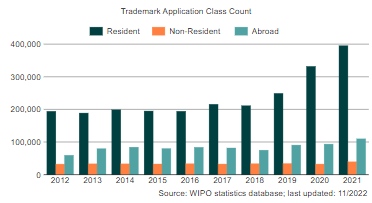
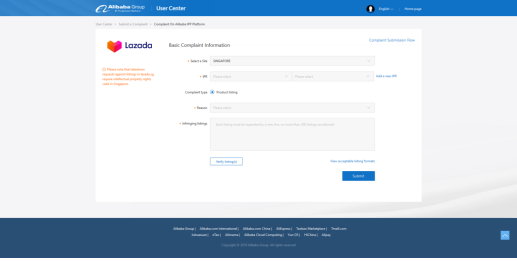

본 Q&A 게시판을 통해 해당 국가별 지재권 관련 궁금하신 사항을 문의 주시면, 성심성의껏 답변드리도록 하겠습니다. 다만. 비영리 공익을 목적으로 운영되므로 모든 게시글은 공개를 전제로하며, 해당 답변에 대한 법적인 책임과 효력을 갖지 않습니다
PARTI 튀르키예일반현황
제1절 국가·지역정보
1. 국가 기본정보
가. 현황
| [표 1] 국가기본정보 출처 : 외교부 | |
| 일반사항 |
•국명 : 튀르키예 공화국 Republic of Türkiye
•수도 : 앙카라 (약 574만명) •인구 : 8468만명 (2021) •면적 : 77만 9452㎢ (한반도의 약 3.5배) •종교 : 이슬람교(99%), 기독교, 유태교 등 - ※ 헌법상 정교분리 •민족 : 튀르키예족, 쿠르드족, 아랍인 등 |
|---|---|
| 정치현황 |
•정부형태 : 대통령 중심제(임기 5년, 연임 가능)
•주요인사 -대통령 : 레젭 타입 에르도안 (Recep Tayyip Erdoğan) -부통령 : 푸앗 옥타이 (Fuat Oktay) -외교장관 : 메블륫 차부쉬오울루(Mevlüt Çavuşoğlu) -의회구성 : 총600석, 임기 5년 •주요정당 : 정의개발당(290), 공화인민당(139), 인민민주당(61), 민족주의행동당(49), 좋은당(39) 등 |
| 경제현황 (2021년 기준, IMF 추정치) |
•GDP : 7959억$ (2021)
•1인당GDP : 9406$ (2021) •경제성장률 : 9% (2021) •교역 : *교역규모 : 4,967억불 -수출액 : 2253억$ -수입액 : 2714억$ •실업률 : 11.2% (2021) •주요산업 : 1차 산업 18.7%, 2차 27%, 3차 54.3% |
| 우리나라와의 관계 |
•외교관계
-1957.03.08. 수교일자 •공관현황 : -이원익 대사(2020.11월 부임) -에르신 에르친(Ersin Ercin) 대사 (2017.12월 부임) -07.01 주이스탄불 총영사관 개설 •투자현황 : -對튀르키예 투자(2021. 누계) : 39억불(885건) -對한국 투자(2021. 누계) : 54백만불(141건) •교역 : 82.6억불(2021, KITA) -수출액 : 70억 2000만$ -수입액 : 12억 4000만$ -수출품목 : 플라스틱류, 철강, 기계 및 부품, 자동차부품 등 -수입품목 : 의약품, 기계 및 부품, 자동차부품 등 •교민현황 : 2,727명(2020) |
나. 한-튀르키예 무역현황 및 사업정보
| [표 2] 對 韓 무역협정 체결현황 출처 : KOTRA | ||||
|---|---|---|---|---|
| 협정명 | 체결국가 | 체결일자 | 발효일자 | 비고 |
| 이중과세방지협정 (개정) | 한국 | 2021.10.22 | 미정
(기존법은 시행중) |
-기업이 상대국에서 얻은 소득을 본국 또는 상대국에서만 세금을 납부하도록 한 협정 |
| 세관상호지원협정 | 한국 | 2010.06.15. | 2012.06.28 | -양국 세관간 상호 협력추진을 명시한 협정 |
| 세관상호지원협정 | 한국 | 2010.06.15. | 2012.06.28 | -양국 세관간 상호 협력추진을 명시한 협정 |
| FTA 상품무역협정 | 한국 | 2012.08.01 | 2013.05.01 | -양국 간 지정제품에 대한 상품무역 관세를 완화하는 내용을 기초로 하는 협정 |
| FTA 서비스투자협정 | 한국 | 2014.07.07 | 2018.08.01 | -양국 간 서비스무역 관세 및 투자 장벽을 완화하기로 한 협정 |
2. 경제관련 정보
| [표 3] 경제관련 정보 자료원 : IMF, OECD, 튀르키예 중앙은행, KOTRA | |||||
|---|---|---|---|---|---|
| 경제지표 | 2017 | 2018 | 2019 | 2020 | 2021 |
| 경제성장률(%) | 7.47 | 2.83 | 0.88 | 1.8 | 11 |
| 명목 GDP( 십억$) | 850.91 | 797.12 | 760.77 | 716.9 | 802.67 |
| 1인당 GDP(PPP, $) | 28,242 | 29,343 | 29,724 | 28,294 | 31,058 |
| 1인당 명목 GDP($) | 10,616 | 9,693 | 9,127 | 8,577 | 9,539 |
| 정부부채(% of GDP) | 28 | 28.4 | 30.8 | 35.9 | 43.6 |
| 물가상승률(%) | 11.92 | 20.3 | 11.84 | 14.6 | 36.08 |
| 실업률(%) | 10.9 | 10.96 | 13.6 | 13 | 11.3 |
| 수출액(백만$) | 164,495 | 177,169 | 180,835 | 169,659 | 225,265 |
| 수입액(백만$) | 238,715 | 231,152 | 210,344 | 219,514 | 271,422 |
| 무역수지(백만$) | -74,220 | -53,983 | -29,509 | -49,855 | -46,157 |
| 외환 보유고(백만$) | 84,110 | 71,980 | 81,240 | 51,606 | 72,564 |
| 이자율(%) | 7.25 | 22.5 | 10.5 | 15.5 | 14 |
| 환율 (자국통화) | 3.65 | 4.83 | 5.67 | 7.72 | 8.89 |
*출처: IMF, 해관총서, GTA,국가통계국, KOTRA
가. 경제 전망
튀르키예 경제는 2021년 팬데믹에도 불구하고 양호한 성장률(1.8%)을 기록한 데 이어 2022년에도 GDP가 5.9% 성장할 것으로 전망
- 그러나 상대적으로 미약한 사회안전망 대규모 기업부채 등은 경기회복을 제약하는 요인으로 작용할 가능성
- 2010년 이후 튀르키예 통화가치 하락세에 따른 외국통화 표시 부채 규모가 확대되면서 기업부채가 누증
- 2018년 튀르키예의 금융위기 이후 기업들이 부채규모를 축소시키기 시작하였으나 팬데믹의 영향으로 기업의 자산건전성이 더욱 악화될 우려
| [표 4] 튀르키예 경제 성장률 *출처: 주오이시디 대한민국 대표부, OECD 튀르키예 경제보고서 주요 내용(2021) | |||
|---|---|---|---|
| 경제성장률 | 기업 부채자본 비율 | ||
나. 환율
튀르키예 리라화가 2022년 7월 21일 달러 대비 17.70으로 사상 최고치를 경신. 금년 리라화 가치는 25% 절하되며 주요 신흥국 중 최악의 실적을 기록(cf. 신흥국 통화지수 -4.1%)
- 2022년 러시아 등 일부를 제외한 대부분의 신흥국 통화가 약세를 시현했으나, 위험자산기피가 본격화한 `21년 이후 총 절하율이 50%를 상회하는 곳은 튀르키예가 유일
- 아르헨티나 -21%, 이집트·헝가리 -17%, 폴란드 -13%, 태국·필리핀 –10% 등
| [표 5] 튀르키예 환율 추이 *출처: Bloomberg, 국제금융센터 | |||
|---|---|---|---|
| 달러대비 리라화 환율 장기 추이 | 주요 신흥국 연간 통화가치 변화 | ||
리라화 가치 폭락의 원인으로는 튀르키예는 에너지 수입 의존도가 74%로 매우 높아 인플레 충격에 특히 취약하고, 금년 들어 수입물가 급등 등으로 경상수지·제조업 PMI 등 주요 경제지표가 악화되어 성장 모멘텀이 약화된 것이 원인으로 지적됨
– 러-우 전쟁 여파로 인한 에너지·식품 가격 상승이 코로나19 이후 높아진 소비자 및 생산자물가의 상승 압력을 가중
- 튀르키예는 화석연료 사용 비중이 높으며 원유의 93%, 가스 99%를 수입에 의존하며, 러시아는 주요 에너지 공급원으로 작년 원유 수입량의 1/4, 천연가스 45%를 공급
| [표 6] 튀르키예 물가 추이 *출처: Bloomberg, BP, Statistical Review of World Energy | |||
|---|---|---|---|
| 튀르키예 소비자 및 생산자 물가 추이 | 튀르키예 에너지 원천별 소비 구조 | ||
미국의 고강도 통화 긴축 등으로 안전자산 선호 및 달러 강세 환경이 지속되면서 리라화의 추가 절하 가능성에 무게가 실리는 만큼 외환위기 불안감이 더욱 심화될 우려
3. 지식재산권 분야 정보
가. 튀르키예 산업재산권법상 ‘발명’의 보호
- 튀르키예 산업재산권법상 ‘발명’은 ‘특정한 기술적 문제의 해결’로 정의되며 발명은 특허 및 실용신안을 통해 보호됨
- 한국에서와 마찬가지로 실용신안은 특허에 비해 출원 및 등록 절차가 용이함
- 튀르키예의 특허출원 및 등록 관련 개념들은 대체로 다른 나라와 유사함
나. 튀르키예 특허청 특허등록 절차
- 특허청에 소정의 서류를 갖추어 접수하고 접수 후 최대 7일 이내에 수수료를 납부
- 특허청에서 출원자에게 출원서의 형식요건에 이상이 없음을 통지하면 신청자는 특허청에 출원 발명과 기술적으로 유사한 문헌을 검색하는 선행기술 조사를 요청하고 15개월 이내에 관련 비용을 납부
- 튀르키예 특허청이나 국제조사기관에 의해 선행기술 조사보고서가 작성되고 보고서 완료 이후 3개월 내에 신청자는 특허성 조사 실시 희망 여부를 특허청에 공지
- 특허성 조사가 없는 특허를 선택했을 경우 특허가 바로 등록되며 특허성 조사가 있는 특허를 선택하였을 경우 조사 결과에 따라 특허가 등록되거나 거부
다. 한국과 다르게 특허성 조사 없는 특허를 인정
한국과 다르게 특허성 조사를 실시하지 않고도 튀르키예에서는 특허를 얻을 수 있으며 이는 개인발명가의 특허등록을 용이하게 하기 위한 제도임
- 다만 특허성 조사를 거치지 않은 특허는 유효기간이 7년에 불과하며 유효기간 이내에 출원인이나 제3자가 특허성 조사를 청구할 수 있고 특허성 조사결과에 따라 특허가 취소 가능
- 특허성 조사를 거쳐 등록된 특허는 출원일로부터 20년의 유효기간을 가지며 연장할 수 없음
제2절 현지 유관기관 정보
1. 산업재산권 기관
가. 튀르키예 특허청
튀르키예 특허청(T.P.I.)은 행정적·재정적 자주성을 가지는 상공업부 부속 특별 정부기관임. 튀르키예 특허청은 튀르키예 특허 기관의 설립 및 기능에 관한 법령 제544호(이하 「T.P.I법」이라고 함)에 기초하여 1994년 앙카라시에 설립되었으며, 공업소유권의 관리를 담당하고 있음. 또한 튀르키예 특허청은 2005년 1월 1일부터 특허에 관한 조사 및 심사 관청으로서 역할을 수행하기 시작하였음
튀르키예 특허청의 업무는 다음과 같음(T.P.I. 법 제3조).
a) (산업재산권법, 상표법 기타 관련 법률에 의하여 규정된) 공업소유권의 등록 절차, 관련 법률에 기초하여 해당 권리의 보호에 필요한 조치의 수행
b) 강제 라이선스 거래에서 중재 기관 및 기술 자문기관으로서의 역할
c) 권리의 이전 및 라이선스 협의의 관련 등록부에의 기재
d) 발명 사용의 감시 및 신기술과 기술 이전에 대한 정보의 수집 및 보급
e) 해외의 유사 기관 및 국제 기관과의 협력
f) 상공업부의 승인을 얻은 기관으로서 국제 기관에서 튀르키예를 대표
g) 국가의 필요 및 이익의 입장에서 공업소유권에 대한 국제 협정의 준비에의 공헌 및 이들 협정의 튀르키예에서의 시행
h) 기술 및 연구 개발 활동을 추구하는 국제 기구와의 협력 수행, 문서 센터의 설립 및 대중에게 정보 제공
i) 공업소유권에 대한 “특허청 관보”의 정기적인 발행
j) 공업소유권의 개선에 대하여 공중에게 알리기 위해 필요한 연구 및 활동의 수행
k) 법률에 의해 위임된 기타 기능의 수행
튀르키예특허청은 홈페이지를 통하여 여러 가지 정보를 제공함. 홈페이지는 튀르키예어 외에 영문 홈페이지를 제공하고 있음. 영문 홈페이지에서는 튀르키예특허청에 대한 소개, 조직도, 특허/상표/공업디자인권 법령 및 시행규칙 등을 제공하고 있음. 또한 특허/상표/공업디자인에 대한 출원 또는 등록을 검색할 수 있는 서비스를 제공함. 다만 온라인 출원 서비스는 아직 제공되고 있지 않으며 준비중에 있음
튀르키예특허청의 내부 조직은 다음과 같은 기관으로 구성됨
[그림 1] 특허청 조직도
튀르키예 특허청 연락처
주소 : Gazi, Hipodrom Cd. No:115, 06560 Yenimahalle/Ankara, Turkey
Tel : +903123031303
Web : http://www.turkpatent.gov.tr/
2. 그 외 지식재산권 유관기관
가. 특별법원(special court)
튀르키예는 우리나라의 특허법원과 유사한 역할을 수행하는 공업소유권과 관련된 소송절차를 담당하는 특별법원을 설립하였음. 특별법원은 법무부에 의하여 설립된 기관임. 특별법원은 공업소유권과 관련된 법률에 의해 발생하는 모든 소송행위 및 주장에 대한 재판권을 가짐
현재 법무부에 의하여 설립된 특별법원은 민사법원이 7개소, 형사법원이 5개소, 총 12개소임. 이하, 특별법원의 소재지에 대하여 좀 더 자세하게 살펴보면 다음과 같음
• 이스탄불(Istanbul)
- Civil Court of Intellectual Property and Industrial Rights(Civil Court of IP & IR) 4개소
- Criminal Court of Intellectual Property and Industrial Rights(Criminal Court of IP & IR) 3개소
• 앙카라(Ankara)
- Civil Court of IP & IR 3개소
- Criminal Court of IP & IR 1개소
• 이즈미르(Izmir)
- Criminal Court of IP & IR 1개소
나. 관세청
해당 법령과 법률 No.4458에 따라서 국경조치는 이중으로 되어 있고, 지식재산권의 소유자(권리 보유자) 또는 그 승계인은 세관에 대해서 위조제품의 통관정지를 요구할 수 있고, 나아가 특별법원에 대해서 가처분이나 침해 정지의 명령을 요구할 수 있음. 관세청은 예전에는 대장(大藏) 관세청의 일부국이었지만, 1993년에 동청에서 분리되어 총리부 직할조직으로 재편성되었음
3. 지식재산권 관련 조약 현황
튀르키예는 과거 튀르키예가 공업소유권과 관련된 분야에서 취하였던 여러 조치들을 법률, 규칙 등을 통하여 구체화하였으며, 그와 관련된 국제조약에 가입을 하고 있음. 튀르키예 헌법 제90조에 따라서, 정당하게 비준·시행된 국제조약은 국내법과 동일하게 취급됨
다음 표는 튀르키예가 가입한 국제조약을 정리한 것임
| [표 7] 가입 조약 | ||||
|---|---|---|---|---|
| 명칭 | 체결일 | 가입국수 | 최종 상황 및 가입일 | |
| WIPO 설립조약 | 1967 | 182 | 1976 | |
| 공업소유권 보호를 위한 파리조약 | 1883 | 169 | 1995년 스톡홀롬 보유 제(1~12)조에 참가 | |
| 특허협력조약(PCT) | 1970 | 128 | 1996.01.01 | |
| 표장의 등록을 위한 상품 및 서비스의 국제분류에 관한 니스협정 | 1957 | 76 | 1996.01.01 | |
| 도형 상표 분류에 관한 비엔나협정 | 1973 | 20 | 1996.01.01 | |
| 국제특허분류(IPC)에 관한 스트라스부르협정 | 1971 | 55 | 1996.01.01 | |
| 특허 절차상 미생물 기탁의 국제적 승인에 관한 부다페스트조약 | 1977 | 61 | 1998.11.30 | |
| 공업디자인의 국제분류를 정하는 로카르노협정 | 1968 | 45 | 1998.11.30 | |
| 마드리드협정 의정서 | 1989 | 66 | 1999.01.01 | |
| 공업디자인의 국제분류에 관한 헤이그협정 | 1999 | 42 | 2005.01.01 | |
| 상표법조약(TLT) | 1994 | 33 | 2005.01.01 | |
| 유럽특허조약 | 1973 | 31 | 2000.11.01 | |
| 세계무역기구설립협정 | 1995 | 148 | 1995.03.26 | |
제3절 지식재산권 지원 사업 현황
| [표 13] 지식재산권 지원 사업 현황 | |||||
|---|---|---|---|---|---|
| 사업분류 | 사업명 | 주요내용 | 세부정보(링크) | 비고 | |
| 1. 지식재산창출 | IP기반 해외진출 지원 | 수출(예정) 중소기업 대상 최대 3년간 IP 서비스(해외권리화 지원 등)를 제공하여 글로벌 강소기업으로 육성 | www.ripc.org | ||
| 스타트업 지식재산바우처 사업 | 스타트업 대상으로 원하는 IP 서비스(국내외 IP 권리화 등)를 원하는 시기에 이용할 수 있는 바우처 발급 | 위탁기관 미정 | |||
| 중소기업 IP 바로지원 | PCT 출원 비용 등 중소기업 경영시 발생하는 시급한 IP 애로 사항 상담 및 해결 | www.ripc.org | |||
| 2. 지식재산활용 | 지식재산 서비스 활성화 사업 | 지식재산서비스기업의 국내·외시장 판로 개척 지원 | www.kaips.or.kr | ||
| 3.지식재산보호 | K-브랜드 분쟁대응 지원 | 수출기업의 K-브랜드 해외 지재권 침해 피해 최소화를 위한 온라인 위조 상품 및 상표 무단선점 대응 지원 | www.koipa.re.kr | ||
| 특허 분쟁대응 지원 | (사전예방)기업 맞춤형 특허분쟁 위험 진단 및 예방 지원 (사후대응)특허침해·피침해 분석 등 분쟁 상황별 맞춤형 대응 전략 제공 |
www.koipa.re.kr | |||
| 4. 기타 수출지원 사업 | 수출바우처 사업(산업부) | 중소·중견기업 중 세부사업 요건을 충족하는 기업을 대상으로, 해외 IP 획득 및 활용에 필요한 서비스를 바우처 형태로 지급 | www.exportvoucher.com | 산업부 | |
| 수출바우처 사업(중기부) | 수출 유망 중소기업 대상, 해외 IP획득 및 활용에 필요한 서비스를 바우처 형태로 지급 | www.exportvoucher.com | 중기부 | ||
| 중소기업 혁신 바우처 사업(중기부) | 제조업 영위 중소기업 대상, IP 출원 및 컨설팅 서비스를 바우처 형태로 지급 | www.mssmiv.com | 중기부 | ||
※ 사업분류 1,2,3은 특허청 산하 사업임
※ 위 자료는 2022년 기준으로 작성되었으며, 세부 지원 기준 등 자세한 사항은 각 홈페이지 링크를 통해 확인이 필요함
PARTII 지식재산권
제1절 개요
1. 법률체계 및 지식재산권 관련 법률
가. 지식재산권 제도
1995년, 튀르키예는 효율적이고 현대적인 공업소유권 제도를 확립하기 위하여 관련 법률의 연구를 실시하였으며, 그 결과 구체적인 성과물로서 공업소유권과 관련된 현행 제도를 확립할 수 있었음. 튀르키예의 현행 법률에서 공업소유권이라는 용어는 다음의 권리가 포함됨
a) 특허 및 실용신안
b) 상표
c) 공업디자인
d) 지리적 기호
e) 집적회로 배치설계
공업소유권은 무형의 권리로, 발명자나 고안자, 최초 소유자의 이름으로 발명, 실용신안, 디자인, 마크, 심볼 등의 독창성을 출원 등의 법에서 규정된 절차를 통하여 등록을 받고 시장에서 타인의 제품이나 서비스 등과 확실히 구별함으로써 위조, 모방으로부터 보호하는 것을 목적으로 함. 이러한 공업소유권의 보호 목적은 국민들이 자신들의 지적 제품을 자유롭고 용이하게 생산하는 것을 장려하고, 상기 제품에 대한 데이터를 명확하게 하고, 제품이나 기술 등의 보호를 보증하기 위함임
나. 기타 제도
튀르키예 산업재산권법에 있어서 특이한 제도로 추가 특허 및 비밀특허가 있음. 또한 직무 발명에 대한 규정을 자세하게 정하고 있음
(1) 추가 특허
추가 특허는 주 특허의 전체적 발명의 개념을 공유하는 발명으로서 주 특허에 관한 발명을 개선 발전시키는 발명의 보호를 위한 출원을 말함. 즉, 국내특허법에서 국내 우선권 주장 출원과 유사한 제도라고 볼 수 있음
다만 국내 특허법에서 국내 우선권 주장 출원은 원 출원일로부터 1년 이내에 제출할 수 있는 반면에 튀르키예 산업재산권법에서의 추가 특허는 특허 부여에 대한 결정 전까지 제출할 수 있음. 이 경우 진보성의 기준은 추가 특허에 적용되지 않음
- 추가 특허의 우선일은 출원일에 의해 결정되며 특별한 규정이 없는 한, 추가 특허는 주특허의 일체적 부분으로 간주됨. 따라서 주 특허와 동일한 보호기간을 가지며 연차료 납부 대상이 되지 않음
- 또한 추가 특허는 출원인의 요청에 의해 또는 주특허와 관련성이 없다고 판단된 경우 그러한 통지 후 3월 이내에 주 특허로의 변경이 가능함. 또한 원래의 주 특허가 포기되는 경우 새로 제출된 추가 특허는 주 특허로 변경됨. 추가 특허가 주 특허로 변경되는 경우, 새로운 주 특허는 연차료를 납부하여야 하나 보호기간은 이전과 동일함
(2) 비밀특허
출원일로부터 2개월 동안 비밀이 유지되나 발명이 국방에 중요한 것으로 간주되는 경우에는 상기 비밀유지 기간을 출원일로부터 5개월까지로 연장할 수 있음. 이러한 사실은 출원인에게 통지하고 즉시 국방부에 출원서 사본을 송달함
특허청과 국방부는 국방상 중요한 발명을 특정하고, 국방부는 비밀 유지 준수를 조건으로 출원을 사전 심사하는 권한을 가짐. 위급한 경우에는 해당 5개월의 기간 만료 전에 특허출원이 비밀리에 수행되고, 출원인이 해당 상황에 대해서 전달받을 것을 특허청에 대해 문서로 청구할 수 있음
비밀 관리하에 발행된 특허는 비밀특허 등록부에 게재되고 특허 부여일로부터 1년간 비밀이 유지됨. 또한 상기 비밀 유지 기간은 1년 단위로 연장이 가능함
- 비밀특허에 대하여는 연차료를 납부할 필요가 없음. 또한 출원인은 특허가 비밀 유지가 되는 동안 보상을 청구할 수 있음. 보상금 액수에 합의할 수 없는 경우에는 해당 금액은 법원에 의해 결정됨. 다만 비밀특허의 내용이 특허권자의 과실에 의해 개시되는 경우에는 보상을 청구할 권리가 발생하지 않음
(3) 직무발명
튀르키예 산업재산권법에서는 국내의 발명진흥법에서 규정한 것과 같은 직무발명에 대하여 자세히 규정하고 있음
- 종업원에 의한 발명은 직무발명 또는 자유발명으로 분류되며 직무발명은 종업원에 의해 이루어진 발명으로서, 고용 기간중에 부과된 업무를 수행하는 가운데 이루어진 발명 또는 그 발명이 경험 및 업무 활동에 의존하는 부분이 큰 발명을 말함
종업원은 자신이 한 발명을 사용자에게 보고서에 의하여 통지하여야 하고 사용자는 종업원의 보고서의 수령일로부터 4개월 이내에 종업원에게 권리 주장을 하여야 함. 상기 주장에 의하여 당해 발명에 관한 모든 권리가 사용자에게 양도됨. 그러나 사용자가 자신의 권리를 포기하거나 권리의 일부만 주장하는 경우, 또는 상기 4개월의 기간 내에 권리의 주장을 하지 않은 경우엔 직무발명은 자유발명이 됨
사용자는 종업원에게 보상을 해야할 의무가 있으며, 직무발명에 대하여 출원할 권리 및 의무가 있음. 또한 종업원에 의한 직무발명에 관한 비밀 유지 의무를 가짐. 사용자는 기업의 이익을 위해 출원을 유보할 권리를 가짐. 또한 출원 또는 특허를 포기하는 경우 종업원에게 통지하여야 함
종업원은 비밀유지 의무를 지니며, 사용자의 출원에 협조하여야 할 의무를 가짐. 또한 자유발명에 대하여도 사용자에게 통지할 의무를 가지고, 보상을 받을 권리가 있음. 또한 사용자가 파산하여 특허를 기업과 별도로 처분하는 경우 종업원은 발명을 취득할 선매권을 가짐
(4) 특허와 실용신안의 비교
특허와 실용신안 제도를 간략하게 비교하면 다음 표와 같음
| [표 9] 특허 제도와 실용신안 제도의 비교 | |||||
|---|---|---|---|---|---|
| 특허 | 실용신안 | ||||
| 요건 및 대상 | 신규성 | ○ | ○ | ||
| 진보성 | ○ | × | |||
| 산업상 이용 가능성 | ○ | ○ | |||
| 방법 및 상기 방법의 결과물인 제품 | ○ | × | |||
| 화학물질 | ○ | × | |||
| 절차 및 권리 | 조사 | ○ | × | ||
| 심사 | ○ | × | |||
| 공개 | ○ | ○ | |||
| 보호기간 | 20년 | 10년 | |||
2. 최근 개정사항 및 동향 소개
최근 튀르키예 개정 산업재산권법에 의하면, 교직원의 발명에 관하여 자유발명으로 적용하였던 과거의 법조문을 개정하고 교직원의 발명에 대해서는 '직무발명' 규정을 적용함. 따라서, 대학에서 지원하는 경우 대학이 권리를 소유하고 지적 산물이 공적 R&D의 결과인 경우 소유권을 3분의 1로 나누어 학인에게, 나머지 3분의 2는 대학이 소유하고 있음. 튀르키예 과학 산업 기술부 장관은 개정 이후 대학 직원의 직무발명이 크게 증가할 것으로 예상함. 또한, 이러한 발명의 상업화를 통해 라이선스 수입이 증가할 것으로 기대함
튀르키예 특허 시스템에는 두 가지 유형의 특허가 있으며, 하나는 20년의 보호를 제공하고 심사가 있고, 다른 하나는 7년의 보호를 제공하고 심사가 없음. 튀르키예 개정 산업재산권법에 의하면, 출원인은 첨단 조사 보고서를 고시한 날부터 3개월 이내에 특허제도 중 하나를 선택해야 함. 과거 법률에 의하면 출원인이 3개월 이내에 특허의 종류를 선택하지 않으면 심사를 거치지 않은 특허로 간주되었는데, 개정법에 의하면 출원인이 3개월 이내에 특허 유형을 선택하지 않으면 출원이 취하된 것으로 간주함 실질심사에 의하지 않고 부여되는 특허권 등록 절차(소위, 비심사 7년 특허)는 2017. 1. 10. 산업재산권법 개정으로 폐지되었음
튀르키예 개정 산업재산권법에 의하면, 제3자는 신규성 또는 진보성/단계의 부족 또는 발명의 설명 부적절성을 포함하여 특허가 특허요건을 준수하지 못하는 이유를 특허 출원 후 6개월 이내에 제출하여 특허 출원에 대해 이의를 제기할 수 있음. 제3자는 특허요건의 미준수, 설명의 부적절성 또는 특허 출원의 최초 명세서 범위 밖의 내용에 관한 것이라고 주장하는 특허에 대해 이의를 제기할 수 있음
튀르키예 개정 산업재산권법에 의하면, 실용신안의 특허로부터 발생하는 권리를 의도적으로 침해하여 상품을 생산하거나 상품을 생산하는 동안 특허된 방법을 사용하는 자는 50,000~1,000,000 TRY 사이의 징벌적 벌금에 처한다고 명시됨. 과거에는 특허권을 둘러싼 형사 문제에 대한 규제가 없었고 발명가는 형사 조항의 법률상 부재로 고통받고 있었기 때문에 발명가는 이러한 개정을 환영할 수 있음
최근 튀르키예 특허청(TÜRKPATENT)은 웹사이트를 통해 상표 출원인에게 마드리드 e-Filing 서비스에 대한 액세스 권한을 부여함. 상표 소유자는 온라인으로 국제 출원을 제출할 수 있음. 통합된 주요 기능에는 사용자가 상품 및 서비스 목록에서 용어 분류를 확인할 수 있는 Madrid Goods & Services Manager에 대한 인앱 액세스가 포함됨. 마드리드 e-Filing으로의 확장을 통해 튀르키예 상표권 소유자는 튀르키예 특허청을 통해 WIPO가 전자적으로 발행한 부정행위를 즉시 수신 및 대응할 수 있는 기능을 활용할 수 있음. 이 기능은 마드리드 의정서에 참여하는 모든 국가의 특허청에서 사용할 수 있으며 국제 등록 처리에 상당한 시간을 절약하는 데 도움이 됨
2021년 2월 25일에 튀르키예가 중재(alternative dispute resolution, ADR)로 인한 국제 합의에 관한 유엔 협약(싱가포르 협약)을 비준함으로써 싱가포르 협약은 2021년 10월 22일 튀르키예에서 발효되었음. 싱가포르 협약에 따라 충돌 당사자가 중재하고 국제적 성격의 상업 분쟁을 해결한 화해 협정이 튀르키예에서 시행됨. 싱가포르 협약은 튀르키예의 특허 분쟁을 포함한 외국 상업 합의의 집행 가능성을 가능하게 함.
또한, 2019년 1월 1일까지 상법이 개정되어 법원 소송을 제기하기 전 조정 절차의 이행이 의무화 됨. 이 상법 개정안은 채권 추심 또는 보상 청구와 관련된 모든 유형의 상업 분쟁에 대해 의무화 됨. 따라서 보상 청구와 관련된 특허 침해 소송, 직무 발명 및 직원 디자인의 지불 또는 보수 계산과 관련된 분쟁, 라이선스 계약과 관련된 분쟁은 이 변경으로 인해 발생함. 민사 분쟁 조정에 관한 법률에 따르면, 당사자가 공동으로 조정 및 서명한 화해 계약은 튀르키예 판결의 성격상 문서로 간주됨
3. 한 페이지로 보는 지재권 제도
| [표 10] 한 페이지로 보는 지식재산권 제도 | |||||||||||
|---|---|---|---|---|---|---|---|---|---|---|---|
|
● 튀르키예에는 특허성 조사를 실시하지 않고 얻을 수 있는 특허제도가 있었으나(다만 유효기간 7년에 불과함) 해당 제도는 폐지되었음. 다만 유효기간 내에 무심사 특허에서 일반특허로 전환 신청이 가능함
● 튀르키예는 추가 특허 제도가 있어서, 주 특허의 권리 부여 결정 전까지 추가 특허 출원이 가능함 (우선권 제도와 비슷하며, 추가 특허는 주 특허와 동일한 보호기간이 적용됨. 연차료 납부대상X) ● 튀르키예는 발명이 국방에 중요한 것으로 간주되는 경우 일정 기간 비밀이 유지되는 비밀특허제도가 존재함 ● 튀르키예에서 마드리드 e-filing 서비스 액세스가 가능함 (온라인 국제 출원 가능) ● 공업디자인 존속기간 25년이며 (5년 5번 갱신할 수 있음), 단 종료되는 달의 말일 전인 6개월 이내에 갱신이 이루어져야 함 ● 세관에서 침해 물품 압류가 이루어진 경우, 압튜 통지일로부터 10일 이내에 권리자가 가처분 명령 또는 본안판결을 요구하는 소송을 특별법원에 제기 (제기하지 않으면 위조품 통관이 이루어짐) |
|||||||||||
제2절 주요 지식재산권별 비교표
1. 특허(전리)
| 튀르키예 | 한국 | |
|---|---|---|
| 특허법 적용 | 선출원주의 | 선출원주의 |
| 특허요건 |
신규성
진보성 산업상 이용가능성 |
신규성
진보성 산업상 이용가능성 |
| 신규성 예외 상실 기간 | 12개월 | 12개월 |
| 심사청구제도 | O | O |
| 공개제도 | O | O |
| 공고제도 | O | O |
| 이의신청제도 | O | O |
| 권리존속기간 |
설정등록일로부터 발생,
출원일로부터 20년간 존속 |
설정등록일로부터 발생,
출원일로부터 20년간 존속 |
| 실용신안제도 | O (존속기간 10년) | O (존속기간 10년) |
2. 디자인
| 튀르키예 | 한국 | |
|---|---|---|
| 심사방식 | 심사방식 운영 (방식심사, 실체심사 모두 이루어짐) |
물품에 따라 심사방식, 일부심사방식 병행 운영 |
| 보호기간 | 설정등록일로부터 발생하여 출원일로부터 최대 25년 (5년 단위로 갱신) |
설정등록일로부터 발생하여 출원일로부터 20년 |
| 신규성 예외 상실 기간 | 12개월 | 12개월 |
3. 상표권
| 튀르키예 | 한국 | |
|---|---|---|
| 다류 1출원 제도 | 다류 1출원 제도 채택 | 다류 1출원 제도 채택 |
| 존속기간 | 상표출원일부터 10년 | 상표등록일부터 10년 |
| 이의신청 제도 | O | O |
| 의견제출 또는 정보제공 | O | O |
| 등록 후 사용증거 제출의무 | X | X |
PARTIII 특허·실용신안
제1절 주요제도 및 등록요건
1. 출원현황 통계
2011년부터 2020년까지 튀르키예에서 특허 출원 건수를 살펴보면 아래의 표와 같음
| [표 11] 튀르키예 특허 출원 건수 출처: WIPO | ||||
|---|---|---|---|---|
| 연도 | Resident | Non-Resident | Abroad |
|
| 2011 | 4,258 | 228 | 1,026 | |
| 2012 | 4,833 | 232 | 1,184 | |
| 2013 | 4,769 | 269 | 1,030 | |
| 2014 | 5,170 | 331 | 1,329 | |
| 2015 | 5,799 | 489 | 1,508 | |
| 2016 | 6,740 | 618 | 1,649 | |
| 2017 | 9,083 | 380 | 2,074 | |
| 2018 | 7,728 | 310 | 1,632 | |
| 2019 | 8,340 | 217 | 1,707 | |
| 2020 | 8,520 | 238 | 1,590 | |
2011년부터 2020년까지 튀르키예에서 특허 등록된 건수를 살피면 다음과 같음
| [표 12] 튀르키예 특허 등록 건수 출처: WIPO | ||||
|---|---|---|---|---|
| 연도 | Resident | Non-Resident | Abroad |
|
| 2011 | 865 | 123 | 360 | |
| 2012 | 1,057 | 81 | 318 | |
| 2013 | 1,244 | 111 | 377 | |
| 2014 | 1,306 | 106 | 431 | |
| 2015 | 1,785 | 156 | 640 | |
| 2016 | 1,878 | 155 | 789 | |
| 2017 | 2,055 | 143 | 836 | |
| 2018 | 2,887 | 285 | 816 | |
| 2019 | 2,121 | 185 | 867 | |
| 2020 | 2,301 | 134 | 943 | |
2. 주요제도
튀르키예의 특허제도는 선출원주의, 서면주의 원칙을 따르고 있으며 심사에 있어서는 출원인이 심사주의 또는 무심사주의를 선택할 수 있었으나, 2017년 산업재산권법 개정으로 무심사주의에 의해 부여될 수 있는 특허는 폐지되었음. 따라서 출원인은 법에서 정한 요건에 부합하도록 출원서류 및 기타 필요한 서류를 제출하여야 함
가. 보호대상
발명이란 특정한 기술적 문제에 대한 해결책으로 정의되며 특허란 이러한 발명에 대하여 발명자에 대하여 부여되는 산업재산권의 일종임
|
<특허를 받을 수 없는 발명>
발견, 과학 이론 및 수학적 방법, 정신적 행위, 사업 활동 또는 게임 관련 계획, 규칙 및 방법, 컴퓨터 프로그램, 미적 창작물, 예술 작품, 정보의 표시 등은 발명으로 간주되지 않는다. 또한, 공공 질서 또는 공공 도덕에 반하는 발명, 미생물학적 공정 또는 이러한 공정의 결과로 얻은 제품을 제외하고 식물 품종 또는 동물 종족을 사용한 식물 또는 동물 생산을 위한 생물학적 공정, 인체 또는 동물의 신체에 적용되는 진단 방법 및 수술 방법을 포함한 모든 치료 방법, 형성 및 발달의 다양한 단계에서 인체 및 유전자 서열 또는 부분적 유전자 서열을 포함하여 인체의 요소 중 하나의 발견, 인간 복제 작업, 인간 생식 계열의 유전적 정체성을 변경하는 절차, 산업 또는 상업적 목적을 위한 인간 배아의 사용, 인간 또는 동물에게 중대한 의학적 혜택, 동물에게 통증을 유발할 수 있는 유전적 정체성 변화 과정과 이러한 과정의 결과로 얻은 동물 등은 특허받을 수 없음 |
나. 등록요건
발명이 특허등록을 받기 위해서는 신규성, 진보성 및 산업상 이용가능성이 있어야 한
다. 특허출원의 종류
(1) 특허 제도에서의 출원의 종류
a) 정규 출원
- 기본적인 출원의 경우임. 우선권을 수반하지 않는 경우엔 출원서를 제출한 날이 출원일로 인정되나 조약에 의한 우선권 또는 박람회 출품에 의한 우선권을 주장하는 경우에는 조약국에의 출원일 또는 박람회 출품일을 우선일로 인정함
b) 변경 출원(법 제65조)
- 특허출원을 실용신안에 의해 보호할 것을 요구하는 출원임
c) 추가 특허출원(법 제121조 내지 제124조)
- 주 특허의 전체적 발명의 개념을 공유하는 발명으로서 주특허에 관한 발명을 개선·발전시키는 발명의 보호를 위한 출원임
d) 비밀 특허 출원(법 제125조 내지 제128조)
- 특허청 및 국방부의 협력에 의해 국방상 중요한 것으로 인정되어 비밀이 유지되는 출원임
e) 분할출원(시행규칙 제16조)
- 발명의 단일성 요건을 만족시키지 못하는 경우 등록을 위하여 원출원의 일부를 별도의 출원으로 하는 제도임
(2) 실용신안 제도에서의 출원의 종류
a) 정규 출원
기본적인 출원의 경우임
b) 변경출원(법 제167조)
실용신안 출원을 특허에 의해 보호할 것을 요구하는 출원임
c) 공업디자인으로의 출원(법 제168조)
실용신안의 주제는 공업디자인으로서도 등록할 수 있으며, 그 경우에는 관계 법령의 규정이 적용됨
라. 출원인 적격(법 제2조)
산업재산권법에 의하여 보호를 받는 대상자는 튀르키예 공화국 영토 내에 거주하고 있거나 또는 상공업상의 기업으로서 확립되어 있는 자연인 및 법인, 또는 파리조약의 규정에 의해 출원자격을 가진 자임
상기 언급한 대상자 이외의 자연인 또는 법인으로서, 튀르키예 공화국의 국민에 대해 법률상 또는 사실상의 보호를 부여하는 국가의 국민은 호혜의 원칙에 따라 튀르키예에서 특허 및 실용신안 등록의 보호를 받음
제2절 출원 및 심사절차
1. 특허 출원 절차
가. 출원절차
출원인에 의하여 출원이 이루어지는 경우, 다음과 같은 절차에 의하여 출원 절차가 진행됨
a) 특허청에 출원
b) 출원이 정당한 서식으로 제출되었는지를 심사(방식심사)
c) 특허청이 기술 수준을 심사
d) 출원과 기술 수준에 관한 특허청의 조사보고서를 특허관보에 공개
e) 제3자가 발표된 조사보고서에 대한 소견을 공표
f) 출원인이 희망하면 해당 발명이 신규하고, 산업에 응용할 수 있고, 최신 기술 수준을 넘는지 특허청이 심사(실체심사)
g) 특허청이 심사에 기초하여 특허를 부여 또는 출원을 거절
다음 흐름도는 출원의 진행 과정을 간략히 나타낸 흐름도임
나. 출원서류(법 제42조)
특허를 받기 위하여 출원을 하는 자는 다음의 서류들을 제출하여야 함
a) 출원서
b) 발명을 설명하는 명세서
c) 보호가 청구되는 발명의 구성 요소를 커버하는 클레임
d) 명세서, 클레임에서 언급된 도면
e) 요약서
f) 출원 수수료의 납부를 나타내는 영수증
g) 대리인을 통해서 출원하는 경우, 위임장
h) 출원인이 법인인 경우, 서명이 들어간 품의서
상기 제출 서류들의 기재에 관한 것을 다음 표에 정리하였음
| [표 13] 제출 서류의 기재 내용 및 기재 형식 | ||
|---|---|---|
|
기재 내용 |
출원서 | 발명의 명칭, 출원인에 관한 정보(성명, 국적, 주소 등), 대리인이 선임되어 있는 경우 대리인에 관한 정보, 출원인 또는 대리인의 참조 번호, 발명자에 관한 정보, 출원권의 획득 방법, 선출원에 대한 정보(분할출원인지 추가 특허 출원인지 여부), 명세서, 요약서 및 도면의 수, 클레임의 수, 날짜 및 출원인 또는 대리인의 서명, 국제분류에 관한 분류 기호 |
| 명세서 | 발명의 명칭(2글자 내지 7글자의 단어로 구성되는 것이 바람직), 발명이 관계된 기술 분야 및 기술 수준(다른 특허와의 상이점을 상세히 설명하고 비교할 수 있도록 기재, 선행 기술에 관한 문헌을 표시하는 것이 바람직), 해결하려는 기술적 과제, 도면의 설명, 발명의 설명(도면에 관한 번호는 괄호 안에 표시) 및 발명의 산업상 이용 태양 | |
| 클레임 | 1 또는 2 이상의 클레임. 간결 명료하고 발명의 요소를 상세히 표시하기에 충분한 수로 구성하고, 연속 번호를 매김 | |
| 도면 | 도면은 문자를 포함하지 않는 것이 원칙. 도면의 중요 부분은 명세서에 나타난 순서대로 연속하여 번호를 매김. 영구적인 흑색 잉크를 사용하고 색채를 사용하지 않으며 윤곽을 확실히 한 선과 짙은 색의 필치로 작성. 절단면은 도면의 참조 기호 및 선의 독출을 방해하지 않은 병행 사선으로 그림. 크기 및 명료성은 2/3 배로 축소하여 복사를 한 경우 모든 세부 사항을 용이하게 식별할 수 있을 정도여야 함. 모든 선은 제도 용구를 사용하여 그림. 숫자 및 문자는 세로 0.32cm 이상으로 하고 문자를 표기하는 경우, 전문 분야에 관해서는 로마자 및 그리스 문자를 사용. 하나의 완성도가 2 이상의 페이지에 그려지는 경우 페이지에서의 도면의 배치는 여러 페이지를 통합함으로써 다른 페이지에 나타나는 어떠한 도면의 어떠한 부분도 감추지 않고 완전한 도면이 조립되도록 함. 1페이지 또는 복수 페이지상의 각각의 도면은, 바람직하게는 세로 방향으로 불필요한 간격을 두지 않고 서로 명료하게 분리하여 제시. 도면이 세로 방향으로 배치될 수 없는 경우, 도면은 그 상단을 용지의 왼쪽에 위치시켜 가로 방향으로 제시. 동일한 특징은 출원 전체를 통해 동일한 참조 기호에 의해 표시. 다수의 참조 기호를 도면에 사용하는 경우, 명세서의 뒷부분에 클레임 앞에 별지를 첨부하고, 모든 참조 기호 및 그들의 기호에 의해 표시하는 특징을 열거. 각각의 도면 페이지에 도면 페이지 합계 수와 그 페이지 번호를 표시. 도면의 각 페이지에는 출원인 또는 대리인이 서명하고 날짜를 첨부. 출원인은, 요약서와 함께 공표하는 도면으로서, 선행 기술을 구성하는 것이 아닌 것의 번호를 출원서에 표시 | |
| 요약서 | 명세서, 클레임 및 도면에 개시한 기본적 요소를 기재하고, 발명이 관계된 기술 분야를 지정. 과제의 해결 요지 및 발명의 용도를 명료하게 이해시키도록 기재. 단어 수를 50 내지 100개로 하는 것이 바람직 | |
| 용어 및 기호 | 용어 및 기호는 일관되게 사용. 중량 및 치수의 단위는 미터법으로 표기. 온도는 섭씨로 표기. 열, 에너지, 빛, 소리 및 자기 작용의 표시 및 수식이나 전기 단위의 표시에도 국제 규칙에 따를 것. 화학식에 관해서는 원자량, 분자식 및 일반적으로 사용하는 기호를 사용. 일반적으로 인정되는 전문 용어, 기호 및 부호만을 사용하는 것을 원칙으로 함 | |
|
기재 형식 |
서류 부수 | 출원서 1통, 명세서, 클레임, 도면 및 요약서 각각 3통 |
| 복제성 | 출원서 등은 사진, 전기적 방법, 사진 옵셋 및 마이크로 필름으로 복제가 가능한 형태로 제시. 용지는 접히지 않고 구멍, 구김이 없어야 함. 각 용지는 한쪽 면만 사용. 출원의 각 서류는 새로운 페이지부터 시작. 모든 용지는 판독이 용이하고 복사 목적을 위해 용지를 분리하고 다시 철하기에 용이한 방법으로 철함 | |
| 용지 사이즈 | 모든 서류는 A4사이즈의 용지를 사용. | |
| 여백 | 명세서, 클레임 및 요약서의 경우 최소 여백은, 상단 2cm, 좌단 2.5cm, 우단 2.5cm, 하단 2cm로 함. 최대 여백은 상단 4cm, 좌단 4cm, 우단 4cm, 하단 2cm로 하는 것이 바람직. 도면의 경우 사용할 수 있는 영역은 26.2cm×17.0cm로 함. 최소 여백은 상단 2.5cm, 좌단 2.5cm, 우단 1.5cm, 하단 1cm로 함 | |
| 페이지 번호 | 제출 서류의 모든 페이지는 명세서, 클레임 및 요약서의 순서대로 연속 번호를 매김. 페이지 번호는 용지의 상단 또는 하단의 여백 중앙에 매김 | |
| 줄 번호 | 명세서 및 클레임의 각 용지는 5줄째마다 번호를 매기고, 해당 줄 번호는 좌측의 여백의 오른쪽 반절에 매김 | |
| 본문의 작성 방법 | 타자기 또는 컴퓨터 인쇄에 의할 것. 필요한 경우에는 도식 기호 및 부호, 화학식 또는 수식, 중국어 및 일본어의 일정 문자에 한해 수기(手記)로 할 수 있음. 행간 스페이스는 1.5로 함. 본문의 내용은 어두운 색 계통의 영구적인 색으로 타이핑하고, 사용 문자는 대문자가 세로 0.21cm 이상일 것 | |
| 도형, 식 및 표 | 출원서, 명세서, 클레임 및 요약서에 도면을 포함시킬 수 없으나 화학식 및 수식 기재는 가능. 명세서 및 요약서에 표를 기재할 수 있음. 클레임에는 클레임의 주제에 관하여 표를 사용하는 것이 유용한 경우에만 사용 가능 표 및 화학식 또는 수식을 용지 위에 세로로 만족스럽게 배치할 수 없는 경우에는 용지 위에 가로로 배치할 수 있음. 이 경우 표 또는 식의 상단이 용지의 좌측이 되도록 하여 제시 | |
2. 특허 심사 절차
출원인이 특허를 받기 위하여 필요한 서류를 제출하면 특허청에서는 출원인이 제출한 서류의 형식 및 내용이 법에서 정한 요건에 부합하는지 심사를 하게 됨
가. 방식심사(법 제54조)
출원일이 확정됐을 때 특허청은, 출원이 법 제42조 내지 제52조 및 시행규칙에 제정된 방식 요건을 준수하는지를 심사함. 방식 요건은 법 제42조 내지 제52조 및 시행규칙에 규정되어 있으며 다음과 같음
a) 상기 언급한 출원서 등의 필요한 서류를 제출할 것(법 제42조)
b) 영어, 독일어, 프랑스어로 명세서 또는 클레임을 제출한 경우 번역문의 제출(법 제43조)
c) 발명자의 표시(법 제44조)
d) 발명의 단일성 요건을 만족시킬 것(법 제45조)
e) 명세서, 클레임, 도면 및 요약서를 적법하게 작성할 것(법 제46조 내지 제48조)
f) 우선권 주장 및 그 입증(법 제49조 내지 제52조)
g) 출원인이 제출한 문서에 대해서 복사 가능성, 용지 사이즈, 여백, 페이지 번호, 줄 번호, 서식, 도면, 형식, 표, 용어, 문서에 포함되는 심볼에 관하여 상기 표에서 설명한 규정을 만족시키는지 여부(시행규칙)
나. 실체심사(특허요건)
(1) 어떤 발명이 특허를 취득하기 위해서는 신규하고, 산업에 응용할 수 있고, 최신 기술수준을 넘지 않으면 안 됨
a) 최신 기술 수준의 일부분이 아닌 발명은 신규성이 있는 것으로 간주하며, 그러한 최신 기술 수준의 구성요소란, 특허출원일 전에 세계 어느 한 장소에서 서면 또는 구두에 의해, 또는 실시 또는 기타 방법에 의한 공중이 입수 가능한 발명의 주제에 관한 정보임(법 제7조). 즉, 신규성에 대하여 튀르키예 산업재산권법은 국제주의에 의하고 있음
b) 진보성이 인정되는, 즉 최신 기술 수준을 넘는 발명이란 최신 기술 분야에서 숙련자에 의해 용이하게 실현될 수 없는 것을 말함(법 제9조)
c) 또한 발명이 특정 산업 분야에서 생산 또는 실시할 수 있는 경우에 산업상 이용 가능성이 있는 것으로 간주함(법 제10조)
신규성과 산업상 응용 가능성의 요건은 실용신안의 취득에도 적용됨. 그러나, 실용신안의 취득에 의해 보호되는 발명에 관한 동 법령 제154조는 최신 기술 수준을 넘어야 한다는 요건은 정하고 있지 않
(2) 산업재산권법 제6조에 의하면, 이하의 것은 보호 대상이 되지 않음
a) 발견, 과학적 이론, 수학적 수법,
b) 정신 활동이나 사업 활동, 게임의 실시에 관한 계획, 제도, 룰,
c) 문학·예술 작품, 과학 작품, 미적 특징을 가지는 창작물, 컴퓨터·프로그램,
d) 비기술적인 데이터 수집·정리·표시·전송 방법,
e) 인체 또는 동물의 몸에 적용되는 진단·치료·수술 방법. 나아가, 공공의 질서나 일반 도덕 원칙에 반하는 발명도 특허의 대상이 되지 않음. 또한 동식물이나 동식물의 사육을 위해 서 도입된 생물학적 방법도 특허에 의한 보호를 받을 수 없음. 산업재산권법 제6조는 실용신안에도 적용됨
(3) 보호 적격자이어야 함(법 제2조)
다. 심사절차
(1) 출원인이 출원을 위해서 제출해야 하는 문서를 완전히 특허청에 제출하면 해당 출원은 확정되고, 특허청은 해당 출원이 특허 등록부에 등록되었음을 출원인에게 통지함. 그 결과, 특허청은 출원인이 제출한 문서에 대해서 복사 가능성, 용지 사이즈, 여백, 페이지 번호, 줄 번호, 서식, 도면, 형식, 표, 용어, 문서에 포함되는 심볼에 관하여, 방식 요건을 정당하게 만족시키고 있는지 예비 심사를 실시함. 방식 요건을 만족시키고 있지 않는 경우, 특허청은 3개월 이내에 해당 흠결을 보정하도록 출원인에게 통지함. 출원인이 상기 흠결을 시정하지 않으면 특허청은 해당 출원을 거절함
(2) 상기 방식심사에 의하여 흠결이 없거나 출원인이 흠결을 보정한 경우, 출원은 특허청의 심사를 받을 수 있음. 이 조사단계에서 출원인은 출원일 또는 우선일로부터 15개월 이내에 기술 수준에 관한 조사를 특허청에 요청하고, 그 수수료를 납부할 의무를 지며 이 의무를 이행하지 않는 경우, 해당 출원은 취하된 것으로 간주함. 단, 특허청에 의한 문서의 공식 심사 중에 상기 15개월의 기간이 종료된 경우, 출원인에게는 특허청의 통지를 받은 후 1개월 이내에 해당 출원의 형식면의 적격성에 대해서 특허청에 조사 실시를 요청할 권리가 있음. 조사보고서는 특허청 또는 국제적으로 인정된 조사기관 중에서 특허청이 지정하는 관련 조사기관이 작성하고, 기술 수준에 관한 정보를 기재하는 동시에 해당 발명의 신규성을 평가함. 그 후, 조사보고서는 출원인에게 송달되고, 해당 송달일로부터 3개월 이내에 특허관보에 공개됨. 제3자는 공개일로부터 6개월 이내에 자신의 의견을 증명하는 증거를 첨부하여 공개된 조사보고서에 관한 소견을 튀르키예 특허청에 출원할 수 있음. 특허청은 해당 소견을 출원인에게 전함. 출원인에게는 그 통지를 받은 날로부터 3개월 이내에 제3자의 소견에 회답할 수 있는 권리가 있으며, 필요에 따라 그 기간 내에 클레임을 보정할 수 있음
(3) 심사에 의한 특허 부여
기술 수준에 관한 조사보고서의 공개 후, 출원인은 공개로부터 6개월 이내에 특허청에 심사 청구를 함. 심사는 제3자에 의한 이의신청에 관하여 산업재산권법에서 규정하는 6개월의 기간이 종료하고 나서 개시하여야 함. 계속해서 특허청은 해당 발명이 신규하며 최신 기술수준을 넘었으며 산업에 응용할 수 있는지 여부를 심사함. 상기 기준을 만족하는 발명만이 특허를 받을 수 있음
(4) 출원인이 우선권을 주장하는 경우, 특허청은 해당 출원인이 우선권을 행사할 권리를 갖는지 여부를 심사함. 이 점에 관하여 특허청은 우선권 주장을 포함하는 출원이 법 제49조 및 제50조에 정하는 요건에 따르고 있는지 조사함. 법 제49조 및 제50조의 요건을 만족하지 않으면 특허청은 해당 출원을 거절함
(5) 실용신안에 관하여는 특허청은 출원이 방식 요건을 전부 만족하고 있는지 여부를 심사함. 흠결이 있는 경우, 특허청은 특허청의 통지로부터 3개월 이내에 해당 흠결을 보정하도록 출원인에게 통지함. 출원인이 특별히 청구를 하지 않는 한 실용신안의 경우는 기술수준에 관한 조사보고서는 발행하지 않음
3. 이의/심판 절차
가. 이의 및 재심사
(1) 심사제도에서는 기술 수준에 관한 조사보고서가 특허관보에 공개된 후, 제3자는 다음의 이유로 공개로부터 6개월 이내에 특허청에 서면으로 이의를 제기할 수 있음
a) 해당 발명이 신규하지 않은 것
b) 해당 발명이 최신 기술수준을 넘지 않는 것
c) 해당 발명에 관한 설명이 불충분한 것
특허청은 제3자의 이의를 출원인에게 전달함. 출원인은 제3자가 이의를 제기할 수 있는 기간이 종료한 후 3개월 이내에 제3자의 이의에 대한 답변서를 특허청에 제출함. 답변서를 제출할 수 있는 3개월의 기간이 종료한 후, 특허청은 출원인이 특허 취득 요건을 만족하는지에 대해서 심사를 개시함. 심사가 종료되면, 특허청은 보고서를 작성하여 출원의 유효성을 실질적으로 평가함. 특허청의 보고서에서 출원이 특허 취득 요건을 만족하지 않다고 한 경우, 출원인은 보고서에 대한 답변서를 제출하거나 6개월 이내에 흠결을 보정함. 6개월의 기간이 경과하면 특허청은 출원인의 답변서 또는 보정서를 심사하여 특허 등록을 전면적/부분적으로 승인하는지 또는 거절하는지에 대해 최종 결정을 내림
(2) 실용신안에 대해서는 실용신안이 새로운 것이 아니거나 출원에 포함되는 실용신안에 관한 설명서가 불충분하다고 주장하는 제3자는 출원공개로부터 3개월 이내에 특허청에 이의를 제기함. 그 경우, 출원인은 3개월 이내에 흠결을 보정하거나 해당 이의에 관한 특허청으로부터의 통지를 받아 제3자의 이의신청에의 답변서를 제출할 수 있음. 특허청은 출원인의 답변서 또는 출원인에 의한 흠결의 보정을 심사하고 해당 등록을 승인하는지 거절하는지를 결정함
(3) 해당 등록을 승인하는지 거절하는지에 관한 재심사에 기초하는 특허청의 결정은 관할 법원에 상소할 수 있음
제3절 등록 및 활용
1. 등록 및 유지
가. 등록절차
출원 및 특허는 이하에 언급하는 사항을 포함하여 특허 등록부에 등록됨
a) 출원번호
b) 특허 번호
c) 출원일, 시간, 분
d) 공고(공개)일
e) 공고(공개) 번호
f) 특허 교부일
g) 출원인 또는 특허 소유자의 명칭, 국적 및 주소
h) 발명의 명칭
i) 발명의 분류 기호
j) 우선권에 관한 날짜, 국가 및 번호
k) 클레임수, 명세서 및 도면의 페이지수
l) 보호기간
m) 실시 증명서
n) 연차료
o) 이전, 라이선스 허락, 명칭 또는 주소의 변경, 양도, 집행 및 유사한 기타 임의 또는 강제에 의한 행위
p) 튀르키예어에 의한 요약서
- 특허출원 또는 특허에서 발생하는 권리는 특허 등록부에 정규로 등록될 때까지는 제3자에 대해 행사할 수 없음
나. 등록료
특허출원 또는 특허에 대해서 수수료 부칙에 규정된 수수료는, 출원인, 특허 소유자 또는 대리인이 납부하여야 함. 특허 부여 절차에 관한 수수료가 본 규칙에 규정된 기간 내에 납부되지 않은 경우에는, 특허출원은 취하된 것으로 간주됨
2. 효력 및 활용
가. 특허권의 존속기간(법 제72조)
실체심사에 의하여 부여되는 특허의 경우 그 존속기간은 출원일로부터 20년이며, 상기 기간은 연장할 수 없음
- 실체심사에 의하지 않고 부여되는 특허의 경우, 현재 그 존속기간 내라면 존속기간 내에 실체심사의 청구가 이루어지고 그로 인하여 특허가 부여되는 경우에는 특허의 존속기간은 출원일로부터 20년으로 연장될 수 있음
- 실용신안에 의한 보호기간은 10년임
나. 특허권의 효력
특허권 소유자에게는 제3자가 해당 소유자의 허가를 얻지 않고 이하의 행위를 실시하는 것을 방지할 권리가 있음
a) 특허대상 제품을 생산, 판매, 이용 또는 수입하거나 개인적 필요 이외의 목적으로 소지
b) 특허의 목적물인 공정(즉 재료, 설비 등)을 이용
c) 그 이용이 금지되어 있는 것을 알고 있거나 당연히 알아야 할 특허대상 공정을 타인에게 이용시키는 것
d) 특허대상 공정에 의해 직접 얻어지는 제품을 판매, 이용, 수입 또는 소지
다. 특허권의 보호범위(법 제83조 및 제84조)
특허출원 또는 특허에 의해 부여되는 보호범위는, 클레임에 의해 결정되며, 클레임은 명세서 및 도면을 고려하여 해석됨
- 클레임은 한편에서 특허출원 또는 특허 권리자의 적정한 보호를 인정하고, 다른 한편에서 보호범위에 관하여 제3자에 대해 상당한 정도의 확실성을 제공하는 방법으로 해석됨
의약품, 수의약품 또는 농업용 화학물질에 대해서 특허출원이 이루어진 경우, 해당 제품 및 화학물질의 제조판매에 대해서 허가증을 발행하는 기관은 공중에 개시되어 있지 않아 제출 및 축적에 상당한 비용과 노력을 요구하는 정보 및 시험 결과를 해당 제조판매를 위해서 필요로 한 것을 감안하여, 이와 같은 정보 및 시험 결과를 비밀로 유지함. 이와 같은 정보 및 시험 결과를 청구하는 기관은 부당한 사용을 막기 위해 필요한 수단을 강구함
클레임은, 엄밀하게 문자 그대로의 해석에만 구애받지 않음. 단, 당해 특허출원 또는 특허의 보호 범위의 결정에 관해서 특징이 발명자에 의해 고안되어 있지만 클레임에 표기되어 있지 않아 해당 특징이 해당 기술 분야의 숙련자에 의해 명세서 및 도면의 해석에 의해서만 추측할 수 있는 경우에는, 클레임은 해당 특징을 포함하는 것으로는 간주되지 않음
침해 신청 시에 특허출원 또는 특허에 의한 보호범위의 결정이 이루어진 경우 클레임에 포함된 요소와 균등한 모든 요소가 고려됨
- 침해 신청 시에 어느 요소가 클레임에 포함되는 요소와 실질적으로 동등한 기능을 완수하고, 그 기능을 실질적으로 동일한 방법으로 완수하고, 동등한 결과를 발생시키는 경우에는 해당 요소는 일반적으로 클레임에 포함된 요소와 균등한 것으로 간주됨
보호 정도를 결정함에 있어서, 특허 부여 절차 중에 출원인에 의해 이루어진 진술, 또는 특허 유효기간 중에 특허권자에 의해 이루어진 진술에 대해 적정한 고려가 이루어짐
특허가 발명 실시 형태의 예 또는 발명의 기능 또는 결과의 예를 포함할 경우, 클레임은 해당 예시에 한정되는 것으로 해석해서는 안 됨. 특히, 제품 또는 방법이 특허상의 예시에 눈에 띄지 않는 특징을 더 포함하고, 그와 같은 예시에 표현된 특징이 없으며 또한 그와 같은 예시에 표현된 각각의 목적 전부는 보유하지 않는다는 사실은 해당 제품 또는 방법을 클레임에 의해 부여되는 보호 중 어떤 것으로부터도 배제하지 않음
또한 제품의 제조 방법이 특허되어 있으며, 해당 제품이 튀르키예에 수입되는 경우, 특허권자는 본 법에 의해 튀르키예에서 해당 제품의 제조에 대해서 받은 것과 같은 권리를 해당 수입 제품에 대해서 향유함
- 특허가 신제품 또는 신물질의 제조 방법에 관한 경우에는, 반증이 없는 한 동일한 특성을 갖는 제품 또는 물질은 해당 특허 방법의 수단에 의해 제조된 것으로 간주함. 입증 책임은 반대신청을 하는 자에게 있음
- 상기 반대신청에 관한 법률절차에서는, 제조 및 거래상의 비밀을 비개시함에 있어서 피고의 정당한 권익이 적정한 고려를 받음
라. 특허권의 효력 제한(법 제75조 내지 제77조)
(1) 권리범위의 한계(법 제75조)
다음에 언급하는 행위는, 특허에 의해 부여되는 권리범위의 테두리 밖에 머뭄. 따라서 이러한 행위를 하여도 침해로 간주되지 않음
a) 산업적 또는 상업적 목적이 없고 개인적 목적에 한정되는 행위
b) 특허발명을 실험목적으로 실시하는 행위
c) 대량생산을 하지 않고 약국의 처방전에 의한 개인용 약품의 조합 및 그와 같이 조합된 약품에 관한 행위
d) 파리조약 가맹국의 선박, 우주선, 항공기, 육상 수송 차량의 제조 또는 운행에서의 특허발명의 실시 또는 상기 요구사항을 충족시키는 특허발명의 실시로서, 해당 운행 수단이 튀르키예 공화국 영역 내에 일시적으로 또는 우연히 들어가는 경우
e) 1944년 12월 7일자 국제민간항공조약 제27조에 규정된 행위가 국영 항공기에 관한 경우에도, 본 조의 규정이 해당 항공기에 동일하게 적용됨
(2) 권리의 소진(법 제76조)
특허에 의한 권리는, 특허권자에 의해 또는 당해 특허권자의 승낙에 의해 해당 제품이 튀르키예에서의 판매에 제공된 후, 특허 보호하의 제품에 대해서 범해진 행위에는 미치지 않음
(3) 선사용에 의한 권리(법 제77조)
발명의 특허권자는, 몇 명인가가 선의로 출원일과 우선일 사이에 튀르키예에서 발명을 실시한 것 또는 당해 발명을 실시하기 위해 상당하면서 실제적인 준비를 했던 것을 그때까지와 동일한 방법으로 계속하는 것, 또는 그러한 취지로 이루어진 준비에 기초하여 실시를 개시하는 것을 금지할 권리가 없음. 단, 제3자가 당해 특허의 실시를 그때까지와 동일한 방법으로 계속하는 것, 또는 그 취지로 이루어진 준비의 실시를 개시할 수 있는 것은, 해당 기업의 적정한 필요 사항을 충족시키기 위해 필요한 한도까지로 함. 발명을 실시하는 그와 같은 권리의 이전은, 해당 기업 자체와 함께 이전하는 경우에 한정됨
- 제76조에서의 특허에 의한 권리는, 전 단락에 표시된 자에 의해 판매에 제공되는 제품에 관한 행위에는 미치지 않음
(4) 기타
특허출원 또는 특허가 2명 이상에 의해 분리 불가능하게 소유되어 있는 경우에는, 그 결과로서의 공동 소유권은, 당사자간의 합의에 의해 관리되고, 그와 같은 합의가 없는 경우에는 민법의 공동 소유권 규정에 의해 관리됨
- 타인과는 독립하여 공동 소유권자 누구라도 자기 명의로 다음에 언급하는 행위를 할 수 있음
a) 자기에게 속한 부분을 자유롭게 처분함. 해당 부분이 제3자에게 이전되는 경우 특허청은 선매권의 행사를 가능하게 하기 위해 2개월 이내에 다른 공공 소유권자에게 통지함. 당해 선매권은, 특허청의 통지일로부터 1개월 이내에 행사하여야 함
b) 해당 다른 공동 소유권자로의 통지를 조건으로 하여 발명을 실시함
c) 특허출원 또는 특허의 보호를 위해서 필요한 수단을 강구함
d) 공동 제출된 특허출원 또는 공동 소유 특허에 의한 권리에 대해 위반하는 제3자에 대한 민법 또는 형법 절차를 제기함. 이와 같은 법률절차를 제기하는 당사자는, 다른 특허권자에 대해 해당 절차의 제기일로부터 1개월 이내에 상응하게 권리를 통지하고, 해당 다른 특허권자가 해당 절차에 참가할 수 있게 함
제3자는 발명을 실시하기 위한 라이선스를 모든 특허권자에 의해 공동으로 이루어진 결정 후에 받을 수 있음. 단, 형평성의 이유로, 특정 상황을 감안하여 법원은 당사자 중 한명이 단독으로 그와 같은 라이선스를 부여하도록 수권 받아야 한다는 것을 결정할 수 있음
마. 실시권의 종류
실시권, 즉 라이선스는 라이선스의 성질에 따라서 비배타적 라이선스와 배타적 라이선스로 나눌 수 있음. 또한 라이선스의 발생 원인에 따라서 허락에 의한 라이선스와 강제 라이선스로 나눌 수 있음
산업재산권법에서는 라이선스의 발생의 경우로서 a) 계약에 의한 라이선스, b) 특허권자의 신청에 의한 라이선스, c) 강제 라이선스가 있음
- 강제 라이선스에는 ①특허간에 종속성이 있는 경우의 라이선스(법 제79조), ②공익성을 이유로 하는 라이선스(법 제103조), ③발명이 실시되지 않는 경우의 라이선스(법 제96조)의 세 가지로 나뉨
특허출원 이전에 실시하였음을 이유로 특허권의 효력이 제한되는 경우에는 라이선스가 부여된 것과 같은 효력이 발생함(법 제 77조)
바. 실시계약 및 허가
(1) 계약에 의한 라이선스의 경우
특허출원 또는 특허를 실시, 사용할 권리는, 국내 전역 또는 일부분에서 효력을 갖는 라이선스 계약의 대상으로 할 수 있으며, 라이선스는 배타적 또는 비배타적으로 할 수 있음
(2) 특허권자의 신청에 의한 라이선스의 경우
특허권자는 특허된 발명을 실시하지 않는 경우에는, 문서로 특허청에 대해 해당 발명의 실시에 관심이 있는 자가 발명을 실시하도록 라이선스를 부여한다는 내용의 의사를 표명할 수 있음
법적 소송 결과, 특허권의 변경이 된 경우에는 새로운 특허권자를 특허 등록부에 기재함으로써 먼저 이루어진 라이선스 신청은 철회된 것으로 간주함
- 특허청은 라이선스 신청을 특허 등록부에 기재 공개하고, 라이선스 신청은 공중의 열람에 제공되고, 특허청은 당해 열람을 허용하기 위해 적정한 수단을 강구함
특허권자는 어느 누구도 특허권자에 대해 당해 발명을 실시하기 위해서 라이선스의 부여를 청구하지 않은 경우에는 언제라도 라이선스 신청을 철회할 수 있고, 해당 신청의 철회는 해당 신청의 철회 청구의 특허청에 대한 제출일부터 유효하게 됨
(3) 강제 라이선스의 경우
a) 이해관계인은, 특허가 청구시 실시에 제공되지 않거나 해당 실시의 지체가 합법적인 이유에 의한 것이 아니었으나, 또는 해당 실시가 합법적인 이유없이 계속해서 3년간 중지되었다는 이유로, 강제 라이선스의 부여를 제96조에 규정한 기간의 만료 후에 청구할 수 있음
b) 특허발명이, 선 특허에 의해 부여된 권리를 침해하지 않고 실시에 제공될 수 없는 경우에는 후 특허권자는 선 특허와 비교하여 자기 특허가 다른 산업 목적에 유용하거나 또는 현저한 기술적 진보를 불러오는 것이라는 증거의 제출에 의해, 법원에 대해 선 특허의 실시에 관한 라이선스를 부여하도록 청구할 수 있음
c) 각료 회의는 특허 또는 특허출원에 관한 발명이 공익성을 이유로 강제 라이선스에 의해 실시되어야 하는 것을 결정할 수 있음. 발명의 실시, 또는 그 실시의 증대, 확대 또는 개선이 공중위생 또는 국방을 위해 중대한 경우에는 공익성을 갖는 것으로 간주함. 발명의 불실시, 또는 품질 및 수량면에서의 불충분한 실시가, 나라의 경제적 또는 기술적 발전에 중대한 손해를 미치는 상황도 공익성에 관한 것으로 간주함
사. 실시권의 효력
(1) 계약에 의한 라이선스의 경우
특허출원 또는 특허권자는 라이선스 계약조건을 위반하는 실시권자에 대해 소송을 제기할 수 있음
계약에서 특별히 규정하지 않는 한 라이선스는 비배타적으로 봄. 실시허락자는 동일 발명에 대해 타인에게 라이선스를 설정할 수 있고, 특허발명을 본인이 실시할 수 있음. 반면에 배타적 라이선스를 설정한 특허권자는 타인에 대한 추가적인 라이선스의 부여를 할 수 없고, 라이선스 계약에서 해당 권리를 명시적으로 유보하고 있는 경우에만 당해 특허발명을 실시할 수 있음
- 계약에서 특별히 규정하지 않는 한 계약에 의한 실시권자는 라이선스에 의해 부여된 권리를 타인에게 이전하는 것도 서브 라이선스를 부여하는 것도 허락되지 않음
- 계약에서 특별히 규정하지 않는 한, 계약에 의한 실시권자는 특허의 전기간에 걸쳐 국내 전역에서 특허발명의 실시에 관한 모든 행위를 실행할 권리를 가짐
(2) 특허권자의 신청에 의한 라이선스의 경우
라이선스가 배타적 라이선스로서 특허 등록부에 기재된 경우에는 특허권자는 타인에 대해 재차 라이선스를 신청할 수 없음
라이선스 신청에 따라서 발명의 라이선스를 가진 자는 비배타적 실시권자로 간주하고, 본 조에 의해 부여되는 라이선스는 계약에 의한 라이선스로 간주함
- 라이선스 신청이 이루어진 경우 특허 등록부에 배타적 라이선스를 기재하기 위한 신청은 라이선스 신청이 철회되지 않는 한 또는 철회되었다고 인정되지 않는 한, 허용되지 않음
(3) 강제 라이선스의 경우
강제 라이선스는 배타적이 아닌 것으로 함. 공익성을 이유로 하는 강제 라이선스에 한해 배타적 라이선스로서 부여할 수 있음. 단 그 배타성은 강제 라이선스의 목적에 반하지 않는 것으로 하고, 특허발명을 경제적으로 활용하기 위해 필수적인 것이어야 함
- 강제 라이선스가 부여될 경우에는 실시권자는 발명의 주제를 수입할 권리를 원칙적으로 갖지 않음. 단, 발명의 주제는 강제 라이선스가 공익성의 이유로 부여되어 있으며, 해당 실시권자가 수입을 수권 받았다는 내용이 명시되어 있는 경우에 한해 수입할 수 있음. 이와 같은 수입의 허가는 잠정적으로만 교부되고, 특정 수요를 충족시키기 위한 목적에 한정됨
강제 라이선스의 경우에는, 특허권자는 형평에 맞는 대가가 지불되어야 하고, 해당 라이선스료는 당해 발명의 경제적 중요성을 특별히 고려하여 결정되어야 함
제4절 비용
1. 출원, 심사 비용
| [표 14] 튀르키예 특허 수수료(단위: TL) | |||||
|---|---|---|---|---|---|
| 항목 | 수수료 (Turkish Lila, TL) | ||||
| 특허의 출원 | 75 | ||||
| 우선심사 청구 | 160 | ||||
| 기간 연장 청구 | 170 | ||||
| 우선권 서류 제출 | 400 | ||||
| 등록 특허 문서 작성 | 540 | ||||
| 등록 특허 추가 문서 작성 | 540 | ||||
| 권리 양도의 등록 및 발행 | 905 | ||||
| 실시권 등록 및 발행 | 360 | ||||
| 특허증 사본 발행 | 410 | ||||
| 특허출원 심사 | 30 | ||||
| 실용신안으로 변경 출원 | 95 | ||||
2. 등록. 연차료
| [표 15] 튀르키예 특허 연차 수수료(단위: TL) | |||||
|---|---|---|---|---|---|
| 항목 | 수수료 (Turkish Lila, TL) | ||||
| 연차료 미납에 따른 과징금 | 해당 연차료 + (해당 연차료에서 세금을 제외한 금액) * 50% | ||||
| 2년차 연차료 | 530 | ||||
| 3년차 연차료 | 540 | ||||
| 4년차 연차료 | 640 | ||||
| 5년차 연차료 | 950 | ||||
| 6년차 연차료 | 1,080 | ||||
| 7년차 연차료 | 1,205 | ||||
| 8년차 연차료 | 1,350 | ||||
| 9년차 연차료 | 1,470 | ||||
| 10년차 연차료 | 1,610 | ||||
| 11년차 연차료 | 1,830 | ||||
| 12년차 연차료 | 2,130 | ||||
| 13년차 연차료 | 2,460 | ||||
| 14년차 연차료 | 2,785 | ||||
| 15년차 연차료 | 3,210 | ||||
| 16년차 연차료 | 3,510 | ||||
| 17년차 연차료 | 3,900 | ||||
| 18년차 연차료 | 4,170 | ||||
| 19년차 연차료 | 4,400 | ||||
| 20년차 연차료 | 4,590 | ||||
PARTIV 디자인
제1절 주요제도 및 등록요건
1. 출원현황 통계
2011년부터 2020년까지 튀르키예에서 디자인 출원 건수를 살펴보면 아래의 표와 같음
| [표 16] 튀르키예의 디자인 등록건수 출처: WIPO | ||||
|---|---|---|---|---|
| 연도 | Resident | Non-Resident | Abroad |
|
| 2011 | 35,491 | 5,884 | 12,209 | |
| 2012 | 39,921 | 6,335 | 15,345 | |
| 2013 | 43,631 | 7,191 | 16,405 | |
| 2014 | 41,249 | 7,912 | 21,451 | |
| 2015 | 38,709 | 7,725 | 12,938 | |
| 2016 | 39,475 | 7,022 | 23,849 | |
| 2017 | 39,255 | 7,675 | 16,110 | |
| 2018 | 35,462 | 6,870 | 19,678 | |
| 2019 | 39,239 | 6,964 | 16,322 | |
| 2020 | 42,073 | 5,580 | 20,396 | |
2011년부터 2020년까지 튀르키예에서 디자인 등록된 건수를 살피면 다음과 같음
| [표 17] 튀르키예의 디자인 등록건수 출처: WIPO | ||||
|---|---|---|---|---|
| 연도 | Resident | Non-Resident | Abroad |
|
| 2011 | 31,970 | 5,602 | 11,929 | |
| 2012 | 35,986 | 6,376 | 10,776 | |
| 2013 | 40,356 | 7,099 | 20,438 | |
| 2014 | 39,935 | 7,695 | 19,299 | |
| 2015 | 40,907 | 7,228 | 12,320 | |
| 2016 | 41,508 | 7,530 | 20,877 | |
| 2017 | 37,280 | 7,827 | 17,283 | |
| 2018 | 33,806 | 11,929 | 19,422 | |
| 2019 | 33,161 | 6,556 | 14,945 | |
| 2020 | 38,206 | 6,697 | 20,883 | |
2. 주요제도
가. 보호대상
디자인이란 선, 모양, 모양, 색상, 재질 또는 표면 질감과 같은 특징으로 인해 제품 또는 그 장식의 전체 또는 일부의 외관을 구성하는 것을 의미한다. 컴퓨터 프로그램을 제외하고, 제품은 산업적으로 또는 수작업으로 생산된 모든 개체뿐만 아니라 결합된 제품 또는 부품, 포장과 같은 개체, 함께 인식되는 여러 개체의 표현, 그래픽 기호 및 인쇄 문자를 의미(산업재산법 제55조)
|
<디자인으로 보호 받을 수 없는 유형>
a) 공공 질서 또는 일반 도덕에 반하는 디자인. b) 제품의 기술적 기능에 필요한 외관 특징. c) 디자인이 사용되거나 다른 제품에 적용되는 제품을 기계적으로 장착하거나 연결하기 위해 특정 모양과 크기로 생산되어야 하는 제품의 외관 특징. d) 파리 협약 2차 반복 제6조의 범위에 포함된 주권의 표시와 이 범위에서 제외되지만 공익을 위한 표시, 엠블럼, 휘장 또는 이름의 부적절하게 사용된 디자인 |
나. 등록요건
디자인으로 보호받기 위해서는 신규성이 있고 고유의 특성을 가져야 하며, 복합 시스템의 부품인 물품의 공업디자인은 당해 부품의 공업디자인이 그 자체로 신규성이 있고 고유의 특성을 가지면 별도로 보호됨
다. 공업디자인 출원 종류
(1) 정규 출원
일반적인 출원의 경우로, 우선권을 수반하지 않는 경우에는 출원서를 제출한 날이 출원일로 인정되나 조약에 의한 우선권 또는 박람회 출품에 의한 우선권을 주장하는 경우에는 조약국에의 출원일 또는 박람회 출품일을 우선일로 인정됨
(2) 복합출원(법 제28조)
1건의 출원이 2이상의 공업디자인에 관계된 경우의 출원임. 단, 복합출원은 장식의 경우를 제외하고는 공업디자인이 일체화되거나 또는 사용되는 물품이 전부 동일한 분류 또는 동일한 조성물 또는 구성 물품에 속하는 것을 조건으로 함
라. 출원인 적격(법 제2조)
공업디자인법에 의해 주어지는 보호의 대상자는 튀르키예 공화국 영역 내에서 거주하거나 또는 상공업 사업체를 가진 자연인 및 법인, 또는 파리조약 또는 베른협약 또는 세계무역기구설립협정의 규정에 의하여 발생하는 출원권을 가진 자임
- 상기 언급한 대상자 이외의 자연인 또는 법인으로서, 튀르키예 공화국의 국민에 대해 법률상 또는 사실상의 보호를 주는 국가의 국민은 호혜의 원칙에 따라 튀르키예에서 공업디자인의 보호를 향유하는 것으로 함
제2절 출원 및 심사절차
1. 디자인 출원 절차
출원인에 의하여 출원이 이루어지면 다음과 같은 절차에 의하여 출원 절차가 진행됨
a) 특허청에 출원
b) 특허청이 출원의 적격성을 심사(방식심사 및 실체심사)
c) 관련 관보에 출원을 공개
d) 제3자가 잠정 등록에 대한 소견이나 이의를 공표
e) 특허청이 출원을 승인 또는 거부
가. 출원서류(법 제26조)
공업디자인권을 부여받기 위해 출원을 하는 자는 다음의 서류들을 제출하여야 함
a) 출원서
b) 공업디자인의 도면 또는 도안 또는 서화, 사진 또는 유사한 표현으로서 복제에 적합한 것으로 구체적 특징을 전부 표시하는 것 10부
c) 수수료 납부 영수증 원본. 복합 출원의 경우 추가적인 수수료의 영수증
d) 대리인이 임명되는 경우 위임장
e) 출원인이 법인인 경우는 공증된 서명의 일람
f) 공업디자인의 설명서 4부
g) 복합 출원의 경우 개별의 설명서 및 공업디자인 표시
h) 평면 공업디자인으로서 공고의 연기가 청구되었으며, 그 성질상 특징의 전부를 반영하는 도면 등을 제공할 수 없는 경우, 당해 공업디자인이 일체화되거나 사용되는 최대 20cm×30cm의 물품의 견본
i) 파리조약에 의한 우선권이 주장 된 경우 최선 출원국의 관청에서 취득된 증거서류 및 그 튀르키예어 번역문
j) 박람회에 관한 우선권이 주장 된 경우 물품의 명칭, 최초의 출전일 및 공식 개회일을 특정하는 박람회 주최자로부터 취득된 서류의 부본 및 전시 중의 물품의 전용을 명료하게 나타내는 사진
나. 방식심사
• 출원 서류 및 첨부서류를 적법하게 제출할 것(법 제26조)
• 복합출원의 경우 복합출원의 요건을 만족시키며 추가 수수료를 납부할 것(법 제28조)
• 우선권 주장 된 경우 우선권 주장 서류 및 입증서류가 적법할 것(법 제29조 내지 제31조)
다. 실체심사
(1) 공업디자인의 정의(법 제3조)
물품 또는 그 장식의 전체 또는 부분의 외관을 구성하는 것으로서 오감에 의해 감지되는 선, 색채, 짜는 법, 형상, 음성, 탄성, 물리적 그 밖의 특징 등의 여러 가지 모양의 전부를 의미하는 공업디자인의 정의를 만족시켜야 함
(2) 보호 적격자이어야 함(법 제2조)
(3) 일반조건의 만족(법 제5조)
신규성이 있고 고유의 특성을 가져야 하며, 복합 시스템의 부품인 물품의 공업디자인은 당해 부품의 공업디자인이 그 자체로 신규성이 있고 고유의 특성을 가지면 별도로 보호됨
a) 신규성
- 출원일 전에 동일한 공업디자인이 세계에서 공중에게 입수 가능하게 되어 있지 않으면 신규성을 가지는 것으로 간주
b) 고유의 특성
- 공업디자인이 실시 당사자에게 주는 종합적 인상이 ① 당해 공업디자인의 출원일 전에 세계에서 공개되거나, ② 등록 공업디자인으로서 특허청에 의해 공고 완료된 공업디자인에 비하여 실시 당사자에게 주어지는 종합적 인상에 비해 차이가 현저한 경우에 고유의 특성이 있는 것으로 판단
(4) 공서양속에 반하는 공업디자인은 등록받을 수 없음(법 제9조)
2. 디자인 심사 절차
(1) 출원인으로부터 출원을 받아 특허청은 공업디자인법 및 시행규칙에서 요구되는 모든 문서를 출원인이 특허청에 제출하였는지에 대한 심사를 실시함
(2) 신청서, 해당 디자인 도면, 그림 또는 그래픽, 수수료의 납부를 증명하는 영수증의 원본에 흠결이 있는 경우, 특허청은 출원인에게 당해 흠결을 통지하고, 그 통지일로부터 1개월 이내에 해당 흠결을 보정하도록 요구함. 그 경우, 출원일은 출원인이 해당 불비를 보정한 날로 간주함
- 단, 상기 흠결에 해당하지 않는 기타 흠결에 관해서는 출원인은 특허청의 통지를 받은 후 3개월 이내에 보정하여야 함. 이 경우, 출원일은 해당 출원이 최초로 출원된 날로 간주함
(3) 출원이 방식 요건을 만족시키고 있는 경우, 특허청은 해당 출원된 제품이 법에 정하는 디자인 정의에 해당하는지에 대해 두 번째의 심사를 실시. 공업디자인으로서의 등록이 청구된 제품이 법에서 말하는 디자인으로 간주될 수 없으면, 특허청은 해당 출원을 거절함
(4) 출원인이 우선권을 주장하는 경우, 특허청은 해당 출원인에게 우선권을 행사할 권리가 있는지 더 심사함. 특허청은 우선권 주장을 포함하는 출원이 상기 설명한 법 제29조 및 제30조에 정하는 요건을 따르고 있는지 여부를 조사함. 법 제29조 및 제30조의 요건을 만족시키고 있지 않으면 특허청은 해당 출원을 거절함
(5) 출원은 상기 요건을 완전히 만족시키고 있으면 출원일을 인정하고 디자인 관보에 공개됨. 단, 법 제35조에 따라, 해당 디자인을 즉시 시장에 내놓지 않는 경우, 출원인은 출원 시에 관보에의 공개 연기를 특허청에 요청할 수 있음. 그 경우, 출원 발표는 출원일로부터 최장 30개월에 걸쳐 연기됨
3. 이의/심판 절차
(1) 법 제37조에 따라, 자연인, 법인 또는 관련 업무조직은 디자인 관보에의 출원공개로부터 6개월 이내에 등록 디자인의 무효를 이유로 특허청에 서면으로 이의를 제기할 수 있음
(2) 특허청은 제3자의 이의를 출원인에게 전달함. 그 후, 출원인에게는 제3자의 이의에 대해서 특허청에 답변서를 제출할 권리가 있음
(3) 특허청은 해당 등록 디자인 유효성에 대해서 심사를 개시함. 법 제38조에 의하면, 재심사 절차 중, 절차상의 흠결이나 출원인에 의한 그 보정에 관한 특허청의 결정에는 그 시점까지 출원인이 실시한 절차를 무효로 하거나, 흠결이 발생하기 시작한 단계 이후의 출원인에 의한 절차를 전부 갱신하는 효과가 있음
(4) 특허청은 재심사 종료 시에 해당 디자인 등록을 승인하는지 거절하는지를 결정함. 특허청의 결정은 관할 법원에 상소할 수 있음
가. 특허청에 의한 심사
특허청의 결정에 의해 불이익을 입은 당사자는 특허청의 결정을 취소할 것을 주장하면서 이의를 제기할 수 있음. 특허청의 결정에 대하여 불복하는 자는 상기 특허청이 결정을 통지한 날로부터 2월 이내에 제기한 이의가 정당하다는 이유를 설명하는 서명된 신청서 및 수수료 납부 영수증의 원본을 제출하여야 함. 상기 제기된 이의에 대하여 심사에 관여한 부서가 이를 심사하여 주장이 정당하다고 인정하였을 때에는 자신의 결정을 경정하나 그러하지 않은 경우에는 실체 사항에 대한 소견 없이 해당 이의를 위원회에 회부함
나. 재평가·재심사 위원회에 회부
상기 회부에 의해 이의 제기는 2명으로 구성된 위원회에 의하여 심사되고, 위원회는 특허청의 결정에 대해 결정을 내림. 위원회의 결정은 특허청의 최종 결정을 구성하며, 이에 불복하고자 하는 당사자는 Ankara시에 소재한 민사 특별법원(Civil Court of IP & IR)에 소를 제기하여야 함
다. 소의 제기 및 소송절차
소제기에 의한 소송절차는 다음과 같음
(1) 특별법원에의 제소
특별법원에서의 대략적인 절차는 다음과 같음
① 원고가 관할 법원에 소장을 제출
② 피고가 원고의 청구에 대하여 반소를 제출
③ 원고가 피고의 반소에 응답
④ 피고가 원고의 최종적 소장에 반소
⑤ 양 당사자가 증거 리스트와 그것에서 검토한 모든 증거를 제출
⑥ 법원이 양 당사자의 증거를 평가·조사
⑦ 법원의 분쟁에 대한 판결을 내림
a) 특별법원에 제소하기 위하여 따라야 하는 절차에 대해서는 튀르키예 소송 절차법의 규정이 적용됨. 따라서 특허청의 최종 결정(위원회의 결정)에 대하여 불복하는 경우, 또는 등록된 특허의 무효를 주장하는 경우엔 상기 특허청의 최종 결정의 통지 후 2월 이내에 관할 특별법원에 소장을 제출하여야 함
- 원고가 출원인인 경우, 소송 상대는 특허청으로 제한됨. 그러나, 특허청에 의한 특정 절차 또는 결정의 취소에 관한 법적 이해관계가 있다고 제3자가 주장하는 경우엔 특허청과 출원인의 쌍방을 상대로 제소할 수도 있음. 원고가 특허청과 함께 출원인을 제소하지 않으면, 상사법원은 원고에게 출원인도 제소하기 위한 기간을 주는 것을 제정함
- 특허청과 함께 출원인을 제소하는 제3자의 권리를 행사할 수 있는 것은 원고가 권리를 주장하는 공업소유권의 등록을 요구하여 출원인이 특허청에 출원하거나, 제3자가 진정한 권리 소유자라고 위원회에 이의를 제기하고 있음에도 불구하고, 출원인의 이름으로 공업소유권이 등록되어 있는 경우임. 공업소유권이 출원인의 이름으로 위법으로 등록되어 있는 경우, 소송의 목적은 출원인의 이름으로 행해진 등록의 취소임
이에 덧붙여, 위원회의 위법한 결정이 원인이 되어 손해를 입은 자에게는 자신이 입은 손해의 구제를 요구하여 법원에 배상을 청구할 권리도 있음. 튀르키예 의무 규정(이하 「TCO」라고 함)에 기초하여, 손해배상은 이하의 경우에 청구할 수 있음
① 위법행위가 존재하는 경우
② 손해가 존재하는 경우
③ 위법행위와 손해 발생과의 사이에 인과관계가 존재하는 경우
이 점에서, 자신에게 불리한 특허청의 조치가 원인이 되어 손해를 입은 자는 그 배상을 요구하여 특별법원에 제소할 수 있음. 그러나 이러한 배상 규정이 존재함에도 불구하고, 특허청의 위법한 결정이 원인이 되어 손해를 입은 자가 그 손해에 대하여 특허청을 상대로 배상을 청구하는 소를 제기한 경우는 없음
원고가 제출한 소장에서 피고가 반소할 수 있는 법정기간 및 소송의 법적 근거는 소장의 의무적 기재 요소는 아님. 이를 제외하고는 반드시 기재하여야 하는 필수적 기재 요소임. 필수적 기재 요소에 흠결이 있는 경우에는 피고에게 이의를 제기할 권리가 있으며 법원은 원고의 소장이 무효라는 결정을 내림
b) 원고의 소장이 피고에게 송달되면 피고는 원고의 소장 송달일로부터 10일 이내에 원고의 청구에 대하여 반박하는 반소를 할 권리가 있음. 반소장에 있어서도 원고가 피고의 청구에 대하여 반소를 제출할 수 있는 법정기간 및 반소의 법적 근거를 기재하는 항목은 필수적 기재요소가 아니며, 이를 제외한 항목은 필수적 기재요소임. 필수적 기재요소에 흠결이 있는 경우에는 원고에게 이의를 제기할 권리가 있으며 법원은 피고의 반소가 무효라는 결정을 내림
피고가 10일 이내에 반소를 청구하지 않는 경우에도 원고의 청구에 동의하는 것은 아니며, 단지 피고는 해당 소송에 대해서 원시적 무효(시효의 완성, 법원의 재판권의 부존재 등)를 주장할 권리와 원고의 청구와 별개의 청구를 제기할 권리를 상실하는데 그침
c) 양 당사자의 소장 제출에 대하여, 양 당사자는 상대방의 반소에 대하여 다시 한번 청구를 제기할 권리가 있음
- 그러한 경우 양 당사자는 청구 및 반소의 근거가 되는 증거의 리스트와 그것에서 검토한 모든 증거를 법원에 제출함
d) 양 당사자에 의하여 소장 및 증거가 제출된 경우 법원은 법적 조사단계에 들어감. 법적 조사단계에 들어간 법원은 양 당사자가 제출한 모든 증거를 조사·평가함
튀르키예 소송법에 기초하는 증거는 절대적 증거와 상대적 증거의 두 가지 종류로 나뉨. 절대적 증거는 법원에 대해서 구속력이 있음. 즉 법원에는 절대적 증거 중 하나에 의해 각 당사자의 청구가 증명되면 그것을 받아들일 의무가 있음
- 절대적 증거란 인지, 문서 및 선서임. 인지는 「각 당사자가 상대방이 주장하는 청구나 사건을 확인하는 것」이라고 정의됨. 문서의 정의는 「당사자의 서명이 들어간 공식·비공식 문서에서 그 당사자에게 불리한 증거가 되는 것」임. 튀르키예 소송법에 따라, 총액 4,000만 튀르키예 리라를 넘는 거래와 문서에 기초하는 청구에 대한 당사자의 반소는 문서에 의해서만 증명할 수 있음. 선서는 절대적 증거를 지지하는 최후의 수단으로 「특정 사건의 사실에 관하여 각 당사자가 신 앞에서 행하는 선언」이라고 정의됨
- 상대적 증거는 절대적 증거만큼 강제적인 것은 아님. 절대적 증거와는 대조적으로 상대적 증거는 법원에 대해서 구속력이 없고, 단지 법원에 의해 평가되는 것뿐임. 즉 법원은 상대적 증거에 의해 증명된 청구를 지지해도 기각해도 됨. 상대적 증거란, 당사자의 증언, 검증, 전문가의 조사임
e) 법원은 양 당사자의 증거를 전부 평가한 후에 판결을 내림. 법원의 판결에 불만이 있는 당사자는 최고 법원에 상소할 수 있음. 당사자의 상소가 없으면 법원의 판결은 양 당사자에게 판결이 송달된 날로부터 10일을 경과하면 확정되고 양 당사자에 대하여 구속력을 가짐
f) 원고는 법원에 소장을 제출할 때 법원의 출납실에 재판 수수료를 납부함. 원고가 부담하는 수수료는 제소 수수료와 판결 수수료임. 제소 수수료는 금전적 분쟁과 비금전적 분쟁에 상관없이 모든 소송에 대해서 일정함. 판결 수수료는 정액 판결 수수료와 변액 판결 수수료의 2개로 나뉨. 정액 판결 수수료는 목적물이 금전적 청구와는 관계가 없는 소송인 경우에 납부하고, 제소 시에 법원의 출납계가 전액을 징수함. 그러나 변액 판결 수수료는 목적물이 금전적 청구에 관계가 있는 소송인 경우 납부하며 청구 총액의 54‰의 4분의 1과 같음. 변액 판결 수수료의 잔액은 원고를 지지하는 판결이 내려진 경우엔 법원의 판결 후에 피고가 납부함. 그러나 원고가 패소한 경우는 정액 판결 수수료대로임. 특허청에 대한 소송이 특허청에 의한 결정 또는 절차의 취소에 관한 것인 경우, 원고는 제소 수수료와 정액 판결 수수료를 지불함. 그러나 특허청에 대한 소송이 손해배상청구에 관한 것인 경우는 원고는 제소 수수료와 변액 판결 수수료를 지불함
양 당사자는 재판 수수료뿐만 아니라, 판결 프로세스를 통해서 기타 비용도 부담함. 이러한 비용은 재판비용이라고 불리며 이하의 요소로 이루어짐
① 송달, 몰수, 검증 등에 관한 비용을 비롯하여, 법원의 사무국이 지불하는 비용
② 증인의 숙박비·여비 및 전문가의 요금
③ 다른 정부부국과의 사이에서 문서 송부에 관한 비용
④ 대리 수수료(변호사를 세운 경우)
최종 판결에서 패소한 당사자가 모든 재판수수료와 재판비용을 지불함
제3절 등록 및 활용
1. 등록 및 유지
가. 공업디자인권의 존속기간(법 제12조)
등록 공업디자인의 보호기간은, 출원일로부터 5년으로 하며, 보호기간은 합계 기간 25년에 이르기까지 연속해서 매 5년마다 갱신이 가능함
- 공업디자인의 갱신은 공업디자인권의 보호가 종료되는 달의 말일 전 6개월 이내에 이루어져야 함
공업디자인권의 갱신을 위해서는 다음 사항을 제출하여야 함
a) 갱신 신청서
b) 갱신 수수료의 납부 영수증 원본
c) 대리인이 선임되었을 경우, 위임장
나. 공업디자인권의 보호범위(법 제11조)
현저하게 유사한 종합적 인상을 주는 공업디자인은 모두 보호범위에 속함
2. 효력 및 활용
가. 공업디자인권의 효력(법 제17조)
공업디자인권자는 공업디자인 실시에 관한 배타적 권리를 가지며, 제3자는 당해 공업디자인이 일체화되어 있거나 또는 사용되고 있는 물품을 공업디자인권자의 승낙 없이 생산, 시장화, 판매, 판매의 신청, 수입, 상품화하거나 또는 그들의 목적으로 소지하는 행위를 할 수 없음
나. 공업디자인권의 효력 제한
(1) 등록 공업디자인권의 효력 제한(법 제21조)
등록 공업디자인에 의해 부여되는 권리의 범위는, 다음에 언급하는 사항에는 미치지 않음
a) 개인적으로 비영리 목적으로 이루어지는 행위
b) 실험목적으로 이루어지는 행위
c) 인용 또는 교육목적의 복제행위로서, 공정거래 관행에 합치하여 공업디자인의 통상의 이용을 해치지 않고, 공업디자인의 출처가 명시되어 있는 행위
d) 다른 국적의 선박 및 항공기가 튀르키예 공화국 영역에 일시적으로 입국할 때의 탑재기기와 당해 선박 및 항공기의 수리용 예비부품 및 부속품의 수입(당해 수리의 실행을 포함)
(2) 수리 목적으로서의 실시(법 제22조)
당해 공업디자인이 일체화되어 있거나 또는 사용되고 있는 물품이 최초로 시장화된 시점으로부터 3년 후에, 제17조의 규정에 의한 제3자에 의한 공업디자인의 실시는 다음에 언급하는 조건이 만족되면 권리의 침해라고 간주되지 않음
a) 당해 공업디자인이 실시된 물품이 복합제품의 부품이고, 그 복합제품의 외관에 당해 공업디자인이 의존함
b) 당해 실시가 당해 복합 제품들을 원래 외관으로 복원하기 위한 수리 목적임
c) 공중이 수리 목적으로 사용되는 물품의 출처에 대해서 오해를 하지 않음
다. 선사용에 의한 권리(법 제23조)
등록출원일 전에 또는 우선권이 주장되어 있으면 우선일 전에, 선의로 사용을 개시하거나 또는 사용개시의 목적을 위해서 진실되면서 실질적인 준비가 이루어진 경우로서, 당해 공업디자인이 당해 날에는 아직 공중에게 입수 가능하게 되지 않은 등록 공업디자인으로부터 독립으로 개발된 경우는 이러한 제3자에 의한 당해 공업디자인의 사용을 방해하기 위해 당해 공업디자인권자가 자신의 권리를 주장할 수는 없고, 이 상황은 등록부에 기재
(6) 권리의 소진(법 제24조)
공업디자인이 일체화되어 있거나 또는 사용되고 있는 물품에 관한 행위는 당해 물품이 공업디자인권자에 의해 또는 그 승낙에 의해 튀르키예에서 시장화된 후는 공업디자인 보호의 범위 밖으로 됨
라. 실시권
(1) 실시권의 종류
공업디자인권에 있어서 실시권, 즉 라이선스는 계약에 의한 라이선스만 있을 뿐 강제 라이선스는 존재하지 않음
- 계약에 의한 라이선스는 그 성질에 따라서 배타적 라이선스와 비배타적 라이선스로 나누어짐
다만, 등록출원일 전에 또는 우선권이 주장되어 있으면 우선일 전에, 선의로 사용을 개시하거나 또는 사용개시의 목적을 위해서 실질적인 준비가 이루어진 경우로서, 당해 공업디자인이 당해 날에는 아직 공중에게 입수 가능하게 되지 않은 등록 공업디자인으로부터 독립으로 개발된 경우에는 이러한 개발을 한 제3자에게 공업디자인권자가 자신의 권리를 주장할 수는 없는 바, 실시권과 유사한 권리가 발생함
(2) 실시계약 및 허가
출원권 및 공업디자인권은, 나라의 영역 전부 또는 일부분에 효력이 미치도록 라이선스 될 수 있고, 라이선스는 배타적 또는 비 배타적으로 할 수 있음
- 출원인 및 공업디자인권자는, 실시권자에 의한 계약조건 위반의 경우, 실시권자에 대해 법적 절차를 취할 수 있음
(3) 실시권의 효력
계약에 특별한 규정이 없으면, 라이선스는 비 배타적이라고 이해되고, 실시허락자는 자신의 공업디자인권을 이용할 수 있으며, 당해 공업디자인을 제3자에게 라이선스할 수 있음
- 배타적 라이선스의 경우, 실시 허락자는 제3자에게 라이선스를 부여할 수 없고, 계약에 구체적인 규정이 없는 한 스스로 공업디자인권을 이용할 수 없음
실시권자는, 계약에 구체적인 규정이 없는 한 라이선스로부터 발생하는 권리를 이전할 수 없고, 서브 라이선스를 부여할 수 없음. 계약에 특별한 규정이 없으면, 실시권자는 보호기간 중 나라의 영역 전체에서 공업디자인의 실시에 관한 배타적 권리를 가지는 것으로 함
- 라이선스 계약은, 서면에 의하여야 하고, 당사자 1인의 청구에 의해 등록부에 게재되어 공고됨
계약에 특별한 규정이 없으면, 배타적 실시권자는, 공업디자인권 침해 발생의 경우, 본 법에 의해 공업디자인권자에게 행사 가능하다고 되어 있는 모든 법률절차를 자신의 명의로 제기할 수 있음. 그러나 비 배타적 실시권자는, 법률절차를 제기할 권리를 갖지 않음
- 실시권자는 시간의 경과로 치유될 수 없는 중대한 손해에 대해서는 금지 명령의 발령을 법원에 청구할 수 있음
제4절 비용
1. 출원, 심사 비용
| [표 18] 튀르키예의 디자인 출원 수수료(단위: TL) | |
|---|---|
| 항목 | 수수료 (Turkish Lila, TL) |
| 디자인의 출원 | 75 |
| 동일 출원 내 추가 디자인의 추가 출원 | 120 |
| 우선권 등록 | 420 |
| 공증본 발행 | 360 |
| 우선권 서류 작성 | 400 |
2. 등록. 연차료
| [표 19] 튀르키예의 등록 디자인 수수료(단위: TL) | |||||
|---|---|---|---|---|---|
| 항목 | 수수료 (Turkish Lila, TL) | ||||
| 디자인 1개당 갱신 수수료 (만료일 6개월 이내) | 820 | ||||
| 동일 출원 내 추가 디자인 갱신 수수료 (만료일 6개월 이내) | 110 | ||||
| 디자인 1개당 갱신 수수료 (만료일 6개월 이후) | 1,570 | ||||
| 동일 출원 내 추가 디자인 갱신 수수료 (만료일 6개월 이후) | 200 | ||||
| 권리 이전 | 905 | ||||
| 실시권 등록 및 실시권 갱신 | 1,290 | ||||
PARTV 상표
제1절 주요제도 및 등록요건
1. 출원현황 통계
2011년부터 2020년까지 튀르키예에서 상표 출원 건수를 살펴보면 아래의 표와 같음
| [표 20] 튀르키예 상표 출원 건수 출처: WIPO | ||||
|---|---|---|---|---|
| 연도 | Resident | Non-Resident | Abroad |

|
| 2011 | 152,271 | 29,965 | 44,742 | |
| 2012 | 193,749 | 32,002 | 58,901 | |
| 2013 | 188,515 | 33,034 | 79,371 | |
| 2014 | 198,687 | 32,945 | 83,797 | |
| 2015 | 194,769 | 32,411 | 79,632 | |
| 2016 | 193,824 | 33,254 | 83,406 | |
| 2017 | 215,220 | 32,261 | 81,544 | |
| 2018 | 211,109 | 33,373 | 74,705 | |
| 2019 | 248,754 | 33,695 | 90,373 | |
| 2020 | 331,480 | 32,228 | 94,006 | |
2011년부터 2020년까지 튀르키예에서 상표 등록된 건수를 살피면 다음과 같음
| [표 21] 튀르키예 상표 등록 건수 출처: WIPO | ||||
|---|---|---|---|---|
| 연도 | Resident | Non-Resident | Abroad |
|
| 2011 | 61,784 | 29,321 | 45,792 | |
| 2012 | 104,569 | 33,448 | 40,331 | |
| 2013 | 140,283 | 33,941 | 76,701 | |
| 2014 | 159,363 | 34,819 | 70,291 | |
| 2015 | 158,882 | 37,365 | 81,318 | |
| 2016 | 183,371 | 34,735 | 73,818 | |
| 2017 | 170,393 | 36,042 | 83,107 | |
| 2018 | 174,262 | 35,998 | 79,468 | |
| 2019 | 155,769 | 35,962 | 76,860 | |
| 2020 | 187,733 | 33,145 | 88,929 | |
2. 주요제도
가. 보호대상
상표란 개인 이름, 그림, 색상, 문자, 숫자, 소리 및 상품 또는 포장의 모양을 포함하는 단어와 같은 기호로 구성된 것으로. 단, 그러한 기호는 한 사업의 상품이나 서비스를 다른 사업과 구별할 수 있는 것을 의미 (산업재산권법 제4조)
나. 등록요건
등록 받을 수 있는 상표는 상표의 정의를 만족시키는 상표로 a) 상표를 구성할 할 수 있는 표지일 것, b) 상표등록 거절의 절대적 근거에 해당하지 않을 것, c) 상표등록 거절의 상대적 근거에 해당하지 않을 것이라는 요건을 만족하는 상표임
|
<등록받을 수 없는 상표>
a) 표장의 정의에 적합하지 않은 표지 b) 독특한 특징이 없는 표시 c) 종류, 특징, 품질, 수량, 용도, 가격 또는 원산지 표시를 위해, 또는 상품 생산 혹은 서비스 제공 일시의 지정, 기타 상품 및 서비스의 특징 지정을 위해 거래상 사용되는 표지 또는 표시만으로 이루어지는 상표 d) 동일한 또는 혼동을 일으키는 유사 제품 또는 서비스에 대해 먼저 등록된 또는 등록 출원된 상표와 동일한 또는 혼동을 일으키는 유사 상표 e) 제품의 형상으로, 제품의 성질에 기인하여 기술적 성과를 취득하는 데 필요한 것 또는 제품에 본질적인 가치를 주는 것으로 구성되는 상표 f) 상품 또는 서비스의 특성, 품질 또는 지리적 출처와 관련하여 대중을 속일 수 있는 표시 등 |
다. 상표출원의 종류
(1) 상표/서비스 출원
일반적인 출원의 경우임. 우선권을 수반하지 않는 경우 출원서를 제출한 날이 출원일로 인정되나 조약에 의한 우선권 또는 박람회 출품에 의한 우선권을 주장하는 경우엔 조약국에의 출원일 또는 박람회 출품일을 우선일로 인정함
(2) 증명표장 출원(법 제54조)
증명표장은 표장권자의 관리에 의해 사업, 생산 방법, 지리적 표시 및 해당 사업의 품질의 공통 특징의 증명에 기여하는 표장을 말함
(3) 단체표장 출원(법 제55조)
단체표장은 생산자 또는 상사 또는 서비스 제공자의 사업집단에 의해 사용되는 표장을 말하며, 집단에 속하는 사업의 상품 및 서비스를 다른 사업의 상품 및 서비스로부터 식별하는데 기여함
나. 출원인 적격(법 제3조)
본 법에 의해 주어지는 보호의 대상자는 튀르키예 공화국 영토 내에 거주하는 또는 상공업 사업체를 가진 자연인 또는 법인, 또는 파리조약 또는 베른협약(Berne Convention) 또는 세계무역기구설립협정에서 발생하는 출원권을 가진 사람임
상기 언급한 대상자 이외의 자연인 또는 법인으로, 튀르키예 공화국 국민에 대해 법률상 또는 사실상의 보호를 해주는 나라의 국민은 호혜의 원칙에 따라 튀르키예에서 상표의 보호를 받을 수 있음
제2절 출원 및 심사절차
1. 상표의 출원 절차
가. 출원절차
출원인에 의하여 출원이 이루어지면 다음과 같은 절차에 의하여 출원 절차가 진행됨
a) 특허청에 출원
b) 특허청이 출원의 적격성을 심사(방식심사 및 실체심사)
c) 관련 관보에 출원을 공개
d) 제3자가 잠정 등록에 대한 소견이나 이의를 공표
e) 특허청이 출원을 승인 또는 거부
나. 출원서류(법 제23조)
상표를 부여받기 위하여 출원을 하는 자는 다음의 서류들을 제출하여야 함
a) 출원서. 그 양식 및 내용은 시행규칙에 규정되는 것으로 하고, 출원인의 신분을 증명하는 정보를 포함해야 함
b) 복제에 적합한 상표 견본
c) 상표가 사용되는 대상의 상품 및 서비스의 목록
d) 출원 수수료 및 분류 수수료 납부를 증명하는 영수증 원본
e) 대리인이 임명되어 있는 경우의 위임장
f) 출원인이 법인인 경우의 서명 일람
g) 출원인의 사업 활동의 증거 서류
출원이 증명표장 또는 단체표장에 관련된 경우에는 사용규약의 인증 등본을 제출하여야 함. 또한 우선권을 주장하는 경우에는 우선권 서류의 원본 또는 인증 등본 및 해당 서류의 튀르키예어 인증 번역문을 제출하여야 함. 박람회 우선권에 관련된 경우에는 박람회 개최국의 권한을 가진 관성에서 취득한 서류로서 제품명을 명기하고 표장을 확실히 눈에 보이도록 첨부한 제품을 최초로 전시한 날을 증명하며, 박람회의 정식 개회일을 표시하고 있는 인증 등본 및 표장의 인증 등본을 제출하여야 함. 외국 출원 또는 등록을 기초로 하는 경우에는 등록국가가 교부하였으며 출원인이 관련 업종에 종사하고 있음을 나타내는 증거서류의 튀르키예어 인증 번역문, 또는 등록국이 교부한 상표등록증의 원본 또는 인증 등본을 제출하여야 함
2. 상표 심사 절차
가. 방식심사(법 제29조)
특허청은 출원인이 제출한 서류가 법 제23조의 규정을 준수하는지를 심사함. 흠결이 존재하지 않는 경우 출원일을 부여함
나. 상표에 대한 실질심사(실체심사)
(1) 상표등록 거절의 절대적 근거(법 제7조)
다음과 같은 표지는 상표등록을 받을 수 없음
a) 표장의 정의에 적합하지 않은 표지
b) 동일한 또는 혼동을 일으키는 유사 제품 또는 서비스에 대해 먼저 등록된 또는 등록 출원된 상표와 동일한 또는 혼동을 일으키는 유사 상표
c) 종류, 특징, 품질, 수량, 용도, 가격 또는 원산지 표시를 위해, 또는 상품 생산 혹은 서비스 제공 일시의 지정, 기타 상품 및 서비스의 특징 지정을 위해 거래상 사용되는 표지 또는 표시만으로 이루어지는 상표
d) 특정 집단의 수공예가, 전문가 또는 업자를 식별하기 위해 사용되는, 또는 현행 상관습에서 관용어로 쓰이고 있는 표지 및 명칭만으로 이루어지는 상표
e) 제품의 형상으로, 제품의 성질에 기인하여 기술적 성과를 취득하기 위해 필요한 것 또는 제품에 본질적인 가치를 주는 것으로 구성되는 상표
f) 상품 및 서비스의 성질, 품질, 산지 또는 원산지 표시에 대하여 공중을 속이는 성질의 상표
g) 관할청에 의해 수권되지 않았으며, 파리조약 제6조의3 규정에 따라 거절되어야 하는 상표
h) 파리조약 제6조의3에 규정하는 것을 제외한 기장(記章), 문장(紋章), 문장순(紋章盾)으로 관할청에 의해 수권되지 않았으며, 특히 역사적, 문화적으로 공공성이 있는 것을 결합하는 상표
i) 상표권자에 의해 수권되지 않은 상표 및 파리조약 제6조의 2 규정의 범주에 있는 주지의 표장
j) 종교적 상징을 결합하는 상표
k) 공서양속에 반하여 도덕규범에 위배되는 상표
(2) 상표등록의 상대적 근거(법 제8조)
a) 다음과 같은 표지는 상표등록 출원인 또는 등록상표권자로부터 이의신청이 있는 경우에는 상표 등록을 받을 수 없음
① 출원된 상표가 등록상표와 동일한 경우, 또는 더 빠른 출원 일을 가진 상표로, 보호를 동일한 상품 및 서비스에 대해 요구하는 것과 동일한 경우
② 더 빠른 출원일을 가진 상표에 대한 또는 등록상표에 대한 동일성 또는 유사성의 이유로, 및 상표에 의해 표시되는 상품 및 서비스의 동일성 또는 유사성의 이유로, 공중에게 혼동의 우려가 있고, 해당 혼동의 우려가 등록상표 또는 더 빠른 출원일을 가진 상표를 연상시킬지도 모르는 경우
b) 상표의 소유자로부터의 이의신청이 있는 경우, 당해 상표의 소유자의 대리인 또는 대표자가 소유자로부터의 승낙 및 정당한 사유 없이 자신의 이름으로 상표등록 출원을 한 경우에는 당해 상표는 상표등록을 받을 수 없음
c) 미등록상표의 소유자 또는 거래상 사용되는 다른 표지의 소유자로부터의 이의신청이 있는 경우, 다음과 같은 경우에는 출원된 상표는 상표 등록을 받을 수 없음
① 표지의 권리가 상표 등록 출원일 전에 또는 해당 출원에 의해 주장되는 우선일 전에 취득된 경우
② 표지가 그 소유자가 후속하는 상표의 사용을 금지하는 권리를 부여받은 경우 d) 출원된 상표로, 등록상표 또는 더 빠른 출원일을 가진 상표와 동일 또는 유사한 것은 다른 상품 및 서비스에 대해서는 사용할 수 있음. 단, 등록상표 또는 더 빠른 상표등록 출원일을 가진 상표가 지명도를 갖는 경우로, 출원된 상표의 정당한 이유가 없는 사용이 등록상표 혹은 더 빠른 출원일을 가진 상표의 식별성 혹은 지명도를 부당하게 이용하게 되는 경우 또는 해하게 되는 경우엔, 더 빠른 상표권자로부터의 이의신청이 있는 경우 출원된 상표는 더 빠른 상표의 등록 대상인 상품 및 서비스와 유사하지 않은 상품 및 서비스에 관한 사용에 대한 것이라도 상표 등록을 받을 수 없음
e) 해당 권리자로부터의 이의신청이 있는 경우, 출원된 상표가 제3자의 명칭 혹은 사진을 포함하는 경우, 또는 제3자의 저작권 또는 산업재산을 해하는 경우엔 상표등록을 받을 수 없음
f) 이의신청이 있는 경우, 출원된 상표로 단체표장 또는 증명표장과 동일 또는 유사한 것은 해당 단체표장 또는 증명표장의 기간 만료일로부터 3년간은 상표 등록을 받을 수 없음
g) 이의신청에 의해 등록 미 갱신된 상표와 동일 또는 유사한 출원된 상표로, 동일 또는 유사한 상품 및 서비스를 등록 대상으로 하는 것은 해당 기간 만료일로부터 2년간은 상표등록을 받을 수 없음
(3) 보호 적격자이어야 함(법 제3조)
다. 심사절차
(1) 방식심사
- 출원을 받아 특허청은 a) 해당 출원이 방식 요건을 만족시키고 있는지, b) 출원인에게 보호를 요구할 권리가 있는지, c) 절대적 거절 이유가 있는지, d) (출원인에게서 요구가 있으면) 우선권이 있는지에 대해서 심사를 실시함
(2) 예비심사
- 우선 특허청은 출원인이 작성한 문서가 본 법 및 시행규칙으로 정하는 방식 요건을 만족시키고 있는지에 대해 예비 심사를 실시함. 출원인이 출원을 위해서 제출해야 하는 문서를 특허청에 완전히 제출하면 해당 출원은 확정되고, 특허청은 해당 출원 상표등록부에의 등록을 출원인에게 통지함. 그러나, 출원이 방식 요건을 만족시키고 있지 않는 경우, 특허청은 3개월 이내에 해당 흠결을 보정하도록 출원인에게 통지함
- 상기 규정과 상관없이 해당 흠결이 출원인의 신원, 해당 상표를 이용하는 제품·서비스의 리스트, 상표 샘플, 수수료의 납부를 증명하는 영수증에 관한 것인 경우, 특허청은 즉시 해당 출원을 거절함. 상기 흠결을 보정하는 경우, 신규의 출원으로 간주하고, 그에 따라서 출원일을 계산함
- 출원 서류의 제출인에게 상기 설명한 법 제3조에 기초하여 출원할 권리가 없는 경우, 특허청은 해당 출원을 거절함
(4) 실체심사
- 출원이 방식 요건을 만족시키고 있고, 법에 기초하여 보호를 요구할 권리가 있는 자에 의해 제출된 경우, 특허청은 상표로서의 등록이 요청된 표장이 상기 설명한 법 제7조에 정하는 절대적 거절 이유에 해당하는지에 대해서 심사를 더 실시함. 해당 표장이 제7조에 정하는 요건을 만족시키고 있지 않으면 특허청은 해당 출원을 거절함
- 출원인이 우선권을 주장하는 경우, 특허청은 해당 출원인에게 우선권을 행사할 권리가 있는지 여부를 더 심사함. 이 점에 관하여 특허청은 우선권 주장을 포함하는 출원이 상기 설명한 법 제25조 및 제26조로 정하는 요건에 따르고 있는지 여부를 조사함. 제25조 및 제26조의 요건을 만족시키고 있지 않으면 특허청은 해당 출원을 거절함
(5) 상표등록
- 출원은 상기 요건을 완전히 만족시키고 있으면 상표 관보에 공개됨
- 상표 출원에서 등록까지 소요되는 시간은 약 12~16개월임
[그림 4] 상표의 출원과정
3. 이의/심판 절차
법 제34조에 따라, 상표 관보에의 출원공개를 받아 법원의 리스트에 이름이 실려 있는 업무조직이나 전문가, 소비자보호법에 규정하는 광고위원회, 광고회사·대리점, 소비자 단체, 기타 관계가 있는 제3자는 상기 설명한 법 제7조에 정하는 요건을 출원이 만족시키고 있지 않은 것에 대해서 특허청에 소견서를 제출할 수 있음. 특허청은 해당 제3자의 소견서를 평가하고 결정을 내림
법 제35조에 따라, 상표 관보에의 출원공개를 받아 상표 등록을 원인으로 손해를 입을 가능성이 있고, 따라서 합법적 이해관계가 있는 제3자는 출원공개로부터 3개월 이내에, 다음과 같은 이유로 특허청에 서면으로 이의를 제기할 수 있음
a) 해당 상표가 법 제7조에 기초하여 등록될 자격이 없는 것
b) 출원인 이외의 자가 해당 상표에 관한 권리를 가지는 것
c) 출원인에게 성의가 없는 것
특허청은 제3자의 이의를 출원인에게, 출원인의 이의를 제3자에게 전달함. 본 법에서는 이의의 심사에 관하여 그것 이외의 절차를 정하고 있지 않음
다음으로 특허청은 상표 등록을 승인할지 여부를 결정함. 재심사에 기초하는 특허청의 결정은 관할 법원에 상소할 수 있음
제3절 등록 및 활용
1. 등록 및 유지
가. 등록절차
본 법 및 관계 규칙에 의한 출원이 결함이 없다고 인정되는 경우, 결함이 보정된 경우, 소정 기간 내에 이의신청을 받지 않는 경우, 또는 이의신청이 거절된 경우 등록부에 게재되며, 출원인은 상표등록증을 수령해야 함. 등록부로의 게재는 다음 사항을 포함함. 즉, 상표의 등록일, 상표 견본, 출원일, 상표 사용 대상의 상품 또는 서비스, 상품 또는 서비스의 분류, 상표권자의 명칭, 국적, 해당하는 경우 대리인의 명칭, 법인의 명칭, 주소 및 등록국, 상표 및 상표권에 관한 변경, 기타 시행 규칙에 규정된 상세한 사항임
나. 등록료
상표 등록 및 절차 사항을 수행하기 위해 납부해야 하는 수수료는 법률 제544호 제6/f조 및 제25조의 규정에 의거, 튀르키예 특허청에 의해 관리되는 수수료 회보로서 공고됨
2. 효력 및 활용
가. 상표권의 효력
(1) 상표권의 존속기간(법 제40조)
상표는 출원일로부터 10년간 등록되며, 등록은 추가 10년마다 갱신할 수 있음
상표의 갱신은 상표권의 보호가 종료되는 달의 말일 전 6개월 이내에 제출하여야 함
- 상표권의 갱신을 위해서는 다음 사항을 제출하여야 함
a) 갱신 신청서
b) 갱신 수수료의 납부 영수증 원본
c) 대리인이 선임되었을 경우, 위임장
(2) 상표권의 효력 및 보호범위(법 제9조)
상표권 소유자에게는 제3자에 의한 이하의 행위를 방지할 권리가 있음
a) 등록상표와 동일하고 당해 등록상표의 대상이 되는 제품·서비스에 관계가 있는 표지의 이용
b) 등록상표와 동일 또는 유사하고 당해 등록상표의 대상이 되는 동일 또는 유사한 제품·서비스에 관계가 있기 때문에 소비자의 일반적인 의견을 혼란시킬 가능성이 있는 표지의 이용
c) 등록상표와 동일 또는 유사하지만, 당해 등록상표의 대상이 되는 것과는 다른 제품·서비스에 관계가 있는 표지로 당해 등록상표의 평판을 착취하거나 손상할 가능성이 있는 표지를 이용
상기 상표권자의 권리에 따라서 상표권자는 다음 사항을 금지시킬 수 있음
① 표지를 상품 또는 그 포장에 부가하는 것
② 표지에 의해 상품을 판매 신청, 시장화 또는 그러한 목적으로 소지하는 것, 또는 표지에 의해 서비스를 제공신청 또는 제공하는 것
③ 표지에 의해 상품을 수입 또는 수출하는 것
④ 업무 서류 및 광고에 있어서 표지를 사용하는 것
나. 상표권의 효력 제한(법 제12조 내지 제13조)
(1) 등록상표의 효력제한(법 제12조)
상표권자는 제3자가 자신의 명칭 또는 주소를 상품 생산 또는 서비스 제공의 종류, 품질, 수량, 용도, 가격, 원산지 또는 생산 월일에 관한 정보를 또는 상품 및 서비스의 기타 특징을 업무상에 사용하는 경우로, 그 사용이 상공업계의 적정 관행에 준하여 이루어지는 경우에는 금지할 수 없음
(2) 권리의 소진(법 제13조)
등록상표를 결합하는 제품이 상표권자에 의해 또는 상표권자의 동의로 튀르키예에서 시장화된 후에 발생하는 행위는 당해 등록상표의 권리의 위반을 구성하지 않음. 상표권자는 본 규정이 적용되는 경우라도 해당 상품의 더 나은 상품화에는, 즉 상품이 시장화 된 후에 상품 조건이 현저하게 변경 또는 훼손되는 경우에는 이의신청할 권리를 가짐
(3) 기타
등록상표는 그 등록 대상인 상품 및 서비스 중 일부 또는 전부에 대해 이전할 수 있으나 이를 등록하지 않으면 제3자에게 대항할 수 없음. 등록상표는 사업과 독립하여 담보로 사용할 수 있으며, 이는 등록부에 게재됨. 담보권에 대하여는 민법의 규정이 적용됨. 또한 사업체와 별도로 압류할 수 있으며, 이는 등록부에 게재됨. 등록상표는 배타적 또는 비배타적 라이선스의 대상으로 할 수 있으며, 상속할 수 있음
나. 실시권
(1) 실시권의 종류
상표권에 있어서 실시권, 즉 라이선스는 계약에 의한 라이선스만 있을 뿐 강제 라이선스는 존재하지 않음
- 계약에 의한 라이선스는 그 성질에 따라서 배타적 라이선스와 비배타적 라이선스로 나누어짐
(2) 실시계약 및 허가
라이선스는 배타적 또는 비배타적으로 할 수 있음
(3) 실시권의 효력
계약에 특별한 규정이 없는 한, 라이선스는 비 배타적으로 이해되는 것으로 간주하고, 사용 허락자는 스스로 상표를 사용할 수 있으며, 당해 상표를 제3자에게 라이선스 할 수 있음. 배타적 라이선스의 경우에는, 사용 허락자는 라이선스를 타인에게 부여할 수 없으며, 계약이 구체적으로 규정하지 않는 한, 상표를 사용할 수 없음
계약이 구체적으로 규정하지 않는 한, 사용권자는 라이선스에 의한 권리를 이전할 수 없으며, 서브 라이선스를 부여할 수 없으나 보호기간 내에서의 상표 사용에 있어서 배타적 권리를 가짐
계약에 특별한 규정이 없는 한, 배타적 사용권자는 상표권 침해가 발생한 경우엔 상표권자에게 주어지는 모든 법률절차를 자신의 명의로 제기할 수 있으나, 비 배타적 사용권자는 법률절차를 제기할 권리를 갖지 않음. 따라서 침해가 발생한 경우에 비 배타적 사용권자는 필요한 절차를 제기하기 위해 공증인을 통해 상표권자에게 통지할 수 있고, 상표권자가 절차 제기를 거절하고, 또는 해당 통지의 수령 후 3개월 이내에 절차 제기를 하지 않은 경우엔 비 배타적 사용권자는 절차를 스스로 제기할 권리를 가짐
사용권자는 시간이 흐름에 따라 치유되지 않는 중대한 손해에 직면하면 예방 조치로 금지명령의 소송을 법원에 청구할 수 있으며, 절차를 제기한 사용권자는 그에 따라 상표권자에게 통지함. 상표권자는 사용권자에 의해 생산되는 제품 또는 제공되는 서비스의 품질을 확보하기 위해 필요한 수단을 마련해야 함
라이선스 계약의 규정이 사용권자에 의해 위반된 경우엔 해당 사용권자에 대해 등록상표에 의한 권리를 행사하기 위해 소송을 제기할 수 있음
- 라이선스는 등록될 때까지는 선의로 행위하는 제3자에 대해서는 이행을 강제할 수 없음. 라이선스 계약은 상표법, 기타 관련 법령, 명령, 규칙에 반하는 규정을 포함할 수 없으며, 라이선스 계약의 이러한 위반 규정은 계약 체결 후에 시행된 법률 규정에 합치하는 경우라도 무효로 함
제4절 비용
1. 출원, 심사 비용
| [표 22] 튀르키예 상표 출원 관련 수수료(단위: TL | ||||
|---|---|---|---|---|
| 항목 | 수수료 (Turkish Lila, TL) | |||
| 상표의 출원 (상품,서비스 1개류) | 380 | |||
| 추가류별 출원 | 380 | |||
| 우선권 등기 | 420 | |||
| 상품 및 서비스의 편집 및 분류 | 265 | |||
| 우선권 증명서 발행 | 420 | |||
| 공개된 상표 출원에 대한 이의 신청 | 250 | |||
| 상표의 공식 정보 요청 | 60 | |||
| 마드리드 의정서 따른 출원 | 600 | |||
| 마드리드 의정서 따른 교체 및 변형 | 350 | |||
| 분할 출원 | 890 | |||
| 저명상표 출원 심사 | 7,520 | |||
2. 등록. 연차료
| [표 22] 튀르키예 상표 출원 관련 수수료(단위: TL | ||||
|---|---|---|---|---|
| 항목 | 수수료 (Turkish Lila, TL) | |||
| 등록료 | 1,020 | |||
| 등록증 사본 발급 | 390 | |||
| 실시권 등록 및 실시권 갱신 수수료 | 1,330 | |||
| 만료일 전 갱신 (만료일 전 6개월 내) | 1,280 | |||
| 만료일 후 갱신 (만료일 후 6개월 내) | 2,505 | |||
| 만료일 전 부분 갱신 (만료일 전 6개월 내) | 1,280 | |||
| 만료일 후 부분 갱신 (만료일 후 6개월 내) | 2,505 | |||
PARTVI 신지식재산권
제1절 부정경쟁에 관한 규정
1. 정의
특허, 상표, 공업디자인 및 지리적 기호에 관한 제 법령에 기초하여 공업 소유권의 소유자에게 주어지는 권리나 보호 기구는 특허청에 등록된 제품에만 적용됨. 이러한 규칙은 「등록주의」로서 정의되어 있음
반하는 영리적 수법으로부터 개인의 상업 활동, 축재, 투자를 보호하는 것임
2. 보호
상법의 부정경쟁에 관한 규정은 미등록 공업소유권도 보호하고 있음. 상법은 기망 또는 기타 선의에 어긋나는 방법으로 경제적 경쟁을 남용하는 행위를 부정경쟁이라고 정의하고 있음. 이 점에서, 타인의 명칭, 칭호, 심볼, 제품 또는 수입 등의 재산을 영리 목적으로 제조·매각·판매·사용·보유하여, 고의인지 아닌지에 상관없이 제3자의 의견을 혼란시키는 행위는 부정경쟁 행위를 구성함. 부정경쟁에 관한 상법에 의한 보호를 받기 위한 전제 조건은 ① 위법행위, ② 해당 위법행위가 원인으로 권리 소유자가 입은 손해, ③ 해당 행위와 손해
사이의 인과관계가 존재하는 것임
부정경쟁이 원인으로 손해를 입은 자는 법원에 이하의 구제를 요구할 수 있음
a) 제3자의 행위가 부정경쟁을 구성하는지 여부의 결정
b) 부정경쟁의 중지
c) 부정경쟁의 영향 억제
d) 손해의 배상
상기 소송은 권리 소유자가 자신의 권리가 침해되었다는 것을 안 날로부터 1년 이내나, 해당 위법행위(즉 부정경쟁)가 있었던 날로부터 3년 이내에 상사법원에 제기할 수 있음. 단, 부정경쟁이 계속되고 있는 경우는 1년 및 3년이라는 상기 시효는 적용되지 않으며 권리 소유자에게는 언제라도 제소할 권리가 있음
소송을 법원에 제기할 권리가 있는 자는 제품에 관한 권리의 침해에 의해 손해를 입은 자, 불공정 경쟁에 의해 경제적 권리가 침해된 동인의 고객, 또는 멤버의 경제적 이익을 보호할 권리가 있는 상공회의소, 증권거래소 또는 기타 기업 조직임. 그렇지만 상공회의소, 증권거래소 또는 기타의 기업 조직에는 입은 손해의 배상을 요구하여 제소할 권리는 없음. 관할 법원은 해당 분쟁이 상사 사건인지 민사사건인지에 따라 1심의 상사법원이나 민사법원임. 원고가 승소한 경우, 법원은 원고의 청구에 기초하여 그 결정 공표를 재정 할 수 있음. 이 경우, 해당 결정 표에 관한 비용은 피고가 부담함. 공표형식은 법원이 결정함
3. 침해구제
특허나 실용신안, 상표, 공업디자인 및 지리적 기호를 부여받지 않은 발명이나 실용신안은 상법의 부정경쟁에 관한 규정의 적용을 받음. 따라서, 특허나 실용신안을 부여받지 않았지만 제3자에 의해 위조된 발명은 부정경쟁의 결정, 금지, 부정경쟁의 영향 억제, 손해배상에 의해 보호됨
그렇지만 심사에 의하지 않은 특허 부여의 경우는 7년, 심사에 의한 특허 부여의 경우는 20년이 경과하여 보호기간이 종료된 특허는 상법의 부정경쟁에 관한 규정에 기초하여 보호를 받을 수 없음. 그 근거는 보호기간이 종료되면 권리 소유자의 이름으로 특허 등록을 갱신할 수 없고, 해당 특허는 누구라도 자유롭게 쓸 수 있는 공유재산이 되기 때문임
- 부정경쟁을 주장하는 원고가 제기한 소송의 경우, 입증 책임은 원고측에 있고, 원고는 자신의 제품·서비스를 타인의 제품·서비스와 구별하기 위해 사용하고 있는 표장이 숙지·승인되어 있는 것을 법정에서 증명하여야 함. 학설에 의하면, 미등록 표장의 경우, 숙지·승인되어 있다고 하는 특성에는 등록상표와 동등한 효과가 있음
제2절 지리적 기호
1. 출원
가. 지리적 기호 출원의 종류
지리적 기호법에 있어서는 기본적인 출원 이외에 다른 출원은 존재하지 않음. 다만, 지리적 기호에는 「원산지 명칭」또는「지리적 표시」의 두 가지 종류가 존재하며, 어느 하나의 정의에 부합하는 표지를 출원하여야 함
나. 출원인 적격(법 제2조)
법령 제555호 제2/1조에 따라, 지리적 기호 보호 대상이 되는 것은 튀르키예 공화국의 영토 내에 거주하거나 상공업 시설을 소유하는 자연인 및 법인, 또는 파리조약, 베른협약 또는 세계무역기구설립협정의 규정에 기초하여 출원할 권리가 있는 자임
또한, 제2/1조에 해당되지 않는 자연인 또는 법인이라 해도 상호주의에 따라서 튀르키예 공화국의 국민에게 법률상 또는 사실상의 보호를 주고 있는 나라의 국민이기만 하면 튀르키예 국내에서 보호를 받는 것으로 함
다. 출원서류(법 제26조)
지리적 표시의 등록 출원은 이하의 문서와 함께 출원함
a) 출원서
b) 등록하는 제품의 명칭과 원산지 명칭 또는 지리적 표시
c) 해당 제품에 관한 설명서
d) 해당 지역의 정의
e) 해당 제품의 제조기술
f) 해당 제품이「원산지 명칭」또는「지리적 표시」의 정의에 따르고 있는 것을 나타내는 증거
g) 감사조직에 대한 상세한 정보
h) 원산지 명칭 또는 지리적 표시의 분류, 표시 및 이용 수단을 상술하는 정보
i) 수수료의 납부를 증명하는 영수증의 원본
j) 대리인을 통해서 출원하는 경우는 위임장
k) 출원인이 법인의 경우는 서명이 들어간 품의서
h) 시행규칙에 명시된 기타 요건
라. 출원절차
출원인에 의하여 출원이 이루어지면 다음과 같은 절차에 의하여 출원 절차가 진행됨
a) 특허청에 출원
b) 특허청이 출원의 적격성을 심사(방식심사 및 실체심사)
c) 관련 관보에 출원을 공개
d) 제3자가 잠정 등록에 대한 소견이나 이의를 공표
e) 특허청이 출원을 승인 또는 거부
2. 심사 및 등록
가. 방식심사
출원인이 출원에 필요한 문서를 전부 특허청에 제출하였는가를 판단함(법 제8조)
나. 실체심사(요건)
(1) 지리적 기호의 정의에 부합하여야 함(법 제3조)
지리적 기호의 두 가지 종류인 원산지 명칭 또는 지리적 표시의 정의에 부합하여야 함
(2) 일반적인 요건을 만족시켜야 함(법 제5조).
일반적 요건이란 다음과 같음
a) 지리적 기호의 정의에 부합할 것
b) 제품의 보통 명칭이 아닐 것
c) 대중이 제품의 실제 원산지를 그릇되게 판단하도록 유도하는 다양한 식물 및 동물 품종들 또는 유사 명칭이 아닐 것
d) 공서양속에 반하지 않을 것
e) 보호를 받지 않거나 보호기간이 만료된 명칭 또는 파리조약, 베른협약 또는 세계무역기구설립협정의 규정에 기초하여 출원할 권리가 부여되는 국가나 이에 해당되지 않는 국가라 해도 상호주의에 따라서 튀르키예 공화국의 국민에게 법률상 또는 사실상의 보호를 주고 있는 국가에서 사용이 허가되지 않은 명칭과 표시
(3) 출원할 수 있는 권리를 가지고 있어야 함(법 제7조)
출원할 수 있는 자격을 가진 자는 ①제품을 생산하는 자연인 또는 법인, ②소비자 연합, ③제품 또는 그 지리적 지역과 관련된 공공기관임
다. 심사절차
(1) 법 제7조에 따라, 지리적 기호의 보호에 관한 출원은 상기 설명한 법 제2조에 따라서 제품의 생산자, 소비자 단체, 해당 제품이나 지리적 기호에 관계가 있는 공공기관 또는 상기 각인의 대표자가 특허청에 출원함
(2) 법 제9조에 따라, 지리적 기호의 출원에 관하여 특허청은 이하의 사항을 심사함
a) 해당 출원인은 출원에 필요한 문서를 전부 특허청에 제출하였는가
b) 해당 출원은 법 제3조에서 정하는 「원산지의 명칭」과 「지리적 표시」의 정의에 따르고 있는가
c) 해당 제품은 법 제5조에 해당하는가
d) 해당 출원은 법 제7조에 기초하여 출원할 권리가 있는 자에 의해 출원 되었는가
(3) 법 제10조 및 시행규칙 제6조에 의하면, 상기 요건을 만족시키고 있지 않는 경우, 특허청은 3개월 이내에 흠결을 보정하도록 출원인에게 통지함. 출원인이 해당 기간 내에 흠결을 보정하지 않으면 특허청은 해당 출원을 거절함
(4) 법 제9조에 따라, 특허청은 해당 목적물에 관하여 전문 지식을 가지는 하나 또는 복수의 공공기관, 대학 또는 독립 민간기관에 해당 출원을 심사시킬 수 있음. 출원이 전술한 요건을 만족시키고 있는 것을 상기 기관이 확인한 경우 특허청은 관보, 발행 부수에서 최상위의 전국지 2종, 지방지 1종에 해당 출원을 공개함
5) 공표 후, 해당 출원은 지리적 기호 등록부에 등록됨. 단, 이 등록은 잠정적인 것으로 관보에의 공개로부터 6개월 이내에 제3자가 해당 출원에 대해서 이의를 제기하지 않으면 소급하여 확정됨
라. 이의 및 재심사
(1) 법 제11조에 따라, 합법적 이해관계가 있는 제3자는 관보에의 출원공개로부터 6개월 이내에 이하의 이유로 특허청에 서면으로 이의를 제기할 수 있음
a) 해당 제품이 「지리적 표시」와 「원산지의 명칭」의 정의에 해당되지 않는 것
b) 해당 제품에 지리적 기호로서 등록할 자격이 없는 것
c) 출원한 자에게 출원자격이 없는 것
d) 출원에 필요 문서가 첨부되어 있지 않은 것
(2) 특허청은 제3자의 이의를 출원인에게 전달하고, 그 후, 해당 목적물에 관한 전문 지식을 가지는 하나 또는 복수의 공공기관, 대학 또는 독립 민간기관에 출원과 이의신청서의 양방을 심사시킴
(3) 특허청은 상기 기관이 실시한 심사에 기초하여 해당 이의신청을 승인 혹은 거절함. 상기 기관의 심사·평가에 기초하는 이의의 승인 또는 거절에 관한 특허청의 결정은 관할 법원에 상소할 수 있음
(4) 특허청이 출원인에게 유리한 결정을 내리거나 필요한 기간 내에 제3자가 이의를 제기하지 않으면, 해당 지리적 기호는 공개일로부터 유효하게 되고, 지리적 기호 등록부에 등록됨
마. 등록
관보에 공개된 후 6개월 이내에 이의신청이 제기되지 않았을 경우, 지리적 기호 또는 명칭은 공개일로부터 유효하며 지리적 기호 등록부에 기재됨
3. 지리적 기호권의 효력
가. 지리적 기호권의 존속기간
지리적 기호에는 익명성이 있기 때문에 등록된 지리적 기호의 보호기간은 무기한임
나. 지리적 기호권의 효력(법 제15조)
지리적 기호 출원 자격을 부여받은 자 및 보호된 지리적 기호의 사용권자는 제3자가 다음의 행위를 하지 못하도록 할 권리를 가짐
a) 등록된 제품과 유사하거나 공통점이 있는 제품과 관련하여 등록된 명칭을 상업적으로 직·간접적으로 사용, 등록된 명칭의 평판을 부당하게 이용할 수 있는 명칭을 사용
b) 실제 지리적 장소를 나타내고 있는 단어이나 그 원산지에 대해서 잘못된 인상을 전달할 수 있는 명칭 또는 그 번역된 명칭을 사용, 혹은 스타일, 타입, 방법, ~에서 생산된 또는 기타 유사한 표현을 수반하는 명칭을 사용
c) 제품과 관련된 문헌 또는 광고 물품 또는, 포장에 제품의 원산지, 성질 또는 필수 불가결한 특징들에 대해 그릇되거나 오해를 유발하는 표시를 사용
d) 그 원산지에 대해 잘못된 인상을 전달할 수 있는 용기(container) 안에 제품을 포장하는 행위, 또는 대중의 오해를 유발시킬 수 있는 기타 행위
다. 지리적 기호권의 보호범위(법 제17조)
등록된 지리적 명칭은 본 법령에 명시된 조건에 부합되는 제품에 한하여 사용할 수 있음
라. 지리적 기호권의 효력제한
(1) 보호범위를 넘어서는 사용(법 제16조)
등록된 명칭이 제품의 보통 명칭을 포함하고 있는 경우, 보통 명칭의 사용은 제15조의 범위에 해당되지 않음. 등록된 지리적 기호는 제품의 보통 명칭일 수 없음
(2) 상표로 등록된 경우(법 제18조)
상표등록 출원이 선의로 이루어져 등록되었거나, 또는 그 원산지 국가에서 등록된 지리적 기호에 대해 보호를 받기 이전 또는 본 법령이 효력을 가지기 이전에 사용권리를 획득한 경우라면, 등록된 상표가 법적으로 유효하며 그 상표를 선의로 계속하여 사용할 수 있음
(3) 선의로 사용하는 경우(법 제19조)
세계무역기구설립협정이 서명된 1994년 4월 15일 이전에 최소 10년간 선의로 계속하여 사용되어온 지리적 기호에는 적용되지 않음. 약 표시(sign) 사용이 대중의 오해를 불러일으키지 않는 경우라면, 사업상의 교류 중에 권리자 및 상속자의 이름을 타이틀로 사용한다고 해도 제15조에 위배된다고 간주하지 않음
마. 실시권
지리적 기호의 특성상 지리적 기호의 사용 요건에 부합하게 사용하는 자는 누구든지 사용할 수 있는 반면에 요건을 만족시키지 못하는 자는 허락에 의하여 사용을 허용하는 것이 부적당하기 때문에 라이선스에 관한 규정이 존재하지 않음
제3절 집적회로 배치설계
1. 출원
가. 출원인 적격
튀르키예에서의 집적회로 배치설계는 집적회로 배치설계법(Law No. 5147 of April 22, 2004 on the Protection of Integrated Circuits Topographies)에서 규정하고 있음
튀르키예 공화국의 영토 내에 주소를 두고 있거나 실질적이고 유효한 산업 또는 상업적 시설들을 가지고 있는 자연인과 법인, 또는 관련 국제조약의 규정으로부터 발생한 출원권을 갖는 자들이 출원할 수 있음
상기 언급한 자들은 아니지만, 튀르키예 공화국의 국민들에게 법률상 및 사실상의 보호를 허용하는 나라들의 국민인 자연인 또는 법인은 튀르키예에서 호혜의 원칙에 따라서 집적회로 배치설계의 보호에 대한 동일한 권리를 향유함
나. 출원서류
집적회로 배치설계를 등록받기 위하여 출원을 하는 자는 출원서에 다음의 사항을 기재하여 제출하여야 함
a) 출원인의 이름, 성(姓) 및 주소
b) 집적회로에 의해 수행되는 전자 기능을 기술한 정보를 포함하며, 출판에 의해 복제될 수 있는 집적회로 배치설계의 사본 혹은 세밀 도면들
c) 집적회로 배치설계의 서면 요약
d) 집적회로 배치설계의 최초 상업적 이용 날짜 또는 그러한 상업적 이용이 이루어진 적이 없음을 나타내는 진술서
e) 회보에 나타난 출원 관납료의 납부에 대한 영수증 원본
f) 대리인이 임명된 경우, 위임장
g) 출원인이 법인인 경우, 서명 회보
h) 설계자의 신원
다. 출원절차
출원인에 의하여 출원이 이루어지면 다음과 같은 절차에 의하여 출원 절차가 진행됨
a) 특허청에 출원
b) 특허청이 출원의 형식적 요건을 심사(방식심사)
c) 등록부에 등록 및 관련 관보에 출원을 공개
d) 제3자가 등록에 대한 소견이나 이의를 공표
e) 재평가·재심사 위원회에서 심사
f) 특허청이 출원을 승인 또는 거부
2. 심사 및 등록
가. 방식심사
특허청은 출원인이 제출한 서류가 법 제14조 및 시행규칙의 규정들을 정식으로 따르는지 여부를 심사함. 흠결이 존재하지 않거나 흠결이 치유된 경우에는 출원일을 부여함. 또한 출원일을 부여받은 출원은 실체적 요건에 대한 심사 없이 등록부에 등록됨
나. 실체심사
튀르키예에서는 집적회로 배치설계에 대한 출원이 있는 경우, 방식심사만으로 등록을 허여함. 다만, 공개 후 제3자로부터의 이의신청이 있는 경우에 재평가·재심사 위원회에 의하여 요건을 심사하게 됨. 실체적 요건은 다음과 같음
(1) 독창성(법 제5조)이 있어야 함
창작자 자신의 지적 노력의 결과이자 창작 시점에서 집적회로 배치설계의 창작자들 및 집적회로의 제조자들 사이에서 평이하지 않은 집적회로 배치설계는 독창적인 것으로 간주됨. 평이한 부품들의 배열로 구성되지만 전체적으로 독창적인 집적회로 배치설계는 보호되어야 함
(2) 보호 적격자이어야 함
다. 심사 및 등록
(1) 출원이 방식심사 결과 법 제14조 및 시행 규칙의 규정들을 정식으로 따르지 않는 경우, 특허청은 출원인에게 흠결들을 통지하고 출원인에게 2월 이내에 이 흠결들을 보정하도록 하여야 함
- 흠결들이 기한 내에 보정되면, 특허청은 출원서의 접수일을 출원일로서 부여하여야 함
(2) 출원일 부여시, 특허청은 집적회로 배치설계의 독창성, 출원인의 보호
권리 또는 출원에서 언급된 사실들의 정확성의 심사 없이 배치설계 등록원부에 등록하여야 함 누구든지 배치설계의 등록원부를 열람할 수 있으며 규정된 요금을 지불하고 이로부터 사본을 얻을 수 있음
- 집적회로 배치설계의 등록은 시행규칙에 규정된 것과 같이 공보에 게재되어야 함. 배치설계 등록원부의 내용은 시행규칙에 규정되어 있음
3. 집적회로 배치설계권의 효력
가. 집적회로 배치설계권의 존속기간
집적회로 배치설계의 보호는 보호의 개시일 후 10년이 경과 후 만료됨
나. 집적회로 배치설계권의 효력 및 보호범위
권리자의 허락 없이 다음의 행위들이 수행되면 그 행위들은 권리 소유자에 의하여 금지 될 수 있음
a) 독창성의 요구들을 따르지 않는 부분을 복제하는 행위를 제외한 보호된 집적회로 배치설계 전부 혹은 그의 일부를 복제하는 행위
b) 영리를 목적으로 보호된 집적회로 배치설계, 보호된 집적회로 배치설계가 결합된 집적회로 또는 그러한 집적회로를 결합한 물품을 수입, 판매 또는 배포하는 행위
다. 집적회로 배치설계권의 효력의 제한
집적회로 배치설계의 보호 효력은 다음 사항에 미치지 아니함
a) 사적인 목적들 또는 평가, 분석, 연구 또는 교습의 목적만을 위하여 보호된 집적회로 배치설계의 복제
b) a)의 규정에 의한 분석 또는 평가의 결과로 독창성 있는 배치설계를 상기 보호범위 내에서 행하는 행위들
c) 보호된 집적회로 배치설계에 대해서, 혹은 집적회로의 그러한 배치설계가 결합된 집적회로에 대해서, 소유권자에 의하여 시장에 나왔거나 소유권자의 동의로 시장에 나와있는 상기 집적회로들의 배치설계 또는 집적회로들을 영리를 목적으로 수출, 판매 또는 배포하는 행위
d) 상기 보호범위의 b)에서 규정된 행위를 실시하거나 주문하는 자가 집적회로 또는 그러한 집적회로를 결합한 물품을 취득시 불법적으로 복제된 집적회로 배치설계를 결합한지 알지 못하였고 알 수 있는 타당한 근거가 없었던 경우 불법적으로 복제된 집적회로 배치설계를 결합한 집적회로 또는 그러한 집적회로를 결합한 물품에 대하여 상기 보호범위의 b)에서 규정된 행위들 중 하나의 실시
e) 제3자에 의한 독창성이 있으며 독자적으로 창작된 동일한 집적회로 배치설계에 대해서 이루어진 상기 보호범위의 b)에서 규정된 행위들 중 하나의 실시
라. 기타
집적회로 배치설계권은 이전, 상속, 담보 및 압류의 대상이 될 수 있으며 라이선스를 설정할 수 있음
PARTVII 산업재산권 분쟁
제1절 분쟁통계
1. 분쟁현황
튀르키예는 2017년 1월 지적재산법 규정 제6769호를 수용했으며, 이는 명령 결정 조건, 범죄 조건 등 일부 의문 영역이 명확함. 이에 따라 상표권 분쟁뿐만 아니라 사례도 크게 늘고 있음. 분쟁은 대부분 상표, 디자인 특허에 기반하며, 특허 분쟁은 일반적으로 "실용 모델"에 기초함
2. 분쟁통계
튀르키예의 분쟁통계는 법무부나 TPO에서 공개한 데이터베이스가 없음
*해외대리인(Bolton IP Co Ltd.)자문
제2절 분쟁제도
1. 사법적 분쟁 해결 제도
가. 민사적 대응 방법
(1) 침해행위
침해자에 의한 침해행위에 대하여 공업소유권의 권리자는 자신이 입은 손해에 대하여 민사소송을 제기할 수 있음
이하의 침해행위는 법률에 의해 한정 열거되는 것으로 확대 해석할 수 없음
1) 특허권의 침해에 해당하는 행위
다음 행위에 대하여 특허권자는 특별법원에 민사소송을 제기할 수 있음. 실용신안에 대하여도 동일하게 적용됨
a) 특허권자의 승낙 없이 특허에 관한 제품을 전체적 또는 부분적으로 제조함에 따른 모방
b) 당해 행위자에게 해당 제품이 전체적 또는 부분적으로 모방이라는 것이 알려져 있거나 또는 당연히 알려져 있을 경우에, 모방 제품의 판매, 유통 기타 영업 행위, 또는 그와 같은 목적을 위한 수입, 또는 영업 목적을 위한 소지
c) 특허권자의 승낙이 없는 특허 방법의 실시, 또는 특허 방법에 의해 직접 취득된 제품의 판매, 유통 기타 영업 행위, 또는 그와 같은 목적을 위한 제공 및 수입
d) 특허권자의 승낙이 없는 계약에 의한 라이선스 또는 강제 라이선스에 의해 부여된 권리범위의 확대, 또는 그와 같은 권리의 제3자로의 이동
e) 상기 a) 내지 d) 규정의 행위에 참가, 해당 행위의 방조 또는 교사, 또는 방법, 상황 여하에 구애되지 않는 촉진
f) 소지가 발각된 불법 제조 및 영업에 의한 제품의 입수방법 및 출처의 선언을 기피하는 것
(2) 상표권의 침해에 해당하는 행위
다음 행위에 대하여 상표권자는 특별법원에 민사소송을 제기할 수 있음
a) 상표권자의 동의를 얻지 않고 등록상표를 사용하는 것
b) 동일 또는 혼동을 일으키는 유사한 상표의 상표권자의 승낙 없는 사용
c) 모방품으로 알려져 있거나 또는 마땅히 알려질 수 있는 침해 상표를 부착한 상품의 판매, 유통, 영업 또는 수입, 또는 이러한 목적에서의 소지
d) 라이선스 계약으로 취득된 권리의 제3자로의 이전 또는 확대
e) 상기 a), b) 및 c)에서 말하는 행위에의 가담, 방조, 또는 어떠한 형태의 교사 또는 조장
f) 등록상표 또는 등록상표에 혼동을 일으키는 유사한 상표를 부착한 제품의 소유 발각시 입수 경로, 입수 방법의 설명 불능
(3) 공업디자인권의 침해에 해당하는 행위
다음 행위에 대하여 공업디자인권자는 특별법원에 민사소송을 제기할 수 있음
a) 동일 또는 유사 공업디자인의 공업디자인권자의 승낙이 없는 작성, 생산, 시장화, 판매의 신청, 판매, 실시, 수입 또는 그들의 목적으로의 소지
b) 라이선스 계약에 의해 취득된 권리의 제3자에의 이전 또는 확장
c) 수단을 불문하고, 상기 a), b)에서 말하는 행위에의 참가 또는 방조, 또는 교사, 또는 조장
d) 불법으로 생산되어 판매된 물품의 소지가 발견되었을 때, 어디서 어떻게 당해 불법 물품이 취득되었는지의 설명 기피
e) 권리의 불법 편취
(4) 지리적 기호권의 침해에 해당하는 행위
a) 등록된 명칭의 평판을 부당하게 이용할 수 있는 명칭을 사용하거나 등록된 제품과 유사하거나 공통점이 있는 제품과 관련하여 등록된 명칭을 상업적으로 직·간접적으로 사용하는 경우
b) 실제 지리적 장소를 나타내고 있는 단어이나 제품의 원산지에 대해서 잘못된 인상을 전달할 수 있는 명칭 또는 그 번역된 명칭을 사용하는 것, 혹은 “스타일”, “타입”, “방법”, “~에서 생산된 …” 또는 기타 유사한 표현을 수반한 명칭을 사용하는 경우
c) 제품과 관련된 문헌, 광고 물품, 포장에 제품의 원산지, 성질 또는 필수 불가결한 특징들에 대해 그릇되거나 오해를 유발하는 표시를 사용하는 경우
d) 그 원산지에 대해서 잘못된 인상을 전달할 수 있는 모든 형태의 제품의 포장 또는 표시 또는 대중의 오해를 유발시킬 수 있는 다른 행위
e) 상기 a) 내지 d)에 언급된 어떠한 형태의 행위에 관여하거나, 이를 원조하거나, 장려하거나, 조장한 경우
f) 제품을 소지하다 발각된 경우 그 제품이 불법적으로 생산되고 거래된 장소 및 방법을 설명하지 않는 경우
또한 상기 공업소유권이 등록되어 있지 않은 경우라 하더라도, 상법의 부정경쟁에 관한 규정 중 제58조에 해당하는 경우엔 관할 법원에 소송을 제기할 수 있음
(5) 손해액 산정
특허권, 상표권 및 공업디자인권에 관한 제 법령에서는 각각 손해액의 산정 방법을 규정하고 있으며 그 내용은 다음과 같음
(1) 권리자가 받은 손해는 실제 손실액수를 포함할 뿐만 아니라 당해 권리의 침해이유로 실현되지 않았던 이익도 포함하며, 해당 일실이익은 피해를 입은 권리자의 재량에 의해 다음에 언급하는 것 중 하나의 기준에 따라 계산함
a) 침해자의 경합이 없었다면 공업소유권의 권리자가 실현할 수 있었던 이익
b) 당해 침해자에 의한 실시에 의해 침해자에 의해 실제로 실현된 이익
c) 침해자가 라이선스 계약 하에서 합법적으로 해당 권리를 실시하였다면 지불되었을 라이선스료 일실이익의 산출시, 당해 공업소유권의 경제적 가치, 침해 시에 잔존하는 보호기간 및 해당 공업소유권에 관하여 부여된 라이선스의 종류 및 수가 특히 고려됨
법원이, 권리자가 본 법의 규정에 의해 특허권을 실시하여야 하는 특허권자의 의무를 완수하고 있지 않다는 소견인 경우에는, 일실이익의 산출은 c)에 의함
(2) 권리자가 일실이익의 산출 시에 a) 내지 c)에 규정된 기준 중 하나를 선택한 경우, 법원은, 공업소유권이 해당 제품의 제조 또는 방법의 실시에 본질적인 경제적 공헌을 가져온다는 소견인 경우에는 상응하는 금액을 추가할 수 있음
- 해당 제품의 경제적 가치로의 해당 공업소유권의 공헌 평가는 공업 소유권이 해당 제품에 대한 수요의 창출 시에 결정적 요인인지 아닌지의 심사에 기초함
권리자는 공업소유권의 침해자에 의해 평판이 손상되는 경우에는 추가 보상을 청구할 수 있음
- 권리자에게 지불되어야 할 보상금 액수가, 다른 방법에 의한 발명의 실시에 대해 권리자가 타인으로부터 수령하는 금액보다 많아지는 경우엔 인용되는 보상은 해당 수령금액을 고려하여 감액되는 것으로 함
나. 형사적 대응 방법
침해자에 의한 범죄행위에 대하여 공업소유권의 권리자는 자신이 입은 손해에 대하여 형사소송을 개시하도록 검사에게 고소할 수 있음
(1) 공통적인 처벌행위
다음 행위에 대하여 권리자는 특별법원에 형사소송을 진행하도록 검사에게 고소할 수 있음
a) 공업소유권 출원자의 신원 또는 출원자의 보호 출원자격에 대해서 허위로 신고하는 행위
b) 어떤 공업소유권이 보호되고 있다는 것을 나타내는 부호나 심볼을 권한 없이 제거하는 행위
c) 출원서를 제출할 수 있는 권리를 부여받고 있거나 혹은 어떤 공업소유권을 가지고 있는 것처럼 속이는 행위
d) 실제로는 보호기간이 종료되었거나 권리가 소멸된 공업소유권의 존재가 유효한 듯한 거짓 인상을 만드는 행위
e) 공업소유권을 가지고 있지 않은 사람이 공업소유권이나 그 라이선스를 양도하거나 담보로 잡거나 처분하는 행위; 단, 이 규정은 지리적 기호에는 적용되지 않음
(2) 특허권의 침해죄에 해당하는 행위
a) 특허 소유자의 동의를 얻지 않고 발명의 대상이 되고 있는 제품의 전부 또는 일부를 제조하는 것에 의한 위조
b) 전부 또는 일부가 위조된 제품이라는 것을 알고 있거나 당연히 알고 있을 사람에 의한 침해에 의해 제조된 제품의 판매, 유통, 어떠한 형태로서의 마케팅, 그러한 목적에서의 수입, 혹은 그와 같은 제품의 상업적 목적에서의 소지나 사용
c) 권리 소유자의 동의를 얻지 않은 특허권이 설정된 공정의 사용, 혹은 그 공정 또는 사용으로 직접 얻어지는 제품의 판매, 유통, 어떠한 형태로서의 마케팅 또는 그와 같은 목적으로의 수입
d) 계약에 의한 라이선스 설정이나 강제 라이선스 설정에 기초하여 특허 소유자에 의해 부여된 권리 범위의 일탈, 혹은 그와 같은 권리의 제3자로의 양도
e) 상기 침해행위에의 가담이나 지원, 혹은 그와 같은 행위의 장려나 조장
f) 불법으로 소지되거나 제조되거나 판매되고 있는 것이 적발된 제품의 출처나 입수 방법을 명백히 하는 것을 거부하는 것
이들 침해행위는 실용신안에도 적용됨
(3) 상표권의 침해죄에 해당하는 행위
a) 상표 소유자의 동의를 얻지 않고 그 상표를 사용하는 것
b) 상표의 위조, 또는 상표 소유자의 동의를 얻지 않고 그 상표와 혼동하기 쉬울 정도로 유사한 상표를 사용하는 것
c) 상표가 위조되어 있다는 것을 알고 있거나 당연히 알고 있을 사람에 의한 그 상표를 붙인 제품의 판매, 유통, 어떠한 형태로서의 마케팅, 그와 같은 목적으로의 수입, 혹은 그와 같은 제품의 상업적 목적으로의 소지
d) 상표 소유자의 동의를 얻지 않는 계약에 의한 라이선스 설정에 기초하는 권리 범위의 일탈이나 양도
e) 상기 침해행위에의 가담이나 지원, 혹은 그와 같은 행위의 장려나 조장
f) 불법으로 소지되거나 제조되거나 판매되고 있는 것이 적발된 제품의 출처나 입수 방법을 명백히 하는 것을 거부하는 것
(4) 공업디자인권의 침해죄에 해당하는 행위
a) 권리 소유자의 동의를 얻지 않은, 공업디자인이 응용되어 있는 제품의 제조, 마케팅, 판매, 수입, 소지, 혹은 그러한 제품의 상업 목적으로의 사용
b) 권리 소유자의 허가를 얻지 않은, 계약에 의한 라이선스 설정에 기초하는 권리 범위의 일탈이나 양도
c) 상기 침해행위에의 가담이나 지원, 혹은 그와 같은 행위의 장려나 조장
d) 불법으로 제조되거나 판매되고 있는 제품의 출처나 입수 방법을 명백히 하는 것을 거부하는 것
e) 공업디자인권을 불법으로 사용하는 것
(5) 지리적 기호권의 침해죄에 해당하는 행위
a) 등록되어 있는 명칭의 평판을 이용하였다고 생각되는 명칭을 사용하는 것, 혹은 등록되어 있는 제품과 유사하거나 혼동하기 쉬운 제품에 등록되어 있는 명칭을 상업적으로 직접 또는 간접적으로 사용하는 것
b) 본래의 지리적 장소를 가리키고 있으나 제품의 출처에 대해서 세상 일반적으로 잘못된 인상을 주는 명칭을 사용하는 것, 혹은 등록되어 있는 명칭을 번역한 것을 사용하는 것
c) 제품의 출처, 성질, 주요 품질에 대해서 허위 표시 또는 오해를 일으키게 하는 표시를 이용하는 것, 혹은 제품의 포장, 광고, 제품의 첨부 서류에 그러한 표시를 사용하는 것
d) 상기 침해행위에의 가담이나 지원, 혹은 그와 같은 행위의 장려나 조장
e) 불법으로 제조되거나 판매되고 있는 제품의 출처나 입수 방법을 명백히 하는 것을 거부하는 것
(6) 집적회로 배치설계법의 침해에 해당하는 행위
법 제11조에서 규정한 집적회로 배치설계의 보호범위에 대한 규정을 위반한 자로서 법 제12조의 규정에 의한 권리를 갖지 않은 자는 그러한 침해를 금지하기 위하여 손해 당사자에 의하여 고소될 수 있음
(7) 형사벌칙
(1) 형사특별법원에서의 형사소송의 개시를 바라는 공업소유권의 소유자는 검사에게 고소장을 제출함. 형사소송은 고소인의 고소가 기초가 됨. 즉, 권리 소유자가 고소장을 제출하지 않는 한, 검사가 자신의 직권으로 형사소송을 개시하는 조치를 취하는 일은 없음
- 법령에 의하여 고소를 할 권리가 주어진 자 이외에, 튀르키예 특허청, 상공회의소, 증권거래소, 소비자 단체가 예외적으로 침해자의 처벌을 요구하여 검사에게 고소할 수 있는 경우가 있음
- 고소장을 제출할 수 있는 기간은 고소인이 침해행위나 침해자를 안 날로부터 2년임
(2) 특허, 상표, 공업디자인, 지리적 기호에 관한 법령에 의하면, 피고인에 대해서 준비되어 있는 형사벌은 다음과 같음
a) 공업소유권 출원자의 신원 또는 출원자의 보호 출원자격에 대해서 허위의 신고를 한 경우, 혹은 발명, 상표, 공업디자인, 지리적 기호가 보호되고 있다는 것을 나타내는 부호나 심볼을 권한 없이 없앤 경우, 피고인은 1 내지 2년의 금고형과 3억 내지 6억 튀르키예 리라의 벌금형을 부과받음
b) 특허, 상표, 공업디자인의 출원서를 제출하는 권리를 부여받고 있는 혹은 그러한 지식재산권을 가지고 있는 것처럼 속여 행동한 경우, 피고인은 1 내지 2년의 금고형과 3억 내지 6억 튀르키예·리라의 벌금형을 부과받음. 이 범죄가 지리적 기호에 대해서 행해진 경우, 피고인은 2 내지 4년의 금고형과 6억 내지 10억 튀르키예 리라의 벌금형을 부과받음
c) 실제로는 보호기간이 종료되었거나 권리가 소멸된 특허, 상표, 공업디자인의 권리의 존재가 유효한 것처럼 거짓 인상을 만들어 낸 경우, 피고인은 2내지 3년의 금고형과 6억 내지 10억 튀르키예 리라의 벌금형을 부과받음. 이 범죄가 지리적 기호에 대해서 행해진 경우, 피고인은 2 내지 4년의 금고형과 6억 내지 10억 튀르키예 리라의 벌금형을 부과받음
d) 특허, 상표, 공업디자인의 권리를 가지고 있지 않은 사람이 그 권리나 그것에 기초하는 라이선스를 양도하거나 담보로 잡거나 처분하거나 한 경우, 피고인은 2 내지 3년의 금고형과 6억 내지 10억 튀르키예 리라의 벌금형을 부과받음. 이 규정은 지리적 기호에는 적용되지 않음
제3자에 의해 특허, 상표, 공업디자인, 지리적 기호 권리가 침해된 경우, 피고인은 2 내지 4년의 금고형과 6억 내지 10억 튀르키예 리라의 벌금형을 부과받음. 법원은 또한, 피고인의 사업소의 1년 이상의 폐쇄 및 피고인의 사업소의 1년간의 거래 금지를 명할 수 있음
(3) 반면에 집적회로 배치설계에 관한 법령에 의하면, 피고인에 대해서 준비되어 있는 형사벌은 다음과 같음
a) 고의로 다음 행위를 한 자에게는 100억 내지 200억 튀르키예 리라의 벌금 및 1년 내지 2년의 징역에 처함
① 집적회로 배치설계 권리자의 신원과 관련 발표에 대한 잘못된 정보를 제공하는 행위
② 법적으로 취득한 집적회로 배치설계권에 대한 보호를 나타내기 위해 집적회로 배치설계 보호 제품 또는 제품의 패키지에 부착된 표시를 허가 없이 제거하는 행위
③ 집적회로 배치설계 출원의 소유자 또는 집적회로 배치설계의 소유자인 것처럼 허위로 자신을 드러내는 행위
b) 다음 행위를 한 자에게는 200억 내지 300억 튀르키예 리라의 벌금 또는 2년 내지 3년의 징역에 처함
① 집적회로 배치설계권의 보호와 관련하여 취득되는 라이선스 또는 관련 규정으로부터 발생하는 어떤 권리에 대하여 그러한 행위를 할 권리가 주어지지 않았거나 없음을 지각하고 이루어지는 이전, 담보로서 제공 또는 기타 다른 행위
② 등록 공업소유권에 대한 정당한 권리가 없거나, 그 보호기간이 지난 후이거나, 어떤 이유로 공업소유권이 무효로 된 후이거나, 공업소유권이 소멸된 후에, 직접 혹은 타인에 의해 시장에서 거래되는 생산품, 그 패키지, 상업적 서류, 또는 광고물에 표장(sign)을 표시하여 법적으로 보호되는 집적회로 배치설계권과 관련되는 듯한 인상을 주거나, 이러한 의도로 문서 또는 구두 표현으로 표장 또는 단어를 공포물 및 광고물에 사용하는 행위
제11조 a) 및 b)호에 규정된 어느 하나의 범죄를 저지른 자는 200억 리라 내지 300억 리라의 벌금 및 2년 내지 4년의 징역에 처하며, 이 벌칙들에 더하여, 1년 이상의 영업정지를 판결로 결정할 수 있으며 이 기간 동안은 어떠한 상업적 활동도 금지됨
- 동일 규정을 다시 위반하는 경우, 벌금과 징역 모두가 집행됨
- 상기 범죄 규정을 사업장에서 일하는 고용인이 임무 수행 중에 주도적으로 또는 지시에 의해 위반하는 경우, 고용인 및 고용주 또는 관리자 또는 대표 및 어떠한 직함을 가졌는지에 상관없이 사실상 사업장을 관리하며 위법행위를 방지하지 못한 자는 동일하게 처벌 받음
2. 세관 및 국경보호
가. 개요
공업소유권 침해에 대항하는 국경조치는 특허, 상표, 공업디자인, 지리적 기호에 관한 각각의 법령과, 2000년 2월에 발효한 신관세법 No.4458(이하, 「법률 No.4458))의 양쪽에서 정해져 있음
나. 담당 기관
(1) 관세청
해당 법령과 법률 No.4458에 따라서 국경조치는 이중으로 되어 있고, 지식재산권의 소유자(권리 보유자) 또는 그 승계인은 세관에 대해서 위조제품의 통관정지를 요구할 수 있고, 나아가 특별법원에 대해서 가처분이나 침해 정지의 명령을 요구할 수 있음
- 관세청은 예전에는 대장(大藏) 관세청의 일부국이었지만, 1993년에 동청에서 분리되어 총리부 직할 조직으로 재편성되었음
관세청은 그 책무를 실행하는 여러가지 부국으로 구성되어 있음
관세청에 소속되는 지역세관국은 튀르키예 전국의 다음 18 도시에 있는 지역사무소로 구성되어 있음
- 안탈랴, 앙카라, 부르사, 에디르네, 가지안테프, Gürbulak, 카부르, Hakkari, Hopa, 말라티아, 메르신, 이스켄데룬, 이스탄불, 이즈미르, 이즈미트, 시노프, 삼슨, 트라브존. 이와 같이 튀르키예에는 국경조치를 행사할 수 있는 지역사무소가 18개소 있음
(2) 특별법원
특허, 상표, 공업디자인, 지리적 기호에 관한 법령은 해당 법령에 포함되어 있는 규정의 실행 또는 그것과의 관계에서 생기는 모든 분쟁을 해결하기 위해 법무부가 특별법원을 설치하도록 정하고 있음
(3) 통관절차에 의한 규제의 내용
특허, 상표, 공업디자인, 지리적 기호에 관한 법령은 「제3자에 의해 위법으로 위조된 제품(또는 상표)을 그 권리 소유자의 요구에 따라 가처분으로 하여 수입이나 수출 시에 세관에서 막을 수 있다」라고 정하고 있음
이들 해당 법령은 국경조치 실행을 위한 상세한 절차를 정하고 있지 않기 때문에, 국경에서의 가처분의 실행에는 법률 No.4458과 세관규칙이 적용됨. 법률 No.4458 제57조 제1항은 공업소유권의 권리 소유자의 권리를 침해하고 있는 제품의 통관절차를 권리 소유자 또는 그 대리인의 요구에 따라 세관이 정지한다고 정하고 있음. 또한, 제품(또는 상표)이 위조되었다는 명백한 증거가 있는 경우에 세관은 권리 소유자나 대리인의 요구가 없어도 자신의 직권으로 그 통관절차를 정지함
제3자에 의한 공업소유권 침해를 주장하는 권리 소유자는 위조제품의 통관절차 정지요구서를 세관에 제출할 수 있음. 그때, 공업소유권에 의해 요구자(즉 권리 소유자)에게 부여된 권리를 증명하는 데 필요한 증거를 첨부함
- 위조가 주장되고 있으나 아직 세관에 도착하지 않은 제품의 경우, 요구자는 장래의 침해방지를 위해서 세관에 바라는 조치(즉 제품의 통관정지)의 기간을 요구서에 명시하지 않으면 안됨. 그러나, 어떤 경우에도 그 기간은 30일을 초과할 수 없음. 세관이 침해방지 절차를 개시하는 기간이 명시되어 있지 않은 한, 세관은 장래의 침해방지를 위해서 제출된 요구서를 접수하지 않음
- 권리 소유자는 요구서에 부수되는 전문가 수수료나 전문가의 초과근무 수당을 비롯한 세관에 의한 조사의 모든 비용을 부담함
세관은 제품의 통관절차 정지 요구자에 대해서 제품의 CIF(운임 및 보험료 포함 인도)가격 상당의 보증금의 공탁을 요구할 수 있음. 요구자가 보증금을 공탁하지 않는 한, 세관은 아무 조치도 취하지 않음
세관은 요구서를 조사하여 요구를 수리하거나 각하함. 수리하면, 세관은 위조품의 통관절차를 정지함. 단, 세관이 요구자가 제출한 서류나 증거가 불충분하다고 판단하면 요구를 각하함. 어느 쪽이든, 세관은 결정을 내린 날의 다음 근무일에 요구자 또는 대리인에게 그 결정을 통지함
그 외, 세관은 요구가 없어도 위조가 명백한 제품의 통관절차를 자신의 직권으로 정지함. 이 경우도 세관은 그 결정의 다음 근무일에 권리 소유자에게 통지함
통관절차를 정지한다는 세관의 결정이 통지되면, 권리 소유자 또는 대리인은 세관에 유치되어 있는 제품을 조사하거나 샘플을 채취할 수 있음. 비밀사업 정보나 상업상의 비밀사항을 제외하고, 소송개시의 목적에 도움이 되는 위조품의 소유자 및 그 구입자의 신원이나 상호 및 주소에 관한 정보가 권리 소유자에게 전해짐
권리 소유자는 통관절차 정지 결정 통지가 있던 날로부터 10일 이내에, 가처분의 명령 또는 본안 판결(즉 침해금지나 침해인정, 혹은 배상 청구, 침해의 악영향의 배제, 제품의 파기 등)을 요구하는 소송을 특별법원에 제기해야 함. 권리 소유자가 기한 내에 제소하지 않으면, 혹은 권리 소유자 또는 그 대리인이 기한 내에 특별법원에 제소하였다는 증거를 세관에 제출하지 않았다면, 혹은 권리 소유자 승소의 판결이 세관에 통지되지 않았다면, 혹은 법원이 가처분을 취할 필요가 없다는 판결을 내렸다면, 위조품의 통관절차 정지에 관한 세관의 결정은 취소되고 위조품의 통관이 이루어짐
가처분은 제소 전, 제소와 동시에, 제소 후의 어떠한 시점에도 요구할 수 있음. 그러나, 제소 전에 요구하면 법원이 가처분을 한다고 결정한 날로부터 10일 이내에 반드시 제소하여야 함. 권리 소유자가 기한 내에 제소하지 않으면 가처분은 무효가 됨
공업소유권에 관한 법령은 공업소유권 침해에 대항하는 가처분의 범위에 공업소유권법에 의해 부여된 권리를 침해하여 수입된 제품 및 세관, 자유무역지대, 자유무역항을 비롯한 튀르키예령 내의 모든 장소에서 압수된 제품의 유치를 포함하고 있음. 따라서, 통관절차가 정지되어 있는 위조품에 대해서 법원에 요구하는 가처분은 제품의 몰수와 압류임
세관 절차에 따라서, 권리 소유자가 특별법원에 제소한 후에 법원이 그 제품은 위조라고 인정하면, 유치되어 있는 제품에 대해서 다음 중 하나의 조치가 취해짐
a) 제품의 파기
b) 제품의 품질 변경 및 그 소유자에게 반환
c) 국가로의 제품 인도
법원이 위조품의 파기를 명하면, 파기 비용은 제품의 소유자가 부담함
위조품의 품질 변경의 경우는 제품을 원래대로 되돌릴 수 없는 변경이 이루어짐. 상표나 라벨을 제거하는 것만으로는 변경이라고 간주되지 않음. 법적으로는, 변경은 제품의 형상이나 품질의 실질적인 변화를 만들어 내야 함
위조품의 품질 변경의 모든 비용은 그 소유자가 부담함. 변경 과정이 완료되면 제품은 소유자에게 반환됨. 법원이 국가에게 제품을 인도할 것을 명하면, 제품의 품질이 상기와 같이 변경됨
이상과 같은 원칙으로 되어 있지만, 대부분의 경우 공업소유권의 권리 소유자는 제3자가 권리 소유자의 권리를 침해하여 위조한 제품의 수입을 알거나 적발할 수 없기 때문에, 국경에서의 단속은 일반적으로는 이루어지고 있지 않음. 따라서, 법률 No.4458이나 세관규칙이 시행되고 나서 국경조치에 대해서 최고 법원 판결이 내려진 예는 없음
라. 제출서류
(1) 제품의 수입이나 수출에 의해 제3자에게 공업소유권이 침해되었다고 주장하는 권리 소유자는 다음의 서류를 첨부하여 세관에 대해서 국경조치를 취하도록 요구할 수 있음
a) 요구서
b) 위조되었다고 여겨지는 제품의 상세한 설명
c) 요구자가 진정한 권리 소유자라는 증거 서류
(2) 요구 형식을 갖추는 것은 이들 서류로 충분함. 그러나, 제품이 아직 세관에 도착하지 않은 경우, 권리 소유자는 이 외에 다음의 정보를 세관에 제출함
a) 제품을 입수할 수 있는 장소, 또는 제품의 송부 예정지
b) 제품 포장의 상세
c) 제품의 도착예정일, 또는 발송일
d) 수입업자, 수출업자, 그들의 대리인의 신원
(3) 세관은 필요하다고 판단하면, 요구자에 대해서 제품의 CIF가격에 상당하는 보증금을 세관 출납계에 공탁하도록 요구할 수 있음. 이 보증금의 목적은 수입업자의 권리 또는 공공의 질서의 보호와 권리 소유자라고 칭하는 인물에 의한 악용 방지에 있음
요구자 또는 그 대리인은 요구 조사 과정에서 생기는 모든 세관 비용, 전문가 수수료, 전문가 초과근무 수당을 세관 출납계에 공탁함
마. 절차(국경조치의 요구)
통관절차에 따라서 국경조치에 적용되는 대략적인 절차의 흐름은 다음과 같음
① 권리 소유자가 세관에 위조라 여겨지는 제품의 통관 절차의 정지를 요구하는 요구서를 제출
② 세관이 요구자가 제출한 요구서와 증거를 조사
③ 세관이 요구의 수리 또는 각하를 결정
④ 세관 결정에 대해서 이의를 제기
⑤ 가처분을 요구하여 요구서가 특별법원으로 송치됨. 요구자가 권리 침해에 대항하는 소송을 제기
⑥ 특별법원의 판결에 대해서 상소
제품의 수입이나 수출에 의해 제3자에게 지식재산권이 침해되었다고 주장하는 권리 소유자는 다음의 서류를 첨부하여 세관에 대해서 국경조치를 취하도록 요구할 수 있음
제품의 통관절차 정지에 관한 세관의 결정으로부터 10일 이내에 요구자가 특별법원에 가처분의 명령을 요구하거나 특별법원에서 침해에 대항하는 소송을 제기하거나 하지 않으면, 세관결정은 취소됨
가처분은 권리 소유자가 가처분의 명령을 요구할 권리가 있고, 보호에 이해관계를 갖고 있음을 증명하는 충분한 증거를 첨부하여 특별법원에 요구함. 그러나, 그러한 증거가 그대로 법원을 구속하는 것은 아님. 법원은 권리 소유자가 제출한 증거를 조사하여 권리 소유자가 보호에 정당한 이해관계를 갖는다고 경우에 가처분을 명령함
특허, 상표, 공업디자인, 지리적 기호에 관한 법령에 따라서, 권리 소유자는 가처분으로, 침해자에 대해서 침해 때문에 권리 소유자가 입은 손해를 보상하는 합리적인 액수의 보상금의 공탁을 명령하도록 법원에 요구할 수 있음
가처분을 명령하는 관할 법원은 최소한의 비용으로 바로 가처분을 취하는데 가장 편리한 장소에 있는 특별법원임
권리 소유자가 민사소송의 제소 전에 가처분을 요구하면, 법원이 가처분을 한다고 결정한 날로부터 10일 이내에 특별법원으로 반드시 제소하여야 함. 권리 소유자가 기한 내에 침해금지를 요구하여 제소하지 않으면 가처분은 무효가 되고, 세관에 유치되어 있는 제품의 통관절차가 행해짐
- 권리 소유자가 제소와 동시에 가처분을 요구하면, 가처분의 요구를 소장에 편입시켜야 함
원고의 소장을 송달받은 피고는 송달일로부터 10일 이내에 항변서로 원고의 소장에 대항할 권리가 있음. 단, 정해진 10일 이내에 항변서를 제출하지 않았어도 피고는 원고의 소장의 신청에 동의하여 그것을 인정했다고 간주되지는 않으며, 단지, 최초로 소송 각하를 요구하는(즉 법원에 관할권이 없는 것 등을 이유로) 권리와 원고의 주장에서 독립된 주장을 행하는 권리를 잃는 것뿐임
튀르키예 소송법은 소송에서 제출되는 증거를 절대적 증거와 상대적 증거의 2종류로 나누고 있으며 이에 대한 성질은 상술한 바와 같음. 법원은 모든 증거를 납득할 때까지 평가·심사한 후 판결을 내림. 그 판결에 불복이 있는 측은 최고 법원에 상소할 수 있음. 원고와 피고인 쌍방에 대한 판결의 통지일로부터 15일 이내에 상소하지 않는 한, 특별법원의 판결이 최종 판결이 되며 쌍방을 구속함. 재판 수수료 및 재판 비용에 대한 규정은 상술한 민사소송의 경우와 동일함
바. 통관절차에 있어서의 불복 방법
(1) 세관결정에 대한 이의신청
위조로 여겨지는 제품(또는 상표)의 통관절차 정지에 관한 권리 소유자의 요구가 요구자(즉 권리 소유자)가 제출한 서류, 증거, 정보가 불충분하다는 이유로 세관에서 각하되면, 권리 소유자는 이의를 주장할 권리가 있음
세관의 결정이 지역 세관국에 의해 내려진 것이면, 신청자는 세관국의 각하결정 통지를 받은 날로부터 7일 이내에 세관 국장에 대해서 이의를 제기할 수 있음. 국장이 모든 증거, 서류, 정보를 평가·심사한 후에 신청자의 이의신청에 납득하면, 국장은 세관의 결정을 정정하여 그 것을 세관국에 통지함. 그러나, 국장이 세관국의 결정을 지지하면 국장은 신청자의 이의신청을 각하함. 어떠한 경우에도 국장에게 제출된 이의신청은 30일 이내에 결정이 내려지고, 관계자(즉 신청자와 지역 세관국)에 통지됨
한편, 세관의 결정이 지역 세관 국장에 의해 내려진 것이면, 신청자는 국장 결정 통지를 받은 날로부터 15일 이내에 관세청에 대해서 이의를 제기할 수 있음. 관세청이 모든 증거, 서류, 정보를 평가·심사한 후에 신청자의 이의신청에 납득하면 관세청은 국장의 결정을 정정하여 그것을 세관 국장에게 통지함. 그러나, 관세청이 국장의 결정을 지지하면 관세청은 신청자의 이의신청을 각하함. 어떠한 경우에도 관세청에 제출된 이의신청은 45일 이내에 결정이 내려지고, 관계자(즉 신청자와 지역 세관 국장)에 통지됨
이의신청이 각하되면, 권리 소유자는 지역 세관국 또는 관세청의 각하결정 통지로부터 60일 이내에 그 결정에 대해서 행정법원에 항고할 권리가 있음. 관할 행정법원은 원 결정을 내린 세관 당국이 있는 장소의 행정법원임. 요구자는 이의 신청을 행한 당국에 제출한 증거나 서류 이외의 증거나 서류를 제출할 권리는 없음. 행정법원은 요구자의 주장에 납득하면 세관당국의 각하결정을 취소함. 세관당국은 행정법원의 판결통지를 받은 후 30일 이내에 그 결정에 따라야 함. 기한 내에 상소하지 않는 한, 행정법원의 판결이 최종 판결이 되고 당사자를 구속함
행정법원의 판결에 대해서는 항고에 관한 행정법원의 재정통지로부터 30일 이내에 최고 행정법원에 상소할 수 있음. 최고 행정법원은 본건 서류를 평가·심사하여 행정법원에 관할권이 없는 것, 혹은 행정법원이 내린 판결이 절차나 해당 법령에 위반되는 것을 이유로 그 판결을 파기할 수 있음
최고행정법원은 판결을 내린 행정법원에 본건 서류를 반려함. 그것을 받아 행정법원은 다음 중 하나를 선택함
① 최고 행정법원의 판결에 따름
② 최고 행정법원이 파기한 자신의 판결의 옳음을 계속해서 주장함
①을 선택하면, 행정법원은 최고 행정법원 판결에 구속되고, 어떠한 형태로도 그 판결로부터 일탈할 수 없음. 이 경우, 판결에 의해 불리해진 측이 정해진 기한 내에 최고 행정법원 판결의 재심을 요구하지 않는다면 최고 행정법원 판결이 최종 판결이 되고 당사자를 구속함
행정법원이 ②를 선택하면 행정법원 판결이 최종 판결이 되지만, 그 판결로 불리해진 측은 이의를 제기할 수 있음. 이의신청이 있으면, 최고 행정법원의 전원합의체가 본건 서류를 조사함. 전원합의체는 행정법원의 판결을 승인하거나 파기함. 전원합의체의 최종 판결은 행정법원을 구속함. 행정법원의 판결로 불리해진 측이 기한 내에 전원합의체 판결의 재심을 요구하지 않는다면 전원합의체 판결이 최종 판결이 되고 당사자를 구속함
다음 중 하나에 해당되는 경우는 최고 행정법원이 내린 판결의 재심을 요구할 수 있음
① 당사자 또는 상소인의 주장이 최고 행정법원에 의해 심리되지 않았고 재정이 내려지지 않았음
② 최고 행정법원 판결에 모순이 존재함
③ 최고 행정법원에 제출된 서류에 판결에 큰 영향을 주는 기만이 발견되었음
④ 최고 행정법원 판결이 해당 법령에 위반됨
재심청구 기한은 최초의 최고 행정법원 판결이 당사자에게 통지된 날로부터 15일임
재심은 최고 행정법원의 해당 순회법원에서 혹은 행정법원이 최고 행정법원 순회법원에서 파기된 자신의 판결의 옳음을 주장한 경우는 전원합의체에서 행해짐
정당한 절차에 의해 재심이 청구되면, 최고 행정법원(또는 전원합의체)은 본건 서류의 재검토를 개시함
재검토하면, 최고 행정법원(또는 전원합의체)은 재심청구를 기각할지 지지할지를 결정함. 최고 행정법원(또는 전원합의체)이 재심청구의 근거는 상소심에서 자신이 내린 판결을 좌우할 만큼의 것이 아니라고 판단하면, 자신의 상소심 판결을 추인함
- 한편, 재심청구의 근거가 상소심에서 자신이 내린 판결을 좌우할 가능성이 높다고 판단하면, 상소심 판결을 정정함
재심에 대해서 최고 행정법원이 내린 판결이 최종 판결이고 당사자를 구속함. 그러나, 상소심 판결의 통지로부터 15일 이내에 어느 쪽에서도 재심청구가 이루어지지 않았다면, 그 15일이라는 기한을 경과한 후는 상소심 판결이 최종 판결이 되고 당사자를 구속함
(2) 판결에 불복이 있는 경우의 구제책
a) 상소
우선 첫째로, 가처분에 관한 법원 결정에 대해서 당사자는 상소할 수 없음. 그러나, 침해하고 있다고 여겨지는 측은 가처분의 결정을 내린 법원에 대해서 가처분의 취소를 서면으로 요구할 수 있음. 이 요구의 각하 또는 승인에 관한 특별법원의 판결은 최종적인 것으로 상소할 수 없음
한편, 공업소유권의 침해에 대해서 특별법원이 내린 판결에 불복이 있는 사람은 법원이 해당 법령을 잘못 적용하고 있다는 이유로 최고 법원에 상소할 수 있음. 또한 특별법원의 가처분(가금지명령)에 대해서는 독립적으로 상소할 수 없고, 특별법원의 최종 판결과 함께 상소할 수 있을 뿐임. 튀르키예 소송법에서 정해져 있는 특별법원 판결의 상소 기한은 그 판결이 상소인에게 통지되고 나서 15일임
상소인은 특별법원에 상소 취의서를 제출하여 그것을 최고 법원과 피상소인에게 송치하도록 함. 상소 취의서가 피상소인에게 송치되면 피상소인은 그 송치일로부터 10일 이내에 상소 항변서를 상사법원으로 제출하여 그것을 최고법원으로 송치하도록 함
최고 법원의 해당 순회법원은 특별법원에서 본건 서류의 송치를 받으면, 우선 상소인에 의한 절차요건이 만족되었는가를 조사함
상소에 어떠한 절차상의 문제도 없으면, 최고 법원은 사안의 시비에 대해서 본건 서류를 조사함. 이하의 절차는 상기 세관 결정에 대한 이의 신청에 의하여 행정법원에 제기되는 절차와 동일함. 다만 해당 법원이 행정법원 또는 최고 행정법원이 아니라 특별법원 및 최고 법원이 됨
b) 재심
재심은 제1심 판결을 심사하여 최고 법원이 내린 판결에 대항하는 법적 수단임. 따라서, 최고 법원에 상소된 판결에 대해서만 재심이 가능함
재심에 의한 절차는 세관 결정에 대한 이의신청에 의하여 행정법원에 제기되는 절차와 동일함. 다만 해당 법원이 행정법원 또는 최고 행정법원이 아니라 특별법원 및 최고 법원이 됨
3. 조정·중재 등 대체적 분쟁해결(ADR) 제도
가. 금전 관련 IP 분쟁 – 조정의 의무화
2019년 1월 1일에 시행된 개정 상법 제5조에 의하면, 일정 금액의 보상이나 지급을 요구하는 상업채권에 근거해 소송을 제기하기 전 조정 절차를 의무적으로 거쳐야함
이 개정안은 채권 추심 또는 보상 청구와 관련된 모든 유형의 상업 분쟁에 대해 조정 절차 이행을 의무화하도록 규정하고 있음
즉, 조정은 법원에 소송을 제기하는 전제조건임
상법 제5조에는 IP관련 분쟁에 대하여 명확히 규정하지는 않았으나, 동법 제4조에 따르면 IP관련 법류에 따라 규제되는 민사소송 중 일정 금액의 보상 또는 지급을 요구하는 경우(ex. 라이선스 계약의 대가 청구, IP 이전 과정에서 발생하는 분쟁, IP 권리 침해로 인한 보상 등) 상업적인 것으로 보고 있음
따라서 보상 청구와 관련된 특허 침해 소송, 직원 발명 및 직원 디자인의 지불 또는 보수 계산과 관련된 분쟁, 라이선스 계약과 관련된 분쟁은 이 변경으로 인해 조정 절차 이행의 의무가 발생함
또한 개정된 상법에 따르면 상사분쟁을 해결하기 위해 선임된 조정인은 임명된 날로부터 6주 이내에 조정 절차를 마무리해야하며, 특별한 상황에서 조정인이 요청하는 경우에만 2주 연장될 수 있음
튀르키예의 민사 분쟁 조정에 관한 법률에 따르면 당사자가 공동으로 조정 및 서명한 화해 계약은 튀르키예에서 판결의 성격을 지닌 문서로 간주됨
따라서 조정조서가 성립된 경우 해당 문서는 확정판결과 동일한 효력을 지니게 됨
만약 당사자들이 조정을 통해 합의에 이르지 못하는 경우, 청구인들은 상사소송을 제기할 때 해당 소송에 첨부된 최종 조정회의록을 상사법원에 제출하여야함
당사자가 해당 조정회의록을 관련 상사법원에 제출하지 않는 경우 법원은 해당 회의록을 제출할 수 있는 1주일의 최고 기간을 부여하며, 최고 기간이 지난 후에도 제출하지 않으면 소는 기각됨
[그림 5] 튀르키예 조정 절차 (출처 : CMS Law-Now)
나. 중재
2021년 2월 25일에 튀르키예가 중재로 인한 국제 합의에 관한 유엔 협약(싱가포르 협약)을 비준하였고, 싱가포르 협약은 2021년 10월 22일 발효됨
싱가포르 협약에 따라 충돌 당사자가 중재하고 국제적 성격의 상업 분쟁을 해결한 화해 협정이 터키에서 시행될 수 있음
싱가포르 협약은 터키에서의 특허 분쟁을 포함한 외국 상업 합의의 집행이 가능하게 함
다만 지식재산과 관련된 분쟁에서 중재가 해결방안이 될 수 있을지에 대해서는 논란의 여지가 있음
원칙적으로는 지식재산과 관련된 계약에서 발생하는 분쟁은 중재의 대상이 될 수 있으나, 중재 판결은 중재 계약 당사자에게만 구속력이 있음
그러나 중재 대상의 지식재산권의 등록 상태에 영향(ex. 특허의 무효)을 미치는 결정이 중재의 대상이 될 수 있는지 여부는 튀르키예 당국이 관할권을 갖기 때문에 논쟁의 여지가 있음
튀르키예의 대표적인 중재기관으로는 이스탄불 중재 센터(ISTANBUL ARBITRATION CENTER, ISTAC)이 있음 (https://istac.org.tr/en/)
*출처 : THOMSON REUTERS, CMS Law-Now
나. 재평가·재심사 위원회에 회부
상기 회부에 의해 이의 제기는 2명으로 구성된 위원회에 의하여 심사되고, 위원회는 특허청의 결정에 대해 결정을 내림. 위원회의 결정은 특허청의 최종 결정을 구성하며, 이에 불복하고자 하는 당사자는 Ankara시에 소재한 민사 특별법원(Civil Court of IP & IR)에 소를 제기하여야 함
다. 소의 제기 및 소송절차
소제기에 의한 소송절차는 다음과 같음
(1) 특별법원에의 제소
특별법원에서의 대략적인 절차는 다음과 같음
① 원고가 관할 법원에 소장을 제출
② 피고가 원고의 청구에 대하여 반소를 제출
③ 원고가 피고의 반소에 응답
④ 피고가 원고의 최종적 소장에 반소
⑤ 양 당사자가 증거 리스트와 그것에서 검토한 모든 증거를 제출
⑥ 법원이 양 당사자의 증거를 평가·조사
⑦ 법원의 분쟁에 대한 판결을 내림
a) 특별법원에 제소하기 위하여 따라야 하는 절차에 대해서는 튀르키예 소송 절차법의 규정이 적용됨. 따라서 특허청의 최종 결정(위원회의 결정)에 대하여 불복하는 경우, 또는 등록된 특허의 무효를 주장하는 경우엔 상기 특허청의 최종 결정의 통지 후 2월 이내에 관할 특별법원에 소장을 제출하여야 함
- 원고가 출원인인 경우, 소송 상대는 특허청으로 제한됨. 그러나, 특허청에 의한 특정 절차 또는 결정의 취소에 관한 법적 이해관계가 있다고 제3자가 주장하는 경우엔 특허청과 출원인의 쌍방을 상대로 제소할 수도 있음. 원고가 특허청과 함께 출원인을 제소하지 않으면, 상사법원은 원고에게 출원인도 제소하기 위한 기간을 주는 것을 제정함
- 특허청과 함께 출원인을 제소하는 제3자의 권리를 행사할 수 있는 것은 원고가 권리를 주장하는 공업소유권의 등록을 요구하여 출원인이 특허청에 출원하거나, 제3자가 진정한 권리 소유자라고 위원회에 이의를 제기하고 있음에도 불구하고, 출원인의 이름으로 공업소유권이 등록되어 있는 경우임. 공업소유권이 출원인의 이름으로 위법으로 등록되어 있는 경우, 소송의 목적은 출원인의 이름으로 행해진 등록의 취소임
이에 덧붙여, 위원회의 위법한 결정이 원인이 되어 손해를 입은 자에게는 자신이 입은 손해의 구제를 요구하여 법원에 배상을 청구할 권리도 있음. 튀르키예 의무 규정(이하 「TCO」라고 함)에 기초하여, 손해배상은 이하의 경우에 청구할 수 있음
① 위법행위가 존재하는 경우
② 손해가 존재하는 경우
③ 위법행위와 손해 발생과의 사이에 인과관계가 존재하는 경우
이 점에서, 자신에게 불리한 특허청의 조치가 원인이 되어 손해를 입은 자는 그 배상을 요구하여 특별법원에 제소할 수 있음. 그러나 이러한 배상 규정이 존재함에도 불구하고, 특허청의 위법한 결정이 원인이 되어 손해를 입은 자가 그 손해에 대하여 특허청을 상대로 배상을 청구하는 소를 제기한 경우는 없음
원고가 제출한 소장에서 피고가 반소할 수 있는 법정기간 및 소송의 법적 근거는 소장의 의무적 기재 요소는 아님. 이를 제외하고는 반드시 기재하여야 하는 필수적 기재 요소임. 필수적 기재 요소에 흠결이 있는 경우에는 피고에게 이의를 제기할 권리가 있으며 법원은 원고의 소장이 무효라는 결정을 내림
b) 원고의 소장이 피고에게 송달되면 피고는 원고의 소장 송달일로부터 10일 이내에 원고의 청구에 대하여 반박하는 반소를 할 권리가 있음. 반소장에 있어서도 원고가 피고의 청구에 대하여 반소를 제출할 수 있는 법정기간 및 반소의 법적 근거를 기재하는 항목은 필수적 기재요소가 아니며, 이를 제외한 항목은 필수적 기재요소임. 필수적 기재요소에 흠결이 있는 경우에는 원고에게 이의를 제기할 권리가 있으며 법원은 피고의 반소가 무효라는 결정을 내림
피고가 10일 이내에 반소를 청구하지 않는 경우에도 원고의 청구에 동의하는 것은 아니며, 단지 피고는 해당 소송에 대해서 원시적 무효(시효의 완성, 법원의 재판권의 부존재 등)를 주장할 권리와 원고의 청구와 별개의 청구를 제기할 권리를 상실하는데 그침
c) 양 당사자의 소장 제출에 대하여, 양 당사자는 상대방의 반소에 대하여 다시 한번 청구를 제기할 권리가 있음
- 그러한 경우 양 당사자는 청구 및 반소의 근거가 되는 증거의 리스트와 그것에서 검토한 모든 증거를 법원에 제출함
d) 양 당사자에 의하여 소장 및 증거가 제출된 경우 법원은 법적 조사단계에 들어감. 법적 조사단계에 들어간 법원은 양 당사자가 제출한 모든 증거를 조사·평가함
튀르키예 소송법에 기초하는 증거는 절대적 증거와 상대적 증거의 두 가지 종류로 나뉨. 절대적 증거는 법원에 대해서 구속력이 있음. 즉 법원에는 절대적 증거 중 하나에 의해 각 당사자의 청구가 증명되면 그것을 받아들일 의무가 있음
- 절대적 증거란 인지, 문서 및 선서임. 인지는 「각 당사자가 상대방이 주장하는 청구나 사건을 확인하는 것」이라고 정의됨. 문서의 정의는 「당사자의 서명이 들어간 공식·비공식 문서에서 그 당사자에게 불리한 증거가 되는 것」임. 튀르키예 소송법에 따라, 총액 4,000만 튀르키예 리라를 넘는 거래와 문서에 기초하는 청구에 대한 당사자의 반소는 문서에 의해서만 증명할 수 있음. 선서는 절대적 증거를 지지하는 최후의 수단으로 「특정 사건의 사실에 관하여 각 당사자가 신 앞에서 행하는 선언」이라고 정의됨
- 상대적 증거는 절대적 증거만큼 강제적인 것은 아님. 절대적 증거와는 대조적으로 상대적 증거는 법원에 대해서 구속력이 없고, 단지 법원에 의해 평가되는 것뿐임. 즉 법원은 상대적 증거에 의해 증명된 청구를 지지해도 기각해도 됨. 상대적 증거란, 당사자의 증언, 검증, 전문가의 조사임
e) 법원은 양 당사자의 증거를 전부 평가한 후에 판결을 내림. 법원의 판결에 불만이 있는 당사자는 최고 법원에 상소할 수 있음. 당사자의 상소가 없으면 법원의 판결은 양 당사자에게 판결이 송달된 날로부터 10일을 경과하면 확정되고 양 당사자에 대하여 구속력을 가짐
f) 원고는 법원에 소장을 제출할 때 법원의 출납실에 재판 수수료를 납부함. 원고가 부담하는 수수료는 제소 수수료와 판결 수수료임. 제소 수수료는 금전적 분쟁과 비금전적 분쟁에 상관없이 모든 소송에 대해서 일정함. 판결 수수료는 정액 판결 수수료와 변액 판결 수수료의 2개로 나뉨. 정액 판결 수수료는 목적물이 금전적 청구와는 관계가 없는 소송인 경우에 납부하고, 제소 시에 법원의 출납계가 전액을 징수함. 그러나 변액 판결 수수료는 목적물이 금전적 청구에 관계가 있는 소송인 경우 납부하며 청구 총액의 54‰의 4분의 1과 같음. 변액 판결 수수료의 잔액은 원고를 지지하는 판결이 내려진 경우엔 법원의 판결 후에 피고가 납부함. 그러나 원고가 패소한 경우는 정액 판결 수수료대로임. 특허청에 대한 소송이 특허청에 의한 결정 또는 절차의 취소에 관한 것인 경우, 원고는 제소 수수료와 정액 판결 수수료를 지불함. 그러나 특허청에 대한 소송이 손해배상청구에 관한 것인 경우는 원고는 제소 수수료와 변액 판결 수수료를 지불함
양 당사자는 재판 수수료뿐만 아니라, 판결 프로세스를 통해서 기타 비용도 부담함. 이러한 비용은 재판비용이라고 불리며 이하의 요소로 이루어짐
① 송달, 몰수, 검증 등에 관한 비용을 비롯하여, 법원의 사무국이 지불하는 비용
② 증인의 숙박비·여비 및 전문가의 요금
③ 다른 정부부국과의 사이에서 문서 송부에 관한 비용
④ 대리 수수료(변호사를 세운 경우)
최종 판결에서 패소한 당사자가 모든 재판수수료와 재판비용을 지불함
(2) 상소
특별법원의 결정에 대한 상소는 해당 결정에 불만이 있는 자가 그 법원의 결정이 당사자간의 분쟁에 해당 법을 부당하게 적용하여 내려졌다는 주장에 기초하여 최고 공소 법원(이하 「최고 법원」이라고 함)에 제기할 수 있음
특별법원의 행정 결정에 대해서 상소하는 자는 해당 상소에 관하여 합법적 이해관계가 있어야 하며 그렇지 않으면 최고 법원은 청구를 기각함. 또한, 특별법원의 중간 금지명령에 대해서는 독립적으로 상소할 수 없고, 특별법원의 최종 결정과 함께만 상소할 수 있다는 것에 주의해야 함
a) 튀르키예 소송법에 의하면, 행정분쟁에 관한 특별법원의 최종 결정에 대해서 상소할 수 있는 기간은 상소측 당사자에게 법원의 판결이 송달되고 나서 15일간임. 상사법원의 판결에 대해서 상소하는 당사자는 최고 법원에 상기 설명한 상소장을 특별법원에 제출함. 상소측 당사자의 소장이 상대방에게 송달되면 상대방은 송달로부터 10일 이내에 최고 법원에 송부해야 하는 반소를 특별법원에 제출함
b) 최고 법원은 몇 개의 순회법원으로 이루어져 있으며, 관련 순회법원에서 상소에 대한 각 판결을 평가함. 특별법원이 최고 법원에 기록을 송부한 후, 최고 법원의 관련 순회법원에서 우선 상소측 당사자가 절차요건을 만족시키고 있는지 여부를 조사함
해당 상소에 절차상의 흠결이 없으면, 최고 법원은 본안에 관한 기록 조사를 개시함. 최고 법원은 조사 결과, 특별법원의 판결이 해당하는 법률, 법령, 조례, 규칙 및 관습법에 위반된다고 판단되면, 해당 판결을 파기함. 그 후 바로 최고 법원은 해당 분쟁을 재판한 특별법원에 기록을 반환함
그 경우, 특별법원은 이하의 절차 중 하나를 선택함
① 최고 법원의 판결에 따름
② 최고 법원이 파기한 판결을 강하게 주장함
c) 최고 법원의 판결에 따르는 것을 선택하는 경우, 특별법원은 해당 판결에 구속되며 어떠한 점에서도 해당 소송을 취하하는 권리를 얻지 못함. 이 경우, 불리한 입장에 있는 당사자가 필요 기간 내에 최고 법원의 판결의 재검토를 청구하지 않으면 최고 법원의 판결은 확정되고, 양 당사자에 대해서 구속력을 가짐. 이 점에서, 상기 단계 이후에는 양 당사자가 최고 법원의 최종 판결에 대항하여 이용할 수 있는 구제는 없음
그러나, 최고 법원이 파기한 판결을 특별법원이 강하게 주장하는 경우도 그 판결은 확정되고, 불리한 입장에 있는 당사자는 상소할 수 있음. 상소의 경우는 최고 법원의 전원합의체가 기록을 조사함. 전원합의체는 특별법원이 주장하는 판결을 승인 또는 기각함. 전원합의체의 최종 결정은 특별법원에 대해서 구속력을 가짐. 불리한 입장에 있는 당사자가 필요 기간 내에 전원합의체 판결의 재검토를 청구하지 않으면, 전원합의체의 결정은 확정되고 양 당사자에 대해서 구속력을 가짐
d) 상기와 상관없이 최고 법원은 특별법원의 판결이 해당되는 법률, 법령, 조례, 규칙 등에 따르고 있다고 판단되면, 특별법원이 내린 판결을 승인함. 그 최고 법원 판결의 재검토를 요구하는 상소가 제기되지 않으면 해당 판결은 양 당사자에 대해서 구속력을 가짐
(3) 재심
최고 법원이 내린 판결의 재심을 청구할 권리는 이하의 각 항 중 하나에 해당되는 경우에 행사할 수 있음
① 양 당사자 또는 상소측 당사자가 상소 신청서에서 제기하는 청구를 최고 법원이 심의·처리하고 있지 않는 경우
② 최고 법원의 판결에 모순되는 판결이 있는 경우
③ 최고 법원에 제출된 문서에 부정이 발견되어 결정에 중대한 영향을 미치는 경우
④ 최고 법원의 판결이 해당법에 위반되는 경우
재심을 청구할 수 있는 기간은 청구측 당사자에게 최고 법원의 판결이 송달되고 나서 15일간임
특별법원이 최고 법원의 관련 순회법원에서 파기된 판결을 강하게 주장하는 경우, 재심은 해당 판결을 내린 최고 법원의 관련 순회법원이나 해당 분쟁에 결착을 짓는 전원합의체가 함. 재심의 청구가 절차에 따라 정당하게 행해진 경우, 최고 법원(또는 전원 합의체)은 본안에 관한 기록의 재조사를 개시함. 최고 법원(또는 전원합의체)은 기록의 재조사가 끝나면, 본안에 관한 재심 청구를 기각하는지 인용하는지를 결정함. 최고 법원(또는 전원합의체)은 재심 청구의 근거가 상소 시에 자신이 내린 판결의 실체에 영향을 미치게 할 가능성이 없다고 판단하면 상소 시에 내린 판결을 승인함
그러나, 최고 법원(또는 전원합의체)은 재심 청구의 근거가 상소 시에 자신이 내린 판결의 실체에 영향을 미칠 가능성이 있다고 판단하면 상소 시에 내린 판결을 수정함
- 최고 법원이 재심에 기초하여 내리는 판결은 최종적인 것으로 양 당사자에 대해서 구속력을 가짐. 그러나, 최고 법원의 상소 판결 송달로부터 15일 이내에 각 당사자가 재심을 청구하지 않으면, 최고 법원의 판결은 확정되고, 그 15일이 경과되면 구속력을 가짐
다음 흐름도는 상기 설명한 법원에서의 소송절차의 간략한 흐름도임
[그림 3] 법원에서의 소송 절차
제3절 분쟁 대응 전략
1. 침해 발생시 주요 단계별 대응방안
가. 민사소송 절차
(1) 담당기관
특허, 상표, 공업디자인, 지리적 기호에 관한 법령은 각각의 법령에 포함되어 있는 규정 실행 또는 그것과의 관계에서 생기는 모든 분쟁을 해결하기 위해 법무부가 특별법원을 설치하도록 정하고 있음
침해에 관련되는 민사소송을 해결하는 관할 법원은 원고가 주소로 하고 있는 장소, 침해가 행해진 장소, 침해의 영향이 계속되고 있는 장소 중 어느 한 곳에 있는 특별법원임. 원고가 튀르키예 국민이 아닌 경우에는 관할 법원은 특허청의 특허-상표등록부에 등록되어 있는 원고의 대리인의 사무소가 있는 장소의 특별법원임. 또한 대리인의 등록이 등록부에서 삭제되어 있는 경우에는 Ankara시의 특별법원임. 다만 지리적 기호의 침해의 경우에는 상기 장소들 외에 당해 지리적 기호가 관련된 장소에 있는 법원도 관할 법원이 됨
(2) 종류
침해행위가 발생한 경우, 권리 소유자는 관할 법원에 구제를 청구할 수 있음. 특허, 상표, 공업디자인 및 지리적 기호의 보호에 관한 해당 제(諸)법령에 정하는 이하의 구제는 모든 공업소유권에 적용됨. 관련 소송의 제기에 대해서 법령이 규정하고 있는 시효는 권리 소유자가 침해 사안 및 침해자의 존재를 안 날로부터 1년 및 침해행위의 개시로부터 10년임
a) 침해인정 소송
침해인정을 요구하는 소송은 지리적 기호와 공업디자인에 대해서 밖에 인정되고 있지 않으며, 따라서 상표와 특허에 관해서는 제소할 수 없음. 침해인정은 예외적인 소송에 지나지 않으며 모든 공업소유권의 보호에 공통되는 것은 아님
- 이 소송은 제3자의 행위가 침해에 해당되는지 아닌지의 판단을 법원에 요구하는 것으로 침해행위 그 자체는 없어졌지만 그 영향이 아직 계속되고 있는 경우에 일으킴
- 이 소송은 권리 소유자 또는 그 승계인이 침해자를 상대로 해서 시효까지 특별법원(특별법원의 설치까지는 상사법원)에 일으킴
b) 침해금지와 방지를 요구하는 소송
침해금지를 요구하는 소송은 공업소유권의 계속적인 침해를 방지할 목적으로 침해행위가 계속되고 있는 동안에 일으킴. 한편, 침해방지를 요구하는 소송은 장래에 예상되는 공업소유권 침해를 사전에 배제해 두기 위해 침해가 예상되는 경우에 일으킴
- 해당 법령은 시효를 정하고 있으나 침해가 계속되고 있는 한 예외적으로 언제라도 침해금지를 요구하는 소송을 제기할 수 있음
- 이들 소송은 양쪽 모두 권리 소유자 또는 그 승계인이 침해자를 상대로 해서 특별법원에 제기함
c) 침해의 악영향의 배제를 요구하는 소송
이 소송은 침해 행위에 의해 생긴 부정한 결과의 배제나 취소를 목적으로 있음. 침해자에 의한 위법 제조 후의 제품 판매가 침해에 의해 생길 가능성이 있는 악영향의 적절한 예임
- 이 소송은 권리 소유자 또는 그 승계인이 침해자를 상대로 해서 시효까지 특별법원에 제기할 수 있음
d) 배상 청구 소송
제3자에 의한 공업소유권 침해 때문에 손해나 손실을 입은 권리 소유자는 물질적인 손해나 손실보상을 요구하여 법원에 제소할 수 있음. 침해자에게 책임이 있는 경우는 배상을 청구할 수 있음
또한 권리 소유자는 정신적 손해의 배상을 요구할 권리도 있음. 정신적 손해배상은 권리 소유자의 법인 또는 개인으로서의 존재에 생긴 악영향의 배제, 그 결과로서의 정신적인 의미에서의 권리 소유자의 안녕과 만족을 목적으로 하고 있음
나아가, 침해자에 의한 부정한 제조나 판매 때문에 공업소유권의 대상이 되는 제품의 평판이 손상되거나 상처를 입은 경우는 권리 소유자는 그러한 손해의 발생에 대해서 배상을 더 청구할 수 있었음
- 이 소송은 권리 소유자 또는 그 승계인이 침해자를 상대로 해서 시효까지 특별법원에 제기할 수 있음
e) 몰수
공업소유권의 소유자는 그 제품과 혼동하기 쉬울 정도로 유사하여 소유자의 권리를 침해하고 있는 제품의 압수 및 공업소유권의 대상이 되어 있는 제품을 제조하기 위해서 침해자가 사용한 기구, 기계, 장치 등의 수단과 압수를 법원에 요구할 권리가 음
f) 소유권의 주장
공업소유권의 소유자는 몰수 제품의 소유권을 요구할 권리가 있음. 법원이 권리 소유자의 그러한 요구를 인정하고, 권리 소유자에 대한 제품과 수단의 소유권 인도를 명하면, 권리 소유자가 배상을 청구하였다면 권리 소유자에게 부여된 배상액에서 몰수 제품의 값(價額)이 공제됨. 단, 이것은 물질적인 손해 배상일 경우에만 해당되며 정신적 손해배상이나 평판의 배상으로부터 몰수 제품의 값이 공제되는 일은 없음
g) 가처분 및 파기
권리 소유자는 계속되고 있는 침해금지와 몰수한 제품과 수단의 형상 변경, 및 필요한 경우는 침해금지, 몰수한 제품과 수단의 파기를 위한 가처분을 법원이 명하도록 요구할 수 있음. 권리 소유자는 제품 형상의 변경이나 제품의 파기를 명확하게 요구하여야 함. 즉, 법원이 자신의 판단으로 제품 형상의 변경이나 제품의 파기를 명하지는 않음. 형상 변경이란 가능한 경우에 제품을 다른 제품이나 수단으로 전환하는 것임
- 단, 상표의 경우, 권리 소유자는 몰수 제품의 형상의 변경을 법원이 명하도록 요구할 수 없음. 명하게 할 수 있는 것은 상표 소유자의 권리를 침해하고 있는 제품, 혹은 그와 관계되어 있는 포장, 광고 수단, 첨부 서류 등에서의 상표의 배제임
- 권리 소유자의 요구에 상관없이 법원이 몰수 제품의 파기 이외의 수단으로 침해를 금지할 수 있다고 판단하면 법원은 적절하다고 간주한 다른 가처분의 실행을 명함
h) 판결의 공표
권리 소유자는 판결 공표의 형태로 권리 소유자의 승소 판결을 침해자의 비용 부담으로 관계자에게 알리는 명령을 법원에 요구할 수 있음. 공표의 형태와 범위는 법원이 정함
i) 증거 인정을 위한 소송
증거 인정을 위한 소송은 특허, 상표, 공업디자인, 지리적 기호에 관한 법령에 의해 도입된 새로운 종류의 소송임. 튀르키예 소송법이 관할 법원에 의한 증거 인정에 관한 규정을 마련하고 있는데, 그 절차는 심리 일부로서 독립된 소송은 아님. 공업소유권에 관한 법령은 증거 인정을 관할 법원에 제소하는 독립한 소송으로 정하고 있음
지적 재산에 따라 부여된 권리에 관련되는 요구를 주장할 권리가 있는 자는 특별법원에 대해서 그 권리의 침해인정을 요구할 수 있음. 이 소송을 제기하는 권리는 관계된 공보(즉 특허 공보, 상표 공보, 공업디자인 공보, 관보)에 특허청에의 공업소유권 출원서의 제출이 공표된 날에 생김. 따라서, 공업소유권의 출원인은 동시에, 침해의 증거 인정을 법원에 요구할 권리를 갖게 됨
- 증거 인정은 어떤 행위가 침해에 해당되는지 어떤지의 인정으로, 원고는 각각의 공업소유권의 해당 법령에 기초하는 침해행위의 인정을 법원에 요구할 수 있음
(3) 가처분
특허, 상표, 공업디자인, 지리적 기호에 관련되는 법령의 전부가 예비적 조치(「가처분」)를 정하고 있음. 가처분을 하지 않는다면 법적인 위험이나 중대한 손해가 생길 우려가 있는 경우에 가처분을 요구할 수 있음
가처분 요구서는 권리 소유자가 소장과 함께 법원에 제출함. 가처분을 요구할 법원은 최소한의 비용으로 바로 가처분을 취하는 데 가장 편리한 장소에 있는 특별법원임
공업소유권에 관한 법령은 모두 지식재산권 침해에 대항하는 가처분의 범위를 다음과 같이 정하고 있음: (i) 공업소유권법에 의해 부여된 권리를 계속적으로 침해하고 있는 행위를 그만두게 하는 것; (ii) 공업소유권법에 의해 부여된 권리를 침해하여 불법으로 제조되거나 수입되어서 세관, 자유무역지대, 자유무역항을 비롯한 튀르키예령 내의 모든 장소에서 압수된 제품의 몰수나 압류; (iii) 손해배상의 보증
공업소유권법으로부터 유래하는 자신의 권리가 튀르키예령 내에서 침해된, 혹은 침해 목적으로 중대한 계획이 이루어지고 있다는 것을 법원에 납득시킨 자는 가처분을 취하도록 법원에 요구할 수 있음
- 가처분은 제소 전, 제소와 동시에, 제소 후의 어느 시점에도 요구할 수 있음. 그러나, 제소 전에 요구하면 법원이 가처분을 취한다고 결정한 날로부터 10일 이내에 반드시 제소하여야 함. 권리 소유자가 기한 내에 제소하지 않으면 가처분은 무효가 됨
가처분에 관한 법원의 결정에 대해서는 항고할 수 없음. 그러나, 침해자측은 가처분을 명한 법원에 대해서 서면으로 이의를 제기하여 가처분의 취소를 요구할 수 있음. 침해자측의 이의신청의 각하 또는 승인에 관한 특별법원의 판결에 대해서는 항고할 수 없음
권리 소유자는 소장 중에서 법원에 어떤 가처분을 요구하는 것인지를 명백히 하여야 함. 권리 소유자가 침해 정지를 법원에 요구하면, 법원은 공업소유권법으로부터 유래하는 권리를 침해하고 있는 제품의 제조, 포장, 판매, 유통, 수입, 수출, 선전의 정지, 혹은 이러한 목적을 달성하고자 침해자측이 행하고 있는 준비의 정지를 명함
- 공업소유권법으로부터 유래하는 권리를 침해하여 부정하게 제조되거나 수입되거나 한 제품은 튀르키예 공화국령 내의 어디에서도 압수하여 몰수할 수 있음. 외교적인 배려 등이 매우 드문 상황에서는 제품의 몰수가 회피되는 경우가 있음. 침해 제품이 그 제조나 수입에 무관한 제3자의 소유에 있는 것이라 해도 몰수는 면하지 못함. 단, 그 제품이 최종 소비자의 손으로 넘어갔다면 몰수할 수 없음
- 권리 소유자는 또한 침해 때문에 입은 손해의 합리적인 보상액을 침해자가 공탁하도록 법원에 명하게 할 수도 있음. 원고(즉 권리 소유자)가 본소에서 손해배상을 요구하고 있더라도 그와는 별도로 공탁을 요구할 수 있음
침해자가 가처분에 관한 법원 명령에 따르는 것을 게을리하면, 1개월 이상 6개월 이하의 금고형이 과해짐
나. 형사 소송절차
(1) 고소
권리자에 의한 고소에 의하여 진행되는 형사소송의 대략적인 절차는 다음과 같음
① 검사에게 고소장을 제출
② 권리 소유자가 검사에 대해서 피고소인의 사업소의 수색 영장의 발행을 요구
③ 경찰의 지원하에 제품을 압수
④ 검사가 예비적인 수사를 개시
⑤ 예비적인 수사 결과 타당하다고 판단하면, 검사가 특별법원에 형사소송을 제기
⑥ 심리의 개시 및 증거 제출
⑦ 특별법원이 판결
⑧ 특별법원이 내린 판결에 대해서 검사 또는 피고인이 상소
- 공업소유권 범죄에 관련되는 형사소송을 해결하는 관할 법원은 범죄가 행해진 장소, 피고인이 체포된 장소 또는 피고인이 체포되지 않은 경우 피고인의 주소지 중 어느 한 곳에 있는 형사 특별법원임
a) 해당 법령에 열거되어 있는 범죄를 행하고 있는 사람에 의해 자신의 지식재산권이 침해되었다고 주장하는 권리 소유자는 피의자에 대한 형사소추의 개시를 요구하는 고소장을 검사에게 제출할 수 있음. 그것을 받아 검사는 예비적인 수사를 개시하고, 기소인지 불기소인지의 판단에 필요한 증거를 수집함
- 증거의 평가는 검사의 주요한 책무임. 범죄와 피의자가 특정되어 있어서 예비적인 수사로 수집한 증거가, 침해행위가 행해지고, 형사소송에서 기타 모든 전제 조건이 갖추어져 있다는 충분한 증거가 존재함을 반영하고 있다면 검사는 기소하여야 함. 그러나, 특정 사안에 상기 조건이 갖추어져 있지 않으면 검사는 불기소의 결정을 내림
b) 형사소송은 검사가 형사특별법원에 기소장을 제출함으로써 개시됨. 기소장에는 특별법원의 명칭, 피고인의 신원, 피고인에게 돌려야 하는 범죄, 그 범죄에 적용되는 법령, 증거가 기재되어 있어야 함. 또한, 예비적 수사 결과도 기재함
- 권리 소유자는 형사 소송에 참가할 자격이 있음. 그러나, 참가는 권리 소유자의 의무는 아니라 부여되어 있는 권리이고, 참가하고 싶으면 소송참가 요구서를 특별법원에 제출함. 법원이 인정하면 권리 소유자는 검사의 옆에서 소추를 지원할 수 있음. 그러나, 소추 자체는 검사의 책임이기 때문에 소송참가인(권리 소유자)이 소추할 의무는 없음. 따라서, 소송참가인이 출정하지 않더라도 심리는 계속됨
c) 형사소송법에 따라서, 심리할 때 특별법원이 평가·조사하는 증거는 피고인의 공술서, 증인의 증언, 소송참가인(권리 소유자)의 진술서, 제출된 증거 서류, 전문가의 보고서임
- 피고인의 공술서는 피고인에 의한 범죄의 인지임. 인지는 검사와 소송참가인(있는 경우)에 의한 사실의 주장을 피고인이 인정하는 것이라고 정의됨
- 형사소송법은 증거 서류를 형사소송과 관계하는 증거가 포함되어 있는 어떠한 서류라고 정의하고 있음. 따라서, 증거 서류는 검사의 조서 등의 공식적인 서류 또는 편지나 다른 서면 등의 비공식적인 서류의 어느 것이든 될 수 있음
- 특별법원은 공업소유권이 침해되어 있는지 아닌지 판단하기 위해 전문가를 지명할 수도 있음
d) 특별법원이 모든 증거를 평가·조사한 후에, 피고인의 행위는 범죄에 해당되며 해당 법령의 규정에 기초하여 처벌되어야 한다고 인정하면, 특별법원은 해당 법령으로 정해진 금고형과 벌금형을 피고인에게 선고함
e) 형사소송법에 의하면, 고소장 제출시에 권리 소유자가 납부하여야 하는 재판 수수료는 없음. 그러나, 당연한 것이지만 모든 형사소송에는 어느 정도의 비용이 발생됨. 재판비용으로서 전문가 수수료, 변호사료, 증인에 대한 사례, 송달비용 등이 있음
- 형사소송법에 의하면, 패소한 측이 예비적 수사 개시부터 판결의 선고에 이르기까지의 모든 재판비용을 부담하여야 함. 따라서 피고인이 무죄가 되면 국가가 모든 재판비용을 부담함. 반대로 피고인이 유죄가 되면 피고인이 부담함
(2) 판결에 불복이 있는 경우의 절차
a) 검사의 불기소 결정에 대한 이의신청
형사소추를 개시하는 모든 이유가 있음에도 불구하고 검사가 불기소 결정을 하여 권리 소유자의 고소를 각하하였다면 권리 소유자에게는 검사 결정의 행정지휘와 법원 지휘라는 2개의 보호수단이 준비되어 있음
검사의 불기소 결정에 관한 행정지휘는 상위의 검사, 주지사, 법무부장관이 행함
- 형사소송법에 의하면, 주지사는 각각의 주(州) 내에서 행해진 범죄에 대해서 형사소추의 개시를 검사에게 요구할 수 있음. 그러나 이 경우, 검사는 본건 서류를 재조사하여 기소의 전제 조건이 존재하지 않는다고 판단하면, 주지사의 요구에 따를 의무는 없음. 주지사는 검사의 이 판단에 불복하면, 법무부 장관에게 형사소추의 개시를 요구함. 법무부장관은 형사소추를 개시할 필요가 있다고 판단하면, 바로 그 검사에 대해서 장관결정에 따르도록 명령함. 이 경우, 검사는 형사소추를 개시하여야 함
- 형사소송법은 이 행정지휘 외에 검사의 불기소 결정에 대한 법원지휘를 정하고 있음. 법원지휘는 고소인(즉 권리 소유자)에 의한 제소를 통해서 행해짐. 소송을 개시하기 위해서는 권리 소유자가 피고소인에 대한 형사소추의 개시를 정당화하는 사실과 증거를 기재한 소장을 법원에 제출함. 법원은 그것을 평가·조사하여 피고소인에 대한 소추의 개시가 필요한지 아닌지 결정함
법원이 검사의 불기소 결정을 타당하다고 판단하면, 법원은 고소인의 요구를 각하함. 반대로, 불기소가 법령에 위반된다고 판단하면, 고소인의 요구를 지지하여 검사에게 소추의 개시를 명령함. 어떠한 경우도 법원의 결정이 최종 결정으로 고소인과 검사의 양방을 구속하며 최고 법원에 상소할 수 없음
b) 제1심 판결에 관한 상소
검사, 피고인, 소송참가인(즉 권리 소유자)은 특별법원의 최종 판결에 대해서 최고 법원의 순회 형사법원에 상소할 수 있음. 여기에서 주의하여야 하는 것은 법의 정의를 위해 검사가 피고인의 이익이 되도록 기능하는 경우가 있는 것임. 즉, 검사가 피고인을 위해서 특별법원이 피고인에 대해서 내린 판결에 대해서 상소하는 경우가 있음
- 특별법원의 가처분 명령에 대해서는 독립적으로 상소할 수 없고, 특별법원의 판결과 함께 상소할 수 있을 뿐임
형사소송법으로 정해진 형사법원의 최종 판결의 상소 기한은 상소인이 판결통지를 받은 날로부터 1주일임
- 형사법원은 제출된 상소 취의서를 해당하는 순회 최고형사 법원에 송치함. 송치를 받은 순회 최고 법원은 상소인에 의한 절차요건이 만족되었는가를 조사함
상소에 어떤 절차상의 문제도 없으면 최고 법원은 사안의 시비에 대해서 본건 서류를 조사함. 조사가 끝난 후, 최고 법원이 특별법원의 판결은 해당 법령에 위반된다고 인정하면 최고 법원은 특별법원의 판결을 파기함. 그 후, 최고 법원은 그 판결을 내린 특별법원에 본건 서류를 반려함. 그것을 받아서 특별법원은 다음 중 어느 하나를 선택함
① 최고 법원 판결에 따름
② 최고 법원이 파기한 자신의 판결의 옳음을 계속해서 주장함
①을 선택하면, 특별법원은 다시 심리하여 판결을 내림. 이 판결도 최고 법원에 상소할 수 있음
②를 선택하면, 특별법원의 판결로 불리해진 측이 역시 상소할 수 있음. 이번 상소심에서는 전판사가 출석한 전원합의체가 심리함
최고 법원이 특별법원의 판결은 해당 법령에 합치된다고 판결하면, 최고 법원은 그 판결을 추인함
(3) 특별상소
특별법원의 판결이 최고 법원에 상소되지 않고 확정된 경우, 법무부장관은 특별법원의 판결이 해당 법령에 위반된다는 통지를 받으면, 그 판결에 대해서 최고 법원에 상소하도록 검찰총장에게 명함. 명령을 받은 검찰총장은 최고 법원의 해당 순회 형사법원에 상소 취의서를 제출함. 최고 법원은 상소 이유가 정당하다고 판단하면 특별법원의 판결을 파기함
(4) 재심
최초의 상소시에 최고 법원의 해당 순회 형사법원의 내린 판결에 대해서, 검찰총장은 그 판결의 통지로부터 1개월 이내에 그 순회 형사법원에 의한 재심을 요구할 수 있음. 단, 상소심 판결이 전원합의체에 의해 내려진 경우는 전원 합의체가 재심을 맡음
다음 중 어느 하나에 해당하는 경우는 최고 법원(또는 전원합의체)이 내린 판결의 재심을 요구할 수 있음
① 상소 취의서의 주장이 최고 법원(또는 전원합의체)에 의해 심리되지 않았음
② 최고 법원(또는 전원합의체)이 특별법원의 판결의 결함이나 잘못을 검토하는 것을 게을리하였음
본건 서류를 다시 평가·조사하면, 최고 법원(또는 전원합의체)은 재심 요구의 기각 또는 인용을 결정함. 최고 법원(또는 전원합의체)은 검찰총장의 상소 이유가 정당하지 않다고 판단하면, 최초의 상소심 판결을 추인함. 반대로, 상소 이유가 정당하다고 판단하면 최초의 상소심 판결을 정정함
검찰총장은 피고인을 구하기 위한 경우와 소추하기 위한 경우의 쌍방의 경우에 대해서 최고 법원(또는 전원합의체) 판결의 재심을 요구할 수 있음
(5) 특별항고
최고 법원의 해당 순회 형사법원이 내린 판결이 법령에 위반되었다면 검찰총장은 전원합의체에 의한 재심을 요구할 수 있음. 그 기한은 최고 법원 판결통지를 받은 날로부터 30일임
특별항고는 최고 법원 판결이 해당 법령에 위반되는 경우 요구할 수 있음. 또한 재심이 최초의 상소심 판결을 내린 최고 법원의 해당 순회법원(또는 전원합의체)에서 행해지는 것에 대해서, 최고 법원의 해당 순회법원이 내린 판결의 특별항고에 의한 재평가·조사는 전원합의체에 의해 행해짐
전원합의체는 검찰총장의 특별항고를 인정하면 최고 법원의 해당 순회법원의 판결을 파기함. 검찰총장의 요구가 정당치 않다고 판단하면 특별항고를 기각함
다음 흐름도는 상기 설명한 형사소송절차의 간략한 흐름도임
[그림 5] 형사소송절차
2. 소송비용 및 소요시간
튀르키예에서의 소송에는 세 단계가 있음
■ 1단계 (지역 IP 법원)
– 지역 IP 법원에서의 재판은 1년에서 1.5년이 소요되며, 양 당사자는 결정에 불복하여 항소를 제기할 수 있음
■ 2단계 (지방법원)
- 당사자가 지방법원을 상대로 항소를 제기할 경우 지방법원에 의해 평가됨. 절차는 2년 정도 걸리며, 양측 모두 결정에 항소할 수 있음
■ 3단계 (대법원)
– 양 당사자는 지방 법원의 결정에 불복하여 상고를 제기할 수 있으며, 절차는 1~2년 정도 걸림
일반적으로 소송 비용은 사건의 내용에 따라 400,000~500,000USD 가량 소요됨
*해외대리인(Bolton IP Co Ltd.)자문
제4절 주요 판례 및 사례
1. 주요 판례
가. 의약품에 관한 특허/부정경쟁방지에 관한 판례
| 법원 | 제10민사재판부 |
|---|---|
| 사건번호 | 2002/3812 |
| 사건의 경과 및 판결 |
공식 청구 사항 요약: (i) “T….”라는 명칭의 40 mg 의약품에 관해 M… Sağlık Ürünleri A.Ş.에게 허여된 라이선스 및 판매 허가는 무효이며, (ii) “의약 제약품에 대한 라이선스에 관한 규칙 제9조”는 TRIPs 협정 제39조 및 EUꠓTurkey 협의회 결정에 위반됨
원고측 참가자인 “제약 회사 연구에 기반을 둔 협의회”는 본 소송의 대상물을 이루는 규칙에 따르면, 독점권이 없는 제약회사도 의약품을 용이하게 생산하고 판매할 수 있다는 결론에 이르기 때문에, 이러한 부정 경쟁을 발생시키는 상기 법령 및 상기 법령에 근거한 조업행위는 무효화되어야 한다고 주장하였음 보건 복지부는 본 규칙의 법령은 그 상위의 규범 및 TRIPs 협정에 반하지 아니하므로, 본 법령에 기초하여 허여된 라이선스와 관련 행위들에 대한 무효청구는 기각되어야 한다고 주장하였음 발명을 한 회사가 보건 복지부에 제공한 대외비 정보가 독점권이 없는 의약품의 생산에 사용되었다는 사실을 증명하지 못하였다 하더라도, 보건복지부는 본 규칙 제36조에 의해 이러한 대외비를 유지하여야 하는 책임이 있음 그러나, 보건 복지부가 그 필요성을 인정하는 경우, 무효 청구에 관한 제9조에 의하여, 해당 의약품의 라이선스에 대한 요구사항을 첨부하여 제출한다면 약리학적 및 독소에 관한 테스트 결과물을 언제든지 청구할 수 있음. 그 규칙 제14조에 의한 바이오-상당 작업 (bio-equivalency Works)의 결과물이 라이선스 및 판매 허가를 허여 받기 이전에 보건복지부에 제출된 것으로 보여진다 하더라도, 이는 라이선스 및 판매 허여의 관점에서 어떠한 법에 저촉되는 행위도 아님. 그 규칙 제9조는 TRIPs 협정 및 국내 법률에도 위배되지 아니함 |
| 판시사항 | 원고의 청구를 기각 |
나. 특허출원 절차에 관한 판례
| 법원 | 제11민사재판부 |
|---|---|
| 사건번호 | 2003/5081 |
| 사건의 경과 |
원고는 “Enhancing Osteo-synthesis Cage”라는 명칭의 특허출원에 관한 국제출원이 PCT 절차에 따라 이루어졌으며, 본 출원이 특허성에 관한 긍정적인 예비 심사 보고서를 받았음에도 불구하고 본 출원이 피고(특허청)에 의해 거절되었다는 사실을 진술하며, 특허출원을 받아들여 줄 것을 청구하였음
피고 튀르키예특허청은 PCT는 튀르키예에 강제권을 가질 수 없음을 주장하며, 본 사건의 기각을 청구하였음 1심법원은 원고의 불완전한 행위가 있는 날로부터 3개월 내에 제3심사청구(제2차 의견제출통지에 대한 응신)가 없었으므로, 피고의 주장을 인용키로 판결하였음. 여기서, 그러한 불완전 행위는 차후 치유 가능한 것이므로 피고의 주장을 일부 인용하였음 당사자들은 항소를 제기하였음. 산업재산권법 제62조가 제1심사 및 제2심사에서 흠결이 치유되지 않은 경우 출원인이 그 의견을 제출할 수 있는 기간을 3개월로 정하고 있지만, 주어진 기간 내에 출원인이 필요한 행위를 하지 않는 경우 그 결과가 무엇인지를 명확하게 규정하고 있지 않음. 그러나, 상기 법령의 출원절차에 관련한 규칙 제29조는 흠결이 주어진 기간 내에 치유되지 않으면 출원이 거절된다는 사실을 규정하고 있음. 본 규칙에서의 이러한 조건은 당연한 결과이며, 제62조에 동일하게 적용되어야 함 상기의 정황으로 인해, 원고의 출원에 대한 거절과 관련된 판결은 정당한 것으로서, 본 사건을 전부 기각하는 대신에 일부 인용하는 것은 정당하지 아니하므로, 피고 특허청 대리인에 의해 제기된 항소를 인용함 |
| 판시사항 | 원고의 청구를 기각 |
다. 상표 무효 및 불사용에 관한 판례
| 법원 | 제11민사재판부 |
|---|---|
| 사건번호 | 2006/923 |
| 사건의 경과 및 판결 |
원고는 1998년 상표 “EARL Collection”이 피고의 상표로서 등록되고, 상표 “EARL JEAN”이 1997년 미국에서 등록되었으며 피고가 등록 받기 전에 본 상표가 사용되고 많은 나라에서 등록되었으며 2001년 이래 튀르키예에서 사용되었으나, 정작 피고는 본 상표를 5년 동안 사용하지 않았다는 사실을 주장하면서, 피고의 등록상표의 취소를 청구하였음
피고는 본 상표는 미국에서 사용된 것 외에도 러시아와의 무역에서 사용되었으며, 이러한 상황은 러시아 공무원에 의해 제공된 승인 증서에 의해 증명되어, 5년 동안의 상표 불사용과 관련된 주장은 사실이 아니라고 진술하면서, 기각을 청구하였음 1심법원은 등록일로부터 5년, 즉 1998년부터 2003년까지 상표 소유권자가 그 상표를 사용하였다는 것을 증명하여야 하고, 주장되는 수출 제품에 대한 기록 및 러시아 연방에 의해 작성된 행정 관리의 서류가 그 사용을 증명하지 못하므로 원고의 청구를 인용하였음 피고는 항소를 제기하였음 피고가 법적으로 시민권을 갖는 미국이라는 나라는 튀르키예가 조인한 파리조약의 당사국이나 피고의 상표의 불사용과는 이와 아무런 관련이 없으므로 피고의 항소를 기각할 필요가 있음 |
| 판시사항 | 원고의 청구를 기각 |
라. 주지 상표 무효소송에 관한 판례
| 법원 | 제11민사재판부 |
|---|---|
| 사건번호 | 2006/5880 |
| 사건의 경과 및 판결 |
원고는, 원고가 스토리를 가진 컴퓨터 애니메이션 영화 부분에서 세계적으로 잘 알려진 회사이고; 상표 ‘PIXAR’는 전세계 많은 나라에 등록이 되었으며, 원고가 1986년 처음으로 미국에 출원을 했으며, 그 이후 자신들의 상표를 전 세계에 알렸다고 주장함. 원고는, 원고가 1996년 이후 튀르키예에서 원고의 상표를 사용했고, 2003.7.31.자로 출원했으며, 원고가 영화를 보급했고, 뉴스를 보급했으며, 여러 나라에 상품분류 09, 25, 28, 35, 및 41에 상표등록을 했고, 피고가 피고의 섬유산업을 동일 상표로 출원하는 것에 반대했으며, 피고가 원고의 명성 및 평판을 불법적으로 이용하려고 했다고 주장함. 또한, 원고는 관련 상표는 상호이며 파리조약에 따라 반드시 보호되어야 한다고 주장함. 나아가, 원고의 반대가 재심사/평가 위원회에서 받아들여지지 않았으므로, 이에 원고는 2004.9.17.자 상기 위원회의 판결(Mꠓ1849)이 취소되어야 한다고 주장함
피고는, 관련 행동은 옳으며, 원고의 상표를 공식적으로 사용한 적은 없으므로, 항소법원은 원고측의 상기행위를 기각해야 한다고 주장함. 또한 피고는 원고의 상표는 주지 상표가 아니며, 피고가 선행 권리를 보유하고 있으므로, 항소법원은 원고측의 상기 행위를 기각해야 한다고 주장함 1심법원은 다음과 같은 판결을 내림: 원고의 상표는 튀르키예에 등록되지 않았음. 하지만, 원고의 상표는 2000.1.3. 이후 모든 EU 국가들을 관할하는 OHIM내 커뮤니티 상표등록과 더불어 상품분류 9, 16, 28, 35, 및 41에, 1992년 이후로 많은 나라에 등록되었음. 1996년 이후로 원고측 상표를 가진 영화 및 다른 생산품이 튀르키예에 보급되었으며; 장난감과 악세서리가 시장에 소개되었으며 이들의 광고는 시각 및 인쇄 매체를 통해 이루어졌음. 상기 행위는 적절한 시점에 이루어졌다; 원고와 피고의 상표는 서로 유사함 비록 활자체나 문자의 색깔이 상이하기는 하나 두 상표를 구분하기는 어려움. 원고측의 상표는 상품분류 25의 상품들과 관련이 있으며, 이 상품은 CTM registration에 포함되어있음. 그럼에도 불구하고, CTM registration은 원고의 상표가 주지 상표이거나, 시행령 No:556 art. 8/3 의 조항에 해당될 경우에만 튀르키예에서 권리를 갖도록 허가하고 있음. 하지만, 원고의 상표는 상품분류 25에 기재된 상품들에 사용되기 보다는 원고에 의해 생산된 영화에 사용되어 왔으므로, 원고는 시행령의 관련 조항을 주장할 수 없음 또한, 원고는 상기 상표가 ‘주지 상표’ 라고 주장하지만, 이것은 평가할 수 없음. 본건과 관련된 제출된 모든 증거 및 다른 서류들을 고려해 심사한 결과, 원고의 상표는 파리조약 제6조의2 및 법령 제556호 8/4에 따른 ‘주지상표’ 이므로, 피고가 다른 상품분류에 상기 상표를 등록하고자 하는 행위는 원고에 불이익을 줄 수 있음. 따라서, 원고는 상기 등록을 저해할 권리가 있으며 그 결과, 원고의 주장은 받아들여져야 함. 그리고 상기 행위(피고가 다른 상품분류에 상기 상표를 등록하고자 하는 행위)는 기각되어야 함 피고는 항소함. 본 항소법원은 본 건에 관련된 정보 및 서류 및 1심법원의 판결이유를 조사하였고, 법 및 시행에 있어 상충되는 면이 없으므로 다음과 같은 판결을 내림. 항소는 기각되어야 함 |
| 판시사항 | 피고의 항소를 기각 |
2. 전문가 컬럼
● [지식재산권동향] 유럽 지식재산청, 경제협력개발기구와 위조품 국제거래에 관한 보고서 발표
● [지식재산권동향] 튀르키예 특허상표청, 직무발명 등에 관한 가이드라인 발표
● [지식재산권동향] LG전자, 유럽 3사 대상 냉장고 관련 특허 침해 소송 제기
● [지식재산권동향] 튀르키예 지방법원, 의약품 인허가자료의 독점기간 만료 전 약식 허가신청 합법 판결
● [지식재산권동향] 중국 특허보호협회, ‘튀르키예 지식재산권 발전 보고서 2017’ 발표
PARTVIII 온라인 사업자 보호
제1절 개요
Amazon, eBay, Alibaba와 같은 주요 해외 전자상거래 플랫폼은 주로 IP 보호 플랫폼(ex. IPP)과 소유자 권리 인증 프로그램(ex. VeRo Program)등 약관 내외에 지식재산정책을 두어 지식재산분쟁 예방을 위한 가이드라인을 제공하고 있음
| [표 24] 해외 전자상거래 플랫폼 주요 지식재산정책 출처 : 한국지식재산연구원 | ||||
|---|---|---|---|---|
| 구분 | 내용 | |||
| Amazon |
● 판매자에 대한 지식재산정책 보유 (권리침해신고 프로세스 보유)
● 권리자에 대한 지식재산정책 보유 (권리침해신고 프로세스 보유) |
|||
| eBay |
● 소유자 권리 인증 프로그램 운영(VeRO Program)
● 침해청구 통지서(NOCI)를 플랫폼에 송부할 수 있음 |
|||
| Alibaba |
● 소비자 약관과 별도로 지식재산정책을 보유
● 알리바바 그룹 산하 플랫폼(타오바오, 티몰, 1688, 알리익스프레스, 알리바바 인터내셔널, 라자다)을 포괄하는 지식재산 보호 플랫폼(IPP)을 통해 권리침해 신고 가능 |
|||
제2절 알리바바그룹 (Alibaba Group)
1. 현황
□ 알리바바 그룹은 1999년 중국 항저우 출신 마윈에 의해 설립되었으며 중국의 중소 수출 업체, 제조 업체, 기업가들의 해외 진출을 돕는 첫 웹사이트를 개설함
2003년 C2C 전자상거래 사이트 타오바오, 2008년 티몰이 연달아 성공하면서 세계 최대 전자상거래 업체로 성장했으며, 알리바바의 독특한 결제 시스템인 알리페이를 도입하며 중국 전자상거래 시장 점유율 1위를 차지하게 됨
알리페이는 소비자가 타오바오에서 물건을 사면 결제 대금이 바로 판매자에게 가지 않고 알리페이에 예치됨. 소비자가 물건을 받아야 결제 대금이 판매자에게 가게 되어, 전자상거래를 이용하면 사기당할 수 있다는 중국인들의 불안감을 알리페이가 해소함
알리바바 그룹의 2020년도 중국 소매 시장의 총 거래량은 6조589억위안에 달하며, 모바일 월간 활성 사용자 수는 8억 4,4400만명으로 중국 전자상거래 업계의 리더로 자리 매김하고 있음
□ 알리바바 그룹의 주요 전자상거래 플랫폼은 타오바오(Taoboa), 티몰(Tmall), 1688, 알리익스프레스(AliExpress), 알리바바인터내셔널(Alibaba International)이며 각 사이트의 성격와 특징은 아래와 같음
| [표 25] 알리바바 그룹의 주요 전자상거래 플랫폼 | ||||
|---|---|---|---|---|
| 구분 | 사이트 주소 | 특징 | 주요 입점 주체 | |
| Taobao | http://www.taobao.com | 중국 최대 전자상거래 플랫폼 | 개인, 기업 (소매) | |
| Tmall | http://www.tmall.com | 독점 브랜드 제품을 위한 전자상거래 플랫폼 | 국내외 기업(소매) | |
| 1688 | http://www.1688.com | B2B에서 전자상거래 플랫폼으로 전환 | 개인(제조업체, 도매) | |
| AliExpress | http://www.aliexpress.com | 해외 소비자를 위한 전자상거래 플랫폼 | 개인, 기업 (소매) | |
| Alibaba International | http://www.alibaba.com | 해외 소비자를 위한 B2B 전자상거래 플랫폼 | 개인, 기업 (제조업체, 도매) | |
2018년 기준 쇼핑몰 내 매출액과 사용자 이용률을 기준으로 Euromonitor는 튀르키예 내 온라인 쇼핑몰 순위를 산정하였고, 알리익스프레스는 5위를 차지함
*출처 : 알리바바그룹, 위클리조건, KOTRA
2. IP 정책
알리바바 그룹은 지식재산권보호(IPP) 포털(Intellectual Property Protection portal)을 구축하여 권리자에게 타오바오, 티몰, 1688, 알리익스프레스, 알리 인터내셔널을 포괄하는 지식재산권 보호 서비스를 제공하고 있음
- 브랜드 및 IPR 소유자는 IPR을 침해하는 사용자 및 제품, 제품 설명에 대한 게시 중단 요청을 할 수 있음
- IPP 포털 링크 :
https://ipp.alibabagroup.com/?spm=a2o42.13061802.4935094410.14.38e34a9cWDe4F3
IPP에서는 다음과 같은 IPR 침해에 대한 요청을 받아들임
- 상표권 침해 : 동일하거나 혼동을 일으킬 정도로 유사한 상표의 오용, 위조, 상표의 사용 등
- 저작권 침해 : 책, 음악, 비디오, 소프트웨어, 비디오 게임, 텔레비전 프로그램, 그림 및 사진의 사본을 포함하여 제3자의 저작권이 있는 사진의 무단 사용 및 무단 사본 제공
- 발명 및 디자인 특허 침해
- 판매용으로 제공되는 상품에 침해 표장을 고의로 가리거나 흐리게 하는 등의 기만행위
게시 중단 요청이 받아들여지면 알리바바 그룹의 정책에 따라 IPR 침해 관련 제품이 플랫폼에서 제거됨
다만 IPP에서는 유통 계약의 위반 문제(Distribution Agreements), 제품의 상표와 제품 상세페이지에서 설명하고 있는 상표와의 호환성에 관한 문제(Compatibility), IP 침해를 신고한 국가 외 다른 국가에 지식재산권이 등록되어 있는 경우의 문제(Jurisdiction), 명시적으로 법률에 금지된 경우 외에 병행수입의 문제(Parallel import)는 처리하지 않음
알리바바에서 제공하는 상기 IPP의 빠르고 편리한 지식재산권 분쟁해결 방안이 필요하지 않을 경우, 권리자는 게시 중단 요청한 후, 권한 있는 기관에 신고하거나 사법기관에 소를 제기하는 방식으로 지식재산권 분쟁 해결을 시도할 수 있음
이 경우 권리자는 이메일(ipr@alibaba-inc.com)로 신고 통지 및 침해가 증명할 수 있는 증거를 첨부하여 게시 중단을 요청할 수 있으며, 플랫폼은 관련 법적 절차에 따라 요청을 처리함
*출처 : 알리바바 그룹
3. IP 침해 피해 발생시 구제 방법
IPP 플랫폼을 통해 IPR 침해 통지를 제출하기 위해서는 우선 IPP 플랫폼의 계정을 생성해야함
- IPP플랫폼 방문하여 오른쪽 상단 모서리에 있는 ‘등록(Register)’버튼 클릭
- 해당하는 위치(Location), 신원(Identity), 등록자 카테고리(Registrant category)를 선택하고 유효한 이메일 주소를 입력한 뒤 약관에 동의하고 계정을 생성함

IPR 플랫폼에 IPR 업로드하기
- 계정 생성하여 로그인 한 뒤, IPP플랫폼 홈페이지 좌측 상단 ‘마이 페이지’를클릭한 뒤 ‘My IPR’탭 아래에 있는 ‘IPR 제출(IPR Submission)’을 클릭함
- IPR 유형으로는 상표, 저작권, 특허, 기타를 선택할 수 있으며 본인확인증(신분증 또는 사업자등록증), 대리인 위임장, 지식재산권 등록증을 제출함

IPR 침해 리포팅하기
- 좌측 메뉴판에서 Complaint Submission(침해통지 제출)클릭 → Submit a Complaint(침해통지 제출하기)를 클릭한 뒤, 신고 대상 플랫폼 중 티몰을 선택

침해 발생 국가 (Select a Site), IP권리 종류(IPR)을 선택한 뒤, 상황에 맞는 IPR 침해 이유 코드(Reason Code)를 선택해야 함
다음 박스(Infringing Listings)에 IP침해를 야기하고 있는 제품 및 서비스의 URL를 입력하며, 300개까지의 URL제출이 허용됨

침해 통지의 처리상황은 ‘침해통지 관리(Manage Complaint)’탭에서 신고 대상인 전자상거래 플랫폼을 클릭한 뒤 신청 내역을 확인할 수 있음

IPR 권리자가 제출한 침해통지의 심사과정은 아래와 같음

[그림 7] 알리바바 그룹 지재권 침해 통지 심사 절차
(출처 : 특허청, KOTRA)
(출처 : 특허청, KOTRA)
그 외에도 계정 등록없이 IP침해 신고를 할 수 있음
- https://ipp.alibabagroup.com/complaint/onlineForm/online.htm
- https://yida.alibaba-inc.com/o/LazadaTrustOnlineForm?spm=a2o4l.20244823.6285975820.3.31c32ecfWOUQxW#/
IPP 플랫폼 사용 가이드
- https://ipp.alibabagroup.com/faq/en.htm?spm=a2o4l.20244823.6285975820.2.31c32ecfc21A9n
-https://ipp.alibabagroup.com/infoContent.htm?skyWindowUrl=uc/sc/faq/cmpt-p-u-htsap/en
*출처 : 알리바바 그룹, 특허청, KOTRA
제3절 그 외 온라인 전자상거래 플랫폼
1. 누마라 온비르 (N11)
누마라 온비르(n.11)는 한국의 SK 플래닛이 튀르키예 도우쉬(Dogus)그룹과 함께 2013 설립한 오픈 마켓으로, 11만 5,000개 이상의 매장과 1,400만개 이상의 제품에 접근할 수 있음
- Euromonitior가 선정한 튀르키예 온라인 쇼핑몰 Top10 중 3위를 차지하였으며, 2020년 9월 튀르키예에서 최초의 라이브 커머스 (판매자가 상품을 모바일에서 실시간 방송으로 소개하고 판매하는 전자상거래 유형)을 도입함
IPR 보호와 관련하여 누마라 온비르는 브랜드 보호센터를 직접 보호하며, 상표권 소유자는 해당 플랫폼에 로그인하고 신청서를 작성하여, 사이트에서 법적 권리가 침해되었으면 주장해야함
- 브랜드 보호센터 링크 : https://ipr.n11.com/ipr/main.xhtml
*출처 : THE GURU Global NEws, KOTRA, 한국무역신문, N11
2. 트렌드욜 (Trendyol)
트렌드욜은 2010년 의류 분야 전자상거래플랫폼으로 시작하여 3,00만명 이상의 회원을 보유하고 있으며 알리바바 그룹이 2018년에 인수함
- 식료품부터 의류까지 하루 주문건이 100만건을 넘으며, 고객 편의를 높이기 위해 자체 물류 및 결제 시스템 등 소비자 지원 서비스를 지원함
- 지난 2021년 트렌드욜이 15억달러 규모의 투자유치에 성공하면서 튀르키예 최초로 기업가치가 100억달러를 넘는 데카콘(Decacorn)기업을 기록함
□ 트렌드욜은 아래의 링크에서 지식재산권과 관련한 문의를 접수하고 있음
: https://www.jotform.com/Trendyol/contact-form
*출처 : 조선비즈, 트렌드욜
PARTIX 지식재산권 체크리스트
제1절 R&D 체크리스트
1. 특허출원 결정
| 번호 | 세부 항목 | 체크 |
|---|---|---|
| 1 |
유효한 특허를 받을 가능성을 평가했는가?
→ 연구초기단계부터 규칙적으로 평가하는 것이 필요 |
|
| 2 |
특허 보호의 범위에 대해서 평가했는가?
→ 특허청구범위가 너무 좁으면 회피하기가 쉬움 → 특허청구범위가 너무 넓으면 자기특허가 무효가 될 수 있음 |
|
| 3 |
특허침해에 대해서 쉽게 알아낼 수 있는가?
→ 침해의 적발이 불가능할 경우 특허의 가치가 떨어짐 |
|
| 4 |
경쟁자가 활동하고 있는가?
→ 경쟁자가 동분야를 연구하고 있거나, 시장출시를 준비하고 있다면 가능한 빨리 출원하는 것이 필요 |
|
| 5 |
특허와 다른 지식재산권의 관계에 대해서 평가하였는가?
→ ex. 특허와 상표를 동시에 출원하는 것 검토 등 |
|
| 6 |
상업적 가능성과 수익이 ‘기술공개 및 특허비용 부담’을 정당화 하는가?
→ 특허보호비용(ex. 특허소송비용), 실질적 보호기간 검토 (기술수명과 관련) 검토 |
|
| 7 | 특허유지비용이 준비되어 있는가? (등록료, 연차료 등) | |
| 8 | 어떤 국가에서 출원할지를 결정하였는가? | |
| 9 |
경쟁자에게 미치는 영향에 대해서 평가하였는가?
→ 특허는 경쟁자에게 진입장벽으로 작용하기도 하지만 정보공개로 인해 경쟁자가 이를 활용할 가능성이 있음 |
|
| 10 |
상업화 의사가 없다면, 라이센싱 기회가 없는가?
→ 상업화 또는 라이센싱할 의향이 없을 경우 특허출원할 필요가 없음 |
|
| 11 |
발명이 공개되었는가? 상업적으로 사용되고 있는가?
→ 공개적으로 알려져서 혹은 사용되어서 특허받을 수 없는지 확인 필요 |
2. IP 출원 시 필요사항
| 권리 | 번호 | 세부 항목 | 체크 |
|---|---|---|---|
| 특허 | 1 |
출원 전에 발명이 공개된 경우, 공개 후 12개월 안에 출원하였는가?
→ 튀르키예의 공지 예외신청기간은 12개월임 |
|
| 2 |
선행특허조사를 수행하였는가?
→ 특허검색사이트 : https://www.turkpatent.gov.tr/arastirma-yap?form=patent |
||
| 3 |
튀르키예를 비롯한 유럽 내 다국가 특허 진입시 유럽특허청(EPO)출원 방식을 고려하였는가?
→ EPO 가입 국가 목록 : https://www.epo.org/about-us/foundation/member-states.html |
||
| 상표 | 1 |
출원 전 상표 검색을 통해 동일∙유사한 선행 상표가 있는지 확인하였는가?
→ 상표검색사이트 : http://tmclass.tmdn.org/ec2 (2013. 8. OHIM에 합류) |
|
| 2 | 한국에 상표출원을 하고 이를 기초로 튀르키예에 상표출원을 하는 경우, 국내 상표출원일로부터 6개월 이내에 우선권 주장을 하였는가? | ||
| 3 | 튀르키예 상표 출원을 제출한 후 3개월 이내에 우선권 주장 증빙서류, 튀르키예어 번역본을 제출하였는가? | ||
| 디자인 | 1 |
출원 전 디자인 검색을 통해 동일∙유사한 선행 디자인이 있는지 확인하였는가?
→ 디자인검색사이트(DesignView) : https://www.tmdn.org/tmdsview-web/ |
|
| 2 |
등록되지 않은 디자인이 튀르키예에서 처음 공개될 경우, 3년간 보호됨을 고려하였는가?
→ 2017년 튀르키예 미등록 디자인 보호제도 시행 |
||
| 3 |
출원 전에 디자인이 공개된 경우, 공개 후 12개월 안에 출원하였는가?
→ 튀르키예 디자인의 공지 예외신청기간은 12개월임 |
3. 기술유출 방지
| 번호 | 세부 항목 | 체크 |
|---|---|---|
| 1 |
영업 비밀 관리 체계를 구비하였는가?
→ 영업 비밀 유출 시 법적으로 보호받을 정도로 관리 체계 구축이 필요함 |
|
| 2 |
고용 정책 매뉴얼에 영업 비밀 관련 제재사항을 포함시켰는가?
→ ex. 기밀 정보의 무단 공개 금지 고용기간 창출된 발명 및 보호가 필요한 작업에 대한 권리의 양도 퇴사시 모든 회사의 정보 및 재산을 반환 |
|
| 3 | 회사 컴퓨터, 네트워크 및 클라우드 기반 저장소에 저장된 모든 영업비밀에 대해 엄격한 암호 보호 프로토콜이 설정하였는가? | |
| 4 | 권한을 가진 자만이 출입할 수 있는 통제구역이 있으며, 그 구역은 실제로 엄격하게 규제되고 있는가? | |
| 5 | 외부인(투자 파트너, 공급업체, 고객 등)에게 기밀 또는 독점정보를 공개하기 전에 비밀유지계약서(Non-disclosure agreement, NDA)에 서명하게 했는가? | |
| 6 |
비밀유지계약서(NDA)에 아래의 내용이 포함되어 있는가?
→ 비밀정보의 범위/정보 사용 용도/비밀유지 의무 내용/비밀정보 관련 권리 귀속/손해배상책임 |
|
| 7 | (현지 조립생산 수출) 현지 제조 생산 업체에 기술 제공을 할 경우, 영업 비밀 관련 사항에 대한 계약사항을 정확히 다루고 있는가? | |
| 8 | (현지 조립생산 수출) 현지 생산 기업은 제조 설비나 금형, 도면, 원재료의 속에 포함되어 있는 것 등의 제조 노하우의 가치를 확실히 인식하고 있는가? | |
| 9 | (현지인 관리) 현지인과 내부 직원들을 대상으로 영업비밀에 대한 정기적인 교육이 이루어지고 있는가? | |
| 10 | (현지인 관리) 영업비밀을 외부에 유출할 경우, 현지인과 내부 직원들은 어떤 처벌을 받을 수 있는지 알고 있는가? |
4. 기술계약
| 번호 | 세부 항목 | 체크 |
|---|---|---|
| 1 | (이전기술 범위 확정) 기술이전 대상기술을 명확화하고 있는가? | |
| 2 | (기술제공방식 특정) 실시권의 종류, 라이선싱의 범위 및 유효기간을 명확히 하였는가? | |
| 3 |
(기술보증 범위)
실현 가능한 범위 내에서 합리적 보증조항을 규정하였는가?
→ ex. 특허유효성 보증, 제3자 권리 비침해보증, 등록보증 등은 금지 또는 지양되어야함 |
|
| 4 |
(기술제공 대가의 산정 및 지급)
기술료 산정기준과 지불방법에 대해 규정하고 있는가?
→ ex. 선급기술료, 정액기술료, 경상기술료 |
|
| 5 | (개량기술) 기술공급자의 개량기술과 기술도입자의 개량기술에 대한 귀속 처리방법을 정하였는가? | |
| 6 | (비밀유지의무 부과) 계약 실시 중 및 계약만료 이후 기밀유지에 대한 사항을 규정하고 있는가? | |
| 7 | (분쟁해결조항) 분쟁해결 방법을 특정하고, 기술제공자와 기술도입자의 의무를 나누어 규정하고 있는가? |
제2절 수출 체크리스트
1. 전시·박람회 분쟁대응
| 번호 | 세부 항목 | 체크 |
|---|---|---|
| 1 |
● 해외 전시회 참가 전 지식재산권의 사전 확보가 이루어졌는가?
→ 침해품에 대한 권리행사를 위해서 전시국 개최국에 지재권 등록이 되어 있어야함 |
|
| 2 |
● 전시회 참가 예정 국가 및 경쟁기업의 지식재산권 현황을 조사하였는가?
→ 전시회 참가 이전에, 자사 전시품이 타사의 지재권을 침해하였는지 여부를 확인해야함 (침해가능성이 높은 경우, 전시회 참가여부를 재고할 수 있음) → 자사의 권리침해 가능성이 있는 제품에 경고장 발송, 세관 통관 저지할 수 있음 |
|
| 3 |
● 지재권 침해 가능성이 있는 전시 물품 통관 시, 세관에 의한 지재권 침해 물품 검수가 될 수 있도록 조치를 취하였는가?
→ 세관 당국의 권한으로 지재권 침해혐의 품목에 대한 운송중단, 검사, 샘플수거, 모방제품 파기가 가능할 수 있음 |
|
| 4 |
● 해외 전시회 참가시 아래와 같은 서류를 준비하였는가?
→ 지식재산권 증명 서류 → 출품기업 및 담당직원의 자격 및 신원 확인 서류 → 타인의 침해 또는 비침해 주장에 대한 반작 자료 → 위임장 및 대리인 신분증명서 |
|
| 5 |
● 전시회 기간 중 지재권 침해로 인한 경고장 수령 시, 변호사(변리사) 선임 등을 통한 침해 사안을 확인하였는가?
→ 경고장 수령업체는 주어진 회신 기한 이내에 변호사 등을 선임하여 이에 답변을 해야 하며, 사실관계 확인을 위해 기한 연장을 요청해볼 수 있음 → IP-DESK가 설치된 지역에서는 IP-DESK에 도움을 요청할 수 있음 (바로가기 : https://www.kotra.or.kr/kp/subList/20000005984/subhome/supBiz/selectBizMntList.do?unitBizCd=DD0201) |
|
| 6 |
● 경고장 및 종료통지 선언문에 적힌 내용은 철저히 감수하였는가?
→ 지재권 소유자에게 유리한 진술이 기재되는 경우가 보편적이므로, 사실관계를 확인하여 사실이 아니거나 우리업체 측에 불리한 내용은 반드시 수정을 해야함 (양측 대리인간 협의를 통해 해당 내용이 수정 되어야 하며, 그 전에 상대방 대리인이 발송한 경고장에 절대로 서명을 해선 안됨) |
|
| 7 |
● 전시회 참가 후 타인의 지재권 침해 혹은 정보 유출가능성에 대비하였는가?
→ 참가기업은 부스 내방객의 신원을 확인해야하며, 팸플릿 등 홍보자료의 무분별한 배포 지양할 필요가 있음 |
|
| 8 |
● 전시회 출품 후 지재권 출원시, 신규성 상실에 대한 대비를 하였는가?
→ 전시회 종료 후 신규성 상실 예외 주장 출원을 통하여 신속한 권리 확보가 필요함 → 국가별 공지형태 및 공지예외 적용 기간을 체크할 것 (ex. 중국은 ‘중국정부가 주관한 국제박람회’로 제한되어 있음) |
2. 전자상거래 플랫폼
| 번호 | 세부 항목 | 체크 |
|---|---|---|
| 1 | 판매하는 제품이 타인 및 타사의 지식재산권을 침해하는지 검토하였는가? | |
| 2 | 판매자가 직접 촬영하거나 소유하고 있지 않은 사진을 판매 페이지에 게시할 때 저작권 침해 가능성이 있는지 여부를 검토하였는가? | |
| 3 | 브랜드 레지스트리(아마존), Vero(이베이) 등 각 플랫폼이 제공하는 지재권 보호 프로그램을 활용하였는가? | |
| 4 |
전자상거래 플랫폼에서 지식재산 침해 피해를 당할 경우 해당 플랫폼 등록(가입)을 진행하였는가?
→ 특히 중국의 경우, 외국 기업이 중국 전자상거래 플랫폼에 사용자 등록하는 것이 쉽지 않으므로 중국 현지 대리인 선임하는 것을 권고함 |
|
| 5 |
위조상품 모니터링을 시작 전 다음과 같은 사항을 점검하였는가?
→ 보유중인 지재권 유효기간 확인 → 지재권 등록증의 권리자 확인 (제3자가 권리 보유중일 경우 단속 위해서는 권리 위임을 받아야함) → 정식판매자 리스트 확보 (오인신고를 방지하깅 위하여 온라인 정식 판매자 리스트 확보 필요) → 가품 여부를 판단하기 위해서는 정품의 정보가 잘 정리되어야 함 |
|
| 6 | 신고시 정품과 침해상품의 차이가 잘 보이도록 대조자료를 작성 및 제출하였는가? | |
| 7 |
각 전자상거래 플랫폼의 지식재산권 침해 신고링크를 숙지하였는가?
→ (알리바바 그룹) https://ipp.alibabagroup.com → (아마존) https://www.amazon.com/report/infringement |
3. 세관
| 번호 | 세부 항목 | 체크 |
|---|---|---|
| 1 | 중국세관절차에서 에서 지식재산권을 보호받기 위해서 중국에 지재권 출원·등록하였는가? | |
| 2 | 중국내 인지도가 쌓여 있으나 아직 상표권 등록이 안 된 브랜드에 대해서는 중국 상표법상 「저명상표 인정제도」를활용하였는가? | |
| 3 |
중국에 설치한 사무소를 통하거나 중국 사무소가 없다면 중국 대리인을 통해 지식재산권 세관등록을 하였는가?
→ 세관등록 : 지식재산권등기신청시스템(http://202.127.48.148)에서 온라인 신청 |
|
| 4 |
지식재산권 세관등록시 아래와 같은 사항을 기재하였는가?
→ 지식재산권 권리자 성명·등록지역·국적 지식재산권의 명칭·내용 지식재산권의 허가 및 행사 상황 지식재산권의 권리자가 지식재산권을 합법적으로 행사하는 화물의 명칭·생산 지·수출입 세관·수출입상·주요 특징과 가격 이미 알고 있는 지식재산권을 침해하는 화물의 제조상·수출입상·수출입 세관·주요 특징과 가격 |
|
| 5 | 침해 통지를 받은날로부터3영업일 이내에 압류 신청서를 제출했는가? | |
| 6 | 압류를 청구하는 경우에는 세관에 해당 화물의 가치에 해당하는 담보를 제공했는가? |
4. IP 분쟁
| 번호 | 세부 항목 | 체크 |
|---|---|---|
| 1 |
침해물품 조사를 하였는가?
→ 특허권자가 유통 경로, 전시회, 판매 시장 등을 조사하거나 인터넷 조사를 통하여 정보를 입수하여 특허침해품에 대한 조사가 필요함 |
|
| 2 | 전자상거래 플랫폼에서 권리침해행위가 발생하였을 경우, 플랫폼에 신고하였는가? | |
| 3 |
특허 침해여부를 확정하기 위하여 아래와 같은 사항을 조사하였는가?
→ 침해 특허의 심사 포대(File Wrapper) 청구항 해석 특허 유효성 확인 침해 제품의 기술 및 시장동향 |
|
| 4 |
침해행위를 확인하고 침해 사실을 입증하는 확실한 증거 확보 후 경고장 발송대상을 확정하였는가?
→ 경고장은 권리침해 행위가 비교적 경미하여 서면으로 제지할 가능성이 있는 경우, 가능한 빨리 침해를 제지하려고 하는 경우에 활용하는 것이 바람직함 → 증거를 확보하지 않은 상태에서 경고장을 발송할 경우 부정경쟁 행위로 인정될 가능성이 있어 주의해야함 |
|
| 5 |
경고장에 아래와 같은 사항을 기재하였는가?
→ 지재권번호/침해가 의심되는 제품/침해된 지재권 내용/지재권 침해의 법적 근거/협상의 여지/구체적인 요구사항/침해행위 중지 및 협상 없을 시 법적절차를 취한다는 내용/서면 응답 요청 시한 |
|
| 6 |
특허소송 제기 여부 판단시 아래와 같은 사항을 고려하였는가?
→ 특허 권리범위/상대방의 의도/소송비용/사업상 중요도를 고려하여 특허소송 제기 여부를 결정하는 것이 바람직함 |
|
| 7 | 특허침해 판단 결과 자사의 승산이 낮은 경우, 특허 전문가의 비침해의견서를 받아두어 실시로 인한 고의 침해를 부담하지 않도록 조치하였는가? |
PARTX 참고자료
제1절 코로나-19 관련
코로나-19로 인해 IP 법이나 IP 규정에는 변화가 없었음. 반면 재판규제의 관행은 바뀌고 있는 동향을 보임. 기존 튀르키예 소송법에 따르면 변호사들은 의뢰인을 대리하기 위해 법정에 직접 출석해야 하나, 법무부는 코로나-19 범유행으로 온라인 재판과 관련해 규정 변경에 속도를 내고 있음. 현재 전자 재판은 코로나-19 동안 시행되었음.
터키 법무부 포털은 다음과 같음 : https://vatandas.uyap.gov.tr/main/vatandas/index.jsp?v=3780
*해외대리인(Bolton IP Co Ltd.)자문
제2절 기업실무자를 위한 참고 사례
튀르키예에는 심사 없이 등록받을 수 있는 특허제도가 2017년 이전까지 존재했었는바 (비심사특허, 존속기간 : 7년, non-examined patent), 법정 소송 중 비심사특허를 심사특허(존속기간 : 20년, 등록을 위해선 심사 필요함, examined patent)로 전환할 수 있는지 여부가 문제된 사례
|
- 자동차 분야에서 활약 중인 튀르키예 기업이 독일 글로벌 자동차 기업을 상대로 특허 침해 소송을 제기하였음. 튀르키예 회사는 독일 회사의 자동차에 사용되는 시스템이 튀르키예 특허상표청(TPTO)이 부여한 비심사 특허를 침해하고 있다고 주장함
- 이에 대하여 독일 회사는 튀르키예 기업이 보유한 비심사 특허에 대하여 무효 소송을 제기함 - 무효 소송 제기일에 해당 특허는 비심사특허였으나, 재판과정에서 특허권을 보유한 튀르키예 회사는 비심사특허를 심사특허로 전환하기 위해 튀르키예특허청에 신청함 - 결과적으로 해당 특허의 상태는 비심사특허에서 출원이 보휴된 심사특허로 변경됨 - 튀르키예 회사의 전략은, 출원이 보류된 특허에 대하여 무효소송을 제기 할수 없다는 점을 이용하여 보류중인 특허 무효소송의 절차가 진행되지 않도록 하기 위한 것이었음 - 법원이 선임한 전문가 패널은 이미 원고의 비심사 특허가 신규성 요건을 충족하지 못한다고 결론 내렸으나, 튀르키예 기업은 튀르키예 특허청에 비심사특허를 심사특허로 전환하는 신청을 하였고 튀르키예 특허청의 판단을 기다려야한다며 전문가 패널의 의견에 반대하였음 - 이러한 튀르키예 기업의 기일 지연에 대하여 독일 회사는 소송 절차 규칙의 준수를 강조하며 강력히 반대하였고, 독일 회사는 튀르키예 기업의 특허청 신청이 단지 소송 기일을 지연시키기 위한 악의적인 행동이라고 주장함 - 이러한 독일 기업의 입장은 법원에 받아들졌고, 따라서 법원은 무효소송 제기일에 해당 특허가 비심사특허였음을 고려했음 - 1심 재판부는 독일 기업의 주장을 받아들여 해당 특허의 심사 절차가 마무리되기를 기다리지 않고, 해당 특허를 무효라고 결정해 튀르키예 기업의 독일 회사에 대한 특허 침해 소송을 기각하였음 - 이에 대하여 튀르키예 기업이 항소하였고, 항소법원은 다시 1심법원의 결정을 기각함 - 항소법원은 제1심 법원의 소송제기일에 해당 특허권이 부여되어 있더라도, 소송과정에서 해당 특허의 출원이 다시 보류된 상태를 고려했어야 한다고 판시하고 다시 1심법원에 회부하였음 - 1심법원은 항소법원의 파기환송 결정에 따르기로 하고, 특허청에 해당 특허의 최근 현황을 질의함 - 튀르키예 특허청은 특허 출원인(튀르키예 기업)이 연차료를 지불하지 않았기 때문에 해당 특허는 다시 무효가 되었다고 법원에 통보함 - 최근 특허의 법적 상태를 확인한 1심 재판부는 해당 특허가 무효가 되었으므로 특허침해소송을 기각하였음 - 2017년 새롭게 시행된 튀르키예의 지식재산권법은 비심사특허 시스템을 제거하였음. 다만, 비심사특허의 보호기간 7년 이내에 비심사특허의 심사특허로의 전환을 청구할 수 있음 - 이러한 튀르키예의 결정에 비추어볼 때, 비심사 특허에 대해 무효 소송을 제기하는 자는, 비심사특허 소유권자의 심사특허로의 전환요청에 대비해야할 것으로 보임 |
*출처 : Wolters Kluwer
제3절 현지대리인
1. 대리인 선정기준
| [표 26] 대리인 선정기준 | |
|---|---|
| 종류 | 내용 |
| 업무 및 커뮤니케이션 능력 |
사건을 수임하게 될 변호사 또는 변리사의 지식재산권 사건의 실적 경험이 어느 정도인가?
복잡한 문의에도 최적의 대응조치를 안내해주는가? 보고를 적시에 하고 고객의 지시에 따라 일을 진행하는가? 고객과의 커뮤니케이션이 쉽게 이루어질 수 있는 언어 능력이 있는가? 당국과의 관계가 좋고, 업계 평가가 좋은가? |
| 서비스 품질 |
고객이 지적한 문제점을 적시에 개정하기 위해 노력을 하는가?
고객의 요구를 충족하기 위해 최선을 다해 노력 했는가? 오류가 있을 경우 그것을 인정하면서도 수정하는가? |
| 비용 |
비용청구는 합리적이고 투명한가?
비용을 최대한 억제시키려고 노력하고 있는가? 비용이 고객에게 부담이 될 것 같으면 미리 고지하고 다른 방안을 제안하는가? 미리 견적을 내고 비용 청구는 견적 금액을 초과하지 않는가? 견적을 초과하는 경우 그 이유를 명확하게 설명 했는가? |
2. 대리인 정보
영국의 지식재산권 분석 기관인 IP STARS이 집계한 2022년 지식재산권 분야 로펌 랭킹을 참고하여 특허 소송 분야 및 특허 출원 분야의 홍콩 로펌에 대한 기초적인 자료를 제공함. 여기 수록된 로펌에 관한 정보는 대리인을 선임하는 데에 도움을 주기 위한 목적으로 수집된 것이며, 이하 기재되는 로펌을 추천하는 것은 아님
| [표 27] IP STARS 선정 특허 소송 분야 상위 로펌 | |||
|---|---|---|---|
| 등급 | 로펌 | ||
| 1 | Gün + Partners | ||
| 2 | Deris | ||
| NSN Law Firm | |||
| 3 | Kenaroglu | ||
| Moroğlu Arseven | |||
| [표 28] IP STARS 선정 특허 출원 분야 상위 로펌 | |||
|---|---|---|---|
| 등급 | 로펌 | ||
| 1 | Deris | ||
| Stock Intellectual Property Services | |||
| 2 | Ankara Patent | ||
| Gün + Partners | |||
| Istanbul Patent | |||
| 3 | Erdem Kaya & Partners | ||
| Invokat | |||
| Yalçiner Patent | |||
| 4 | Alfa Patent Stan Advoka | ||
| Moroğlu Arseven | |||
| NSN Law Firm | |||
https://www.iam-media.com/rankings/patent-1000/country/turkey https://www.ipstars.com/Jurisdiction/Turkey/Rankings/8546#rankings
대한변리사회에서 운영하는 IP RIDGE에서 한국에 IP서비스를 제공하기 희망하는 해외대리인 정보를 제공하고 있음 (해외대리인이 직접 등록 신청을 하고 대한변리사회의 심사를 거친 해외대리리인 정보 제공)
IP RIDGE 바로가기
제4절 정보검색
1. 지식재산권 검색 방법
가. 튀르키예 특허청
튀르키예 특허청에서는 무료 인터넷 검색 서비스를 제공
- 등록된 특허, 이미 공고된 특허출원, 특허권리자에 대한 정보를 열람 가능
- 홈페이지 주소https://www.turkpatent.gov.tr/arastirma-yap?form=patent
[그림 8] 튀르키예 온라인 지식재산권 검색사이트 화면
나. Espacenet
Espacenet에서 튀르키예 특허 검색이 가능
- 등록된 특허, 이미 공고된 특허출원, 특허권리자에 대한 정보를 열람 가능
- 홈페이지 주소 https://worldwide.espacenet.com/advancedSearch?locale=en_ep
- (Advanced Search)에서 "Publication nember"에 "TR"이라고 입력하면, 튀르키예 특허를 검색 할 수 있음
[그림 9] Espacenet 온라인 지식재산권 검색사이트 화면
2. 기타
하기 사이트에서 지식재산권을 비롯한 세계법제정보를 검색할 수 있음